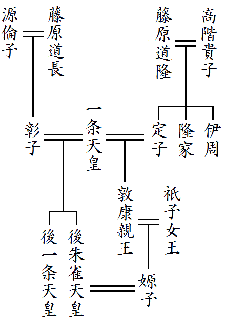
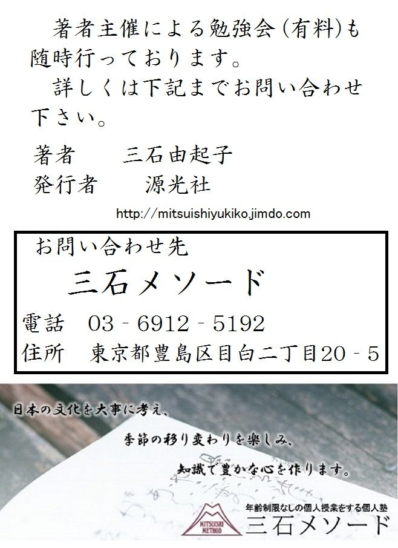

| これで読破！伊勢物語 | |
| 三石由起子 | |
| genkosha (2014) | |
『伊勢物語』は、歌物語の初めである。「歌物語」という文学史用の言葉を最初に使ったのは芳賀矢一（１８６７～１９２７）であり、伊勢物語を「和歌についての伝説集」であるとまず規定し、
「余はこれを名付けて歌物語と称す。歌を主としてその種々の境遇をあげたるものにして、歌の主意その中核を成せばなり」
と、述べている。
歌物語とは歌と地の文から成り、さらに歌が素晴らしい物語を言う。良い歌とは人情の機微に触れる歌、詠んだ場所や人や状況への興味を引き起こす歌のことである。
『後撰集』は、歌物語や歌語りへの傾斜が強く、歌物語の歌は『古今集』『後撰集』『拾遺集』から多く採られている。『古今集』の仮名序で紀貫之は、
「やまと歌は、人の心を種として、万の言の葉とぞ成れりける」
と、歌を説明しているが、「心と歌」との関係を「種と葉」として例える。名言なので覚えておくが良い。
単純な心の動きや感動なら三十一文字で楽々と表現できようが、複雑な状況や心の動きは、制限字数の中で表わすのは難しい。生きた心を歌にすべく刈り取ろうとしても、ある時には実際の心よりも縮小されるし、時には拡大されることもある。歌にして感動を鎮静化することもあろうし、高揚させることもある。歌から見れば、地の文は感動を殺し、解釈を制約する邪魔ものである場合もあろう。また、本来の歌を捻じ曲げる場合もあるかもしれない。
だが、歌を作ろうとする人間を含めて観賞する場合には、地の文の助けが必要になる。勅撰集には詞書きがあって、歌と文との共存がある。歌と地の文の両方が揃って、相互に分かち難く結びつけば、地の文は歌に力を貸す。歌は文に近づき、文は歌に近づく。歌と文とが相互に浸透し、その質を変えていく。
高木一之助（＝国文学者 １８８８～１９７４）は、
「歌と文とが相互的かつ有機的に作用して、和歌的あるいは抒情的な興味を深めると同時に、物語的になる特別の効果を持つ」
と説明している。
歌には、作られた事情がはっきり分かるものもあれば、分からないものもある。歌のでき方や、歌と地の文との関わり方には三つの場合がある。
第一には、もともと歌と文が揃っている場合。
第二は、もとに文があって歌が新しく付加された場合。
第三は、もとに歌があって、それに地の文が付加された場合。つまり物語が後から作られた場合である。
歌絵を考えてみよう。『源氏物語』から想像できる通り、
「歌絵というは歌の心を常の絵に描きて歌をも常ざまに書き加うるをいう」
とは、賀茂真淵の言葉である。『紫式部集』では友人に歌絵を送ったことが説明されている。海女の塩焼きの絵とその傍に薪を描いて、
「 四方の海に塩焼く海女の心から 焼くとはかかる嘆きをやつむ」
という歌を書き加えている。薪は「投げ木」と「嘆き」を掛けて表現したものである。日常、このように歌絵が使われていた。歌絵は歌を視覚化して見せる。だがこの歌絵も、絵が先に存在した場合と、歌から想像して絵を描いた場合とがあった。「歌物語」は、歌と文とが緊密に影響し、浸透しあったものなのである。
『大和物語』の百四十七段には、歌物語のでき方が書かれている。最初に生田川伝説が語られる。その伝説を描いた絵を見て、人々が歌を詠む。その後で再び伝説に戻って後日談が語られる。この話は、一人の女が二人の男に求婚されて、進退きわまって身投げする話である。その絵を見ながら女の立場になったり、男の立場になったりして皆で歌を詠んだ。そうして詠まれた歌十首を物語の中に書き加える。それに続く後日談は、伝説の墓のそばに旅人が宿って、男の諍いの声を聞き、血まみれの男の夢を見るのである。つまり生田川伝説と後日談との間に読者の歌が十首挟まれるという形式を成す。
このように、歌物語には読者が物語に触発されて歌を詠む場合がある。その歌は、もとの物語と合わせて記される。読者が時には作者になり得るのである。
一、歌物語は歌が中核である
二、歌物語はその歌が詠まれた状況にまで興味を抱いたものである
三、歌物語は歌と地の文がお互いに浸透しあうものである
四、歌物語は歌から文というでき方と文から歌へというでき方がある
五、歌物語は読者が作者になり得るし、創作も許される
これだけの知識を持って、『伊勢物語』を読む。第一段「初冠」は元服の話である。最終の百二十五段は男の辞世の歌で、初段と対応している。『伊勢物語』はある男の一代記なのである。各段は独立しているので、ひとつひとつの段が単独でも読める。現在の『伊勢物語』は誰かによって配列されたものであるが、独立した物語の一つ一つを相互に関係させて読むことで、ほぼ一人の男の一代記となる。
昔、男がいた。元服した時には、二人の姉妹に激しい恋の歌を詠みかける。やがて二条の后と思しき女性に恋をして、その結果であろうか、東国へ下り陸奥まで流浪する。やがて帰京し、長岡に住んだり東山に籠ろうとしたりして、ついにはまた筑紫に下る。また摂津、和泉の国に遊ぶこともあった。また狩りの使いとして伊勢に赴き、斎宮と夢のような一夜を持つ。その後、年老いた男は二条の后の行幸にも供奉して歌を奉る。また惟喬親王の出家に際しては、雪を踏み分けて尋ねて行くこともあった。長岡に住む老母からの便りに泣きもする。そして最後には「つひにゆく...」の辞世を詠んで死ぬのであった。
こういう奔放な男の、若々しい溌剌とした恋のあり様が「初冠」にはよくでている。信夫摺の狩衣を着た男は、馬に乗って春の山野を駆け巡ったのであろう。『伊勢物語』は初段も二段も、そして四段も季節は春である。
『伊勢物語』には、二百九首の歌があり、そのうちの三十首ほどは確実に業平の歌だとされる。『新古今集』の時代には、全ての歌が業平の作だと信じられていた。『伊勢物語』の主人公の中には確かに業平が存在する。だが、実際にはさまざまな虚構も加えられて膨らんだ人物である。業平の姿は大きく広がって「昔男」になった。だが、その「昔男」は、いつも業平に戻ろうとするようだ。
昔、男、初冠して、平城の京、春日の里にしるよしして、狩りに往にけり。その里に、いとなまめいたる女はらから住みけり。この男、かいまみてけり。思ほえず、ふる里にいとはしたなくてありければ、心地まどひにけり。男の着たりける狩衣の裾を切りて、歌を書きてやる。その男、信夫摺の狩衣をなむ着たりける。
春日野の若紫のすり衣
しのぶの乱れ限り知られず
となむ、追いつきて言ひやりける。ついでおもしろきことともや思ひけむ、
みちのくの忍もぢずり誰ゆゑに
乱れそめにし我ならなくに
といふ歌の心ばへなり。昔人は、かくいちはやきみやびをなむしける。
昔、ある男が元服して、奈良の京、春日の里に狩りに出かけて行った。元服して、所有することになった自分の土地が、どのような場所なのか、見たかったのだ。その里には、とても若々しく美しい姉妹が住んでいた。男がこの姉妹の姿を垣間見（＝覗き見）すると、この寂れた昔の都には不似合いなほど美しかったのである。男は、心がすっかり乱れて、着ていた狩衣の裾を切って歌を書いて贈った。信夫摺の狩衣であった。
春日野の若紫のすり衣
しのぶの乱れ限り知られず
（春日野の若い紫草のようなあなた方の姿を垣間見て、私の心は信夫摺の狩衣の模様のように限りなく乱れてしまいました）
と、大人びた様子で詠み贈った。
折にかなった情趣のあることだと思ったのだろう。
みちのくの忍もぢずり誰ゆゑに
乱れそめにし我ならなくに
（陸奥の信夫郡のしのぶ草で染めたこの狩衣の模様は乱れています。その模様のように心を乱す私は、あなた以外の人が原因ではありません）
という源融（＝嵯峨天皇の皇子で光源氏のモデル）の趣向であった。
昔の人はこのように情熱的で激しく、風雅なふるまいをしたものなのだ。
この「初冠」の奈良の都も、実際の業平と重なって趣が深い。業平は阿保親王（＝平城天皇の皇子）の子である。平城天皇は、嵯峨天皇に譲位した後、平城京に移り住んで「奈良の帝」と呼ばれた。やがて、嵯峨天皇と対立して薬子の変が起こる。皇太子・高岳親王（＝平城上皇の皇子）は廃され、阿保親王も大宰府に配流となった。平城上皇は新都・平安京に背をむけて平城京に帰った。業平にとっても因縁浅からぬその平城京を「初冠」では「ふるさと」と述べている。「ふるさと」は古く寂れた都であり、活気に溢れた平安京との対比であるが、その「ふるさと」に颯爽たる若い男の姿が味わいを深める。
「みやび」は「ひなび」に対する言葉である。「いちはやし」は「激しい」と解釈する。漢語で「激烈」「険峻」「困難」に当たる。「いちはやきみやび」は、「激しい風流」を意味する。男は躊躇わずに女に歌を贈る。美女を見るや否や、間髪入れずに着ていた狩衣の裾に歌を書きつけて贈る。男らしい奔放さである。文体もリズミカルで、躍動感がある。しかも、奔放さが粗野に流れず、「みやび」に直結しているのである。風流の機微を捉えたとっさの判断が、粗野を感じさせない。源融の歌の「みちのくのしのぶもぢずりたれゆゑに 乱れそめにしわれならなくに」を並べて優雅さが強調され、次の「いちはやきみやび」が理解できる。
元服したばかりの若い男が、統御された激情に重ねられる。『伊勢物語』の各段は、この「みやび」の理念に支えられている。
初段「初冠」は後の文学に多大な影響を与えた。『源氏物語』もその一つである。光源氏が北山で若紫を見染め、この少女が紫の上となる。「昔男」と源氏とは、都から出かけた方向は逆だが、また「昔男」は鷹狩り、源氏は病気の療養に行ったのだが、紫式部は充分にこの「初冠」を意識していたことだろう。若紫という名も「春日野の若紫のすり衣」からの連想だろう。『源氏物語』の紫の上は理想の女性像を象徴して描かれるが、「初冠」の「なまめいたる女はらから」に名前を付ければ「若紫」だったに違いない。
昔、男ありけり。奈良の京は離れ、この京は人の家まだ定まらざりける時に、西の京に女ありけり。その女、世人にはまされりけり。その人、かたちよりは心なむまさりたりける。ひとりのみもあらざりけらし、それをかのまめ男、うち物語らひて、帰り来て、いかゞ思ひけむ、時はやよひのついたち、雨そぼふるにやりける。
起きもせず寝もせで夜を明かしては
春のものとて眺め暮らしつ
昔、男ありけり。奈良は都でなくなり、新都の京はまだ名のある人の邸がどこにあると決まってもいない時の話である。朱雀大路の西に一人の女が暮らしていた。世間の女よりは器量が上の女であった。そうしてその外見よりもさらに心と頭が優れていた。どうやら一人暮らしというのでもない様子であった。それを、例の色恋に熱心な男（＝業平）が、訪ねては取り留めもない雑談だけをして家に帰って来たのだが、何を思ったのか、そぼふる雨の中に使いを走らせて女に歌を届けさせた。時期は三月の初めであった。
起きもせず寝もせで夜を明かしては
春のものとて眺め暮らしつ
（起きるのでもなく寝るのでもなく、夢のように一夜を明かし、昼はまたぼんやりと、春の季節ならではの長雨を眺めて、一日物思いをして過ごしてしまった）
外は長雨が降っている。自分は「眺め」物思いをしている。起きるでもなく寝るでもない夜を明かした。あなたと共寝もしなかった。春だから「長雨（＝眺め）」も仕方ないが、中途半端で所在ないことだった。
さて、三段～六段は二条の后に関するものである。この四つの段はそれぞれが独立した段で、「昔男」と二条の后の物語が順次に展開されるわけではない。相互に食い違う場面が多出する。四段では女は保護者の手で別の場所に隠されるが、五段では保護者が許している。六段では駆け落ちした女を保護者が取り返す。男の恋は、許されたり遮断されたりするのだが、この四つの段を並べて置くことによって、ぼんやりと一つの恋物語が浮かび上がって来る。
三段は、男が女に「ヒジキモ」という物に歌を添えて、叶わぬ恋を訴える。
昔、男ありけり。懸想しける女のもとに、ひじき藻といふものをやるとて、
思ひあらば葎の宿に寝もしなむ
ひじきものには袖をしつつも
二条の后の、まだ帝にも仕うまつりたまはで、ただ人にておはしましける時のことなり。
昔、男ありけり。思いを掛けていた女君のところにヒジキモというものを贈るのに、
思ひあらば葎の宿に寝もしなむ
ひじきものには袖をしつつも
（あなたに私を思ってくださる気持ちがあるのならば、たとえ葎の生い茂ったようなあばら家にでも寝もしましょう）
これは二条の后がまだ帝に入内なさる前の、普通の御身分であった時のことである。
ヒジキモノはひじくもの、つまり「引き敷くもの」である。本文には「ヒジキモといふもの」とある。「といふもの」とわざわざ言って断言しないのは、よくは知らないというニュアンスであり、読者に対して、自分には耳慣れない物だという姿勢を示している。「ひじきも」は、海藻のヒジキのことである。「ひじきもの」は「引き敷くもの」であるが、その「の」を取れば「ひじきも」になる。このように歌の中に物の名前を詠み込む方法を「物の名」あるいは「物名」、後には「隠し題」と言った。『古今集』の巻十は、こうした物の名を集めている。この歌の意味は「お気持ちがあるなら葎の宿も厭いません」という程度である。
しかし、これを男の歌だと解釈するのは不自然で、もともとは女の歌だったという説もある。そうであれば物語の作者は、もとの歌を捻じ曲げて、無理矢理、物語に仕立て上げたことになる。この歌は『古今集』にはなく、作者も不明である。巷間に伝わる歌がここで登場する。
この後、二条の后の物語は六段まで続くが、その成立は、四段と五段が古く、三段と六段は、後から付加されたものだと言われる。
昔、東の五条に、大后の宮おはしましける、西の対に住む人ありけり。それを本意にはあらで心ざし深かりける人、行き訪ひけるを、睦月の十日ばかりのほどに、ほかに隠れにけり。ありどころは聞けど、人の行き通ふべき所にもあらざりければ、なほ憂しと思ひつつなむありける。またの年の睦月に、梅の花盛りに、去年を恋ひて行きて、立ちて見、ゐてみ見れど、去年に似るべくもあらず。うち泣きて、あばらなる板敷に月の傾くまで臥せりて、去年を思ひ出てよめる。
月やあらぬ春やむかしの春ならぬ
わが身ひとつはもとの身にして
と詠みて、夜のほのぼのと明くるに、泣く泣く帰りにけり。
昔、東の京（＝左京）に大后の宮（＝皇太后）がお住まいであった。その御殿の西の対に住む女君がいた。その女君を深く思っている男が訪ねては逢っていたが、それは元からの恋心ではなかった。一月の十日あたりに女君はよそに隠れてしまった。いる場所は聞いたが、普通の人が通って行けるような邸ではなかった。諦めはしたが、辛いことだと日を送った。
翌年の正月、梅の花盛りの頃、去年を恋しく思い出して、かつて女君がいた西の対を訪れた。立ったり座ったりして、あたりを見回したが、去年のままであるはずもない。男は泣きながら、がらんとした板敷の部屋にいた。月が西に傾くまで泣き伏して、去年を思い出して歌を詠んだ。
月やあらぬ春やむかしの春ならぬ
わが身ひとつはもとの身にして
（月は昔の月ではないのであろうか。春は昔の春ではないのだろうか。変わらぬ筈の物までが変わって見える。わが身だけがもとのままで）
と詠んで、ほんのりと夜が明ける頃に泣く泣く帰った。
この段は二条の后物語の中心を成す特に古い段である。歌物語に相応しい立派な歌で、『伊勢物語』らしい段として読まれて来た。
東の五条の大后の宮とは、仁明天皇の皇后（＝藤原冬嗣の娘・順子）のことである。その順子の邸の西の対の屋に女君が住んでいた。寝殿造りの建物の正殿は寝殿で、その東と西、あるいは北に対の屋がある。対の屋と寝殿とは渡殿でつながれ、西の対にはしばしば大事な姫君が住んでいる。『源氏物語』でも源氏は紫の上を二条院の西の対に住まわせた。西の対に住んでいると明記される以上、東の五条の宮で大事に扱われた姫君だったということである。そこを出てからは空き家同然になったという書きぶりからも、身分の高い姫君だと分かる。
「本意にはあらで」は「前々からの気持ちではなくて」という意味である。男の女を思う気持ちは深かったが、それは前々からの気持ちではなかったという随分と不思議な説明である。この説明がなぜ必要だったのかを考えると、その状況が推測される。とても本意を遂げることはできないと、「初めから諦めていた」のだが、やはり気持ちが深くなってしまったのであった。この男の恋は、女との結婚では終わらない。結婚が許されない状況とは、親族の反対、風流や色好みの恋などがそうであるが、宮中に入内する前の女だったからである。「本意にはあらで、心ざし深かりける人」という不思議な一文は、極めて内容の濃い、男の心情の説明である。
時期は、「睦月の十日ばかり」である。正月の賑わいと男の悲しい気持ちを対比させる。「十日ばかり」は、月を意識した表現である。十日ばかりの月が、山の端に隠れるように、姫は隠れてしまったのだった。八十二段にも「あるじの親王、酔ひて入り給ひなむとす。十一日の月も隠れなむとすれば」と、月の描写がある。
場所は聞いたが、「人の行き通ふべき所にもあらざりければ」であった。これは宮中を指す。女は入内したのであった。大后の宮の御殿には通うことができた男である。それが行けない場所となれば、そこよりも上の場所、つまり宮中しかない。
続く文章は、翌年の男の姿を描く。梅の花が春であることをはっきりと示す。男は西の対を訪れて、立って見回し、座って見回して、「去年を恋ひて」いる。「女を恋ひて」ではなく、「去年を恋ひて」嘆く。歳月は再び帰らぬ。『和漢朗詠集』の「年年歳歳花相似たり、歳歳年年人同じからず」は、よく引き合いに出されるが、「月やあらぬ」の歌は、変わらぬ姿を見せる月や花に向かって嘆く歌である。変わらぬはずの自然が変わったのか、変わるはずの人間は変わらずにいるのにと、切ない思いが伝わって来る。
昔、男ありけり。東の五條わたりにいと忍びていきけり。密なる所なれば、門よりもえ入らで、童べの踏みあけたる築地のくづれより通ひけり。人しげくもあらねど、たびかさなりければ、あるじ聞きつけて、その通ひ路に、夜毎に人をすゑてまもらせければ、いけどもえ逢はで帰りけり。さてよめる。
人知れぬわが通ひ路の関守は
よゐよゐごとにうちも寝ななむ
とよめりければ、いといたう心やみけり。あるじゆるしてけり。
二條の后に忍びてまゐりけるを、世の聞えありければ、兄人たちのまもらせ給ひけるとぞ。
昔、男ありけり。東の京の五条あたりに大層人目を忍んで通っていた。密かに通う所なので門から入ることはできず、子供たちが踏み荒らして通り道にしてしまった土塀の崩れから通っていた。人目は多くもなかったが、度重なって、あるじが聞きつけ、夜毎に番人を置いて見張らせるようになった。行っても逢えずに帰る時、次のような歌を詠んだ。
人知れぬわが通ひ路の関守は
よゐよゐごとにうちも寝ななむ
（人知れぬ私の恋の通い路の番人は、どうか毎晩眠ってしまってほしい）
そう詠んだので、女君はひどく心を痛め、主人も二人の仲を許した。
二条の后の許に人目を忍んでお通い申していたのだが、世間の噂もあったので、后の兄たちが見張らせなさったのだという。
前段と同じ「東の五条あたり」であるが、大后の宮の邸ではない。これは続く「築地の崩れ」を書くためである。五条あたりの土塀の崩れた邸という新たな設定である。五条というのは色好みの恋の舞台として文学作品の中では、なじみの場所なのである。『大和物語』の百七十三段には良岑宗貞（＝僧正遍照）の色好みの話があるが、これも五条辺りのできごとである。『源氏物語』の「夕顔」の巻も五条辺りのことであった。「むつかしげなる大路のさま」とある。ゴミゴミとした雰囲気の中で源氏と夕顔の恋物語が語られる。
この歌の『古今集』の詞書には、「童べの踏みあけたる」という記述がない。『古今集』では、こうある。
「東の五条わたりに、人を知りをきてまかり通ひけり。忍びなる所なりければ門よりしも、え入らで垣の崩れより通ひけるを、度重なりければ主聞きつけて、かの道に夜ごとに、人を伏せて守らすれば、行きけれど、え逢はでのみ帰りて、よみて、遣りける
業平朝臣
人知れぬわが通ひぢの関守は
よゐよゐごとにうちも寝ななむ」
つまり、『伊勢物語』では、子供たちの遊びの通り道から女の部屋に通うという設定にして、一種大らかな滑稽味を出したのである。『古今集』とは違った味わいが『伊勢物語』にはある。「童べの」が、五条あたりの猥雑な雰囲気をよく出すことになった。
「つきひじ（築地）」は、土を突きあげて固めただけの土塀である。後にはこれに瓦の屋根をつけて崩れにくくしたが、同時に築地も細身になっていった。平安時代の作品に現われた築地は、『竹取物語』では、その上に千人の軍勢を乗せている。月からの使者を迎え撃つ場面である。また『和泉式部日記』の冒頭には「ついひじの上の草 青やかなる」とある。築地の上に撫子の種を蒔く描写も見られる。いかにも子供たちが遊び場にして、穴を開けそうな場所であった。
そこから女の部屋に通う男を阻止しようと、主が番人を立てるのも呑気な話である。だが、崩れを修理したり柵を設けたりしては、歌が成立しないのである。歌は、「わが通ひ路の関守は」と大げさな言葉だが、その関守は、子供が開けた穴を見張る番人なのである。
『古今集』の歌を、『伊勢物語』は、創作した。歌を聞いて女は心を痛め、歌のうまさに感動して、主は二人の仲を許す。これは『古今集』仮名序の「目に見えぬ鬼神をも哀れと思はせ」であろう。主が許したのは男への同情ではなく、歌への感動である。
この段の趣きは、前の四段とはだいぶ違う。「とぞ。」と伝聞の形で終わり、三段と同様に事実とつきあわせてみせた。物語の面白さは別物として味わってから、事実を説明する手法で、四段の緊張した文章と比べると余裕がある。
昔、男ありけり。女のえ得まじかりけるを、年を経てよばひわたりけるを、からうじて盗み出でて、いと暗きに来けり。芥川といふ河を率て行きければ、草の上に置きたりける露を、「かれは何ぞ」となむ男に問ひける。ゆくさき多く夜も更けにければ、鬼ある所とも知らで、神さへいといみじう鳴り、雨もいたう降りければ、あばらなる蔵に、女をば奥に押し入れて、男、弓胡籙を負ひて戸口に居り、はや夜も明けなむと思ひつつゐたりけるに、鬼はや一口に食ひてけり。「あなや」と言ひけれど、神鳴るさはぎにえ聞かざりけり。やうやう夜も明けゆくに、見れば、率て来し女もなし。足ずりをして泣けどもかひなし。
白玉かなにぞと人の問ひし時
露と答へて消えなましものを
これは、二条の后のいとこの女御の御もとに、仕うまつるやうにてゐたまへりけるを、かたちのいとめでたくおはしければ、盗みて負ひて出でたりけるを、御兄人堀河の大臣、太郎国経の大納言、まだ下らふにて内へまいりたまふに、いみじう泣く人あるを聞きつけて、とゞめてとりかへしたまうてけり。それを、かく鬼とはいふなりけり。まだいと若うて、后のたゞにおはしける時とや。
昔、男ありけり。結婚できそうにない人に、何年も言い寄り続けていたが、やっとのことで盗み出して、大層暗い夜にやって来た。芥川という川の畔で、女は草の上の露を見て、
「あれは何でしょうか。」
と、男に訊いた。
行く先もまだ遠く、夜も更けてしまっていた。雷もひどく鳴るし、雨も大層降るので、男はそれが鬼の住む所とも知らずに、戸締りもない、がらんとした蔵に女を入れたのであった。奥の方に押し入れてから、男は弓を持ち、やなぐいを背負って戸口に立った。早く夜が明けてほしいと念じながら座っているばかりであった。だが鬼は、早くも女を一口で食ってしまったのである。
「あれえ。」
と、悲鳴を上げたが、雷の音に紛れて、その声は男に届かなかった。
だんだん夜も明けて来たので、男が奥を振り返ってみると、連れてきた女がいない。地団太を踏んで泣いたが何の甲斐もなかった。
白玉かなにぞと人の問ひし時
露と答へて消えなましものを
（こんなことなら女が、あれは白玉でしょうか、何でしょうかと尋ねた時に、露だよ、と答えて、自分も露のように消えてしまえばよかった。）
この女君は、染殿の后（＝文徳天皇の女御で清和天皇の母）にお仕えする形でおいでになったが、顔立ちが大層美しくていらっしゃったので、この男が盗んで背負って逃げ出したのであった。女のご兄弟の堀川の大臣・基経（＝藤原基経、長良の三男で良房の養子）と、長良の長男である国経といったお方が、まだ官位も低い頃のことだったが、内裏に参られる途中にひどく泣く人がいるのを聞きつけて、車を止めて女をお取り返しになられたのである。それをこのように鬼の仕業だと言っている。
まだ后が大変若くて入内なさる前の、普通のご身分だった頃の話である。
男が、高貴な家の姫君を盗んで逃げる話は多い。
『大和物語』の百五十五段では大納言の姫君を盗んで安積山に逃げる話がある。男に盗み出された女は山の中で匿われて男の運んでくる食料で暮らしていたが、ある日のこと、女は山の中の湧水に映った自分の姿を見た。それは、かつての自分とは似ても似つかぬみすぼらしい姿だったので、嘆いて、歌を詠んで、自殺してしまう話である。
『更級日記』の竹芝伝説もある。帝の姫君を火焼屋番（＝火を焚いて番をする警備の衛士）の男が盗み出す。これは姫に懇願されてのことだった。追手が来るが、姫は頑なに帰ることを拒む。帝は仕方なく、生きている限りはと、武蔵国の領地を与えた。二人は立派な御殿に仲良く暮らすという「めでたし、めでたし」で終わる話である。
この六段も男が姫を盗み出す話の一つである。鬼が女を食うという話で言えば『今昔物語』を代表とする怪異談も多い。
さて、舞台は芥川である。三段、四段、五段と読み進んで、この段になると物語が長くなり、歌は一首だけになる。まるで歌が添え物のように扱われているように見える。だが、この段の中心はやはり歌である。「かれは何ぞ」と、女が男に訊くことから始まる物語は、歌に向かって進んでいる。地団太を踏んで悔しがる男の心も、最後の歌に向かって収斂していく。歌は、長い物語に助けられて奥行きを増し、核となってこの物語を締めくくり、完成させている。
物語に付け加えられた「注記」は特別に長い。注記自体が芥川の物語の余韻を断ち切るような書きぶりで、物語とは完全に別物になっている。その理由は、二条の后と業平の恋物語という実録的な興味が、歌物語の興味に勝ったからであろう。『伊勢物語』は、各段が別々の物語でありながら、男の一代記の形を取ろうする構成を持っている。この六段は、実録的な興味と、歌物語としての興味が対立した顕著な例である。この内部の対立こそが、『伊勢物語』を作り出した原動力なのである。
二条の后は清和天皇の中宮で、陽成天皇の母后であった。名は藤原高子、父は藤原長良である。兄弟には国経、基経がいる。この時代、仁明、文徳、清和、陽成と続く仁明天皇の后が藤原順子であり、順子の兄弟は長良や良房である。つまり二条の后（＝高子）の叔母が五条の后・順子であった。順子から文徳天皇が生まれ、文徳天皇の后が明子、この段に出てきた「いとこの女御」つまり染殿の后である。明子から清和天皇が生まれた。明子は、良房の娘である高子の従妹であった。皇室と藤原家が密接な関係を持つ中で、二条の后は重要な位置を占めている。『伊勢物語』は業平のみならず、二条の后をも史実と繋げているのである。
業平と二条の后の恋は事実だったのか、どうか。否定する学者も多い。恋には公の記録はない。だが、『古今集』に表われる二人の関係は、実に興味をそそられるものである。『古今集』には詞書に二条の后を記した歌がいくつかある。二百九十四は、
「二条后の、春宮の御息所と申ける時、御屏風に、立田河にもみぢ流れたる形を書けりけるを題にて、よめる」
という詞書の後で、素性法師の歌と並べて業平の
「 ちはやぶる神世も聞かずたつた河
から紅に水くくるとは」
の歌がある。また八百七十一には
「二条后の、まだ東宮の宮すん所と申ける時に、大原野に詣で給ひける日、よめる」
という詞書の後で業平の
「 大原や小塩の山もけふこそは
神世のことも思ひづらめ」
がある。
『古今集』が成立した延喜五年（９０５年）には、二条の后は皇太后の地位にあった。「東宮の宮すん所」は「東宮の母である御息所」という意味である。東宮は、即位前の陽成天皇である。こうした詞書を見る限り、業平が二条の后の御殿に出入りし、屏風の絵を見て歌を詠んでいたのが史実だと分かるのである。
四段と五段の歌は『古今集』にも収録されて、ほぼ同じ詞書が付けられている。『古今集』の撰者たちは、名前を明記こそしなかったが、二条の后と思ってもかまわないと宣言しているのである。撰者たちは二人の恋の風説を否定も肯定もしなかった。
なお、『三代実録』の仁和三年（８８７年）八月十七日の条に、女が鬼に喰い殺される話が伝えられている。武徳殿の東にある松原の西を、三人の美女が東へと歩いていた。その一人が男に誘われるまま睦語を交わしていたが、数刻の後、声が聞こえなくなる。喰い殺されたのであった。この話は『扶桑略記』『今昔物語集』『古今著聞集』に、鬼の仕業として伝えられた。東京大学名誉教授の秋山虔は、
「『伊勢物語』は、これらの伝承を二条の后物語の系列に組み込んだのだろう。」
と、考察している。
また、男の読んだ歌については、折口信夫の弟子である高崎正秀の解説を引く。
「この歌は、『古今集』源融の歌「主やだれ問へど白玉いはなくに さらばなべてやあはれと思はむ」に対する女の返歌として詠まれたものと推測している。この歌の詞書は「五節の朝に、かむざしの玉の落ちたりけるを見て、誰がならむととぶらひてよめる」である。」
三段～六段までは『古今集』を参考にすれば、「昔男」と二条の后との恋を認めるという方向で読むのが良いように思う。五条の后を加えると三人の后が登場した。それぞれ仁明天皇（＝五条の后・順子）、清和天皇（＝二条の后・高子）、文徳天皇の后（＝染殿の后・明子）である。注記はそのころの宮廷の秘事について興味を持って書かれている。
昔、男ありけり。京にありわびて、東にいきけるに、伊勢、尾張のあはひの海づらを行くに、浪のいと白く立つを見て、
いとゞしく過ぎゆくかたの恋しきに
うら山しくもかへる浪かな
となむよめりける。
昔、男ありけり。京で暮らす気力も失せて、東国に行ったのだが、伊勢と尾張の国境の海岸を歩きながら、浪がとても白く立つのを見て、
いとゞしく過ぎゆくかたの恋しきに
うら山しくもかへる浪かな
（遠くなる京が恋しいのに、羨ましいことだな、元へ帰って行く波よ）
と、詠んだのであった。
昔、男ありけり。京や住み憂かりけん、あづまの方に行きて住み所求むとて、友とする人ひとりふたりして行きけり。信濃の国、浅間の嶽にけぶりの立つを見て、
信濃なる浅間の嶽にたつ煙
をちこち人の見やはとがめぬ
昔、男ありけり。京に住みにくい事情でもあったのか、東国に住む所を捜そうと、友人を一人二人連れて行った。信濃国で浅間山に煙が上がるのを見て、
信濃なる浅間の嶽にたつ煙
をちこち人の見やはとがめぬ
（浅間の山に煙が立っている。この煙に気づかぬ者もいないだろう。人目を忍ぶ恋も、きっと世間に知られてしまうことだ。）
この「信濃なる」の歌は、浅間山の噴煙が見える地方のどこかで歌われていた民謡だと考えられている。人目を忍ぶ男女の恋が世間に知られることを恐れて浅間の煙に寄せた歌であるが、それを『伊勢物語』は、東下りの話群の中に仕込んだ。『新古今集』で、この歌が業平の作とされるのは『伊勢物語』によるものである。
次は「東下り」の諸段である。東国に下る旅の途中、まずは都にいる恋人を思って歌を詠む。九段では「その人の御もとにとて文書きてつく」と「御もと」を使って、相手の身分の高さを分からせる。京に残して来た恋人が二条の后であることを読者に知らせようという意図である。これまでの各段の読後感が切れずに尾を引く。
昔、男ありけり。その男、身をえうなき物に思ひなして、京にはあらじ、東の方に住むべき国求めにとて行きけり。もとより友とする人ひとりふたりしていきけり。道知れる人もなくて、惑ひ行きけり。三河の国、八橋といふ所にいたりぬ。そこを八橋といひけるは、水ゆく河の蜘蛛手なれば、橋を八つ渡せるによりてなむ、八橋といひける。その沢のほとりの木の蔭に下り居て、乾飯食ひけり。その沢にかきつばたいとおもしろく咲きたり。それを見て、ある人のいはく、「かきつばたといふ五文字を句の上に据ゑて、旅の心をよめ」といひければ、よめる。
唐衣きつゝなれにしつましあれば
はる〴〵きぬる旅をしぞ思ふ
とよめりければ、皆人、乾飯の上に涙落してほとびにけり。
行き〳〵て、駿河の国にいたりぬ。宇津の山にいたりて、わが入らむとする道はいと暗う細きに、蔦かえでは茂り、物心ぼそく、すゞろなるめを見ることと思ふに、修行者あひたり。「かゝる道はいかでかいまする」といふを見れば、見し人なりけり。京に、その人の御もとにとて、文書きてつく。
駿河なる宇津の山べのうつゝにも
夢にも人にあはぬなりけり
富士の山を見れば、五月のつごもりに、雪いと白う降れり。
時知らぬ山は富士の嶺いつとてか
鹿の子まだらに雪の降るらん
その山は、こゝにたとへば、比叡の山を二十ばかり重ねあげたらんほどして、なりは塩尻のやうになんありける。
なほ行き〳〵て、武蔵の国と下総の国との中に、いと大きなる川あり、それをすみだ河といふ。その河のほとりに群れゐて思ひやれば、限りなく遠くも来にけるかなとわびあへるに、渡し守、「はや船に乗れ。日も暮れぬ」と言ふに、乗りて渡らむとするに、皆人ものわびしくて、京に思ふ人なきにしもあらず。さるをりしも、白き鳥の、嘴と脚と赤き、鴫の大きさなる、水の上に遊びつつ魚を食ふ。京には見えぬ鳥なれば、皆人見知らず。渡し守に問ひければ、「これなむ都鳥」と言ふを聞きて、
名にし負はばいざ事問はむ都鳥
わが思ふ人はありやなしやと
とよめりければ、舟こぞりて泣きにけり。
昔、男ありけり。男は、自分を役立たずの無用者だと思い決め、もはや京では暮らすまい、東の方に住むべき国があるだろうと求めて行ったのだそうな。もとからの友達であった人を何人か連れて行ったそうな。道を知っている者もいないので、判断もつかぬままに歩いて、三河国の八橋という所に着いた。その場所を八橋と呼ぶのは、水の流れる川が蜘蛛手のように八方に分かれていて、そこに橋を渡してあるからである。その沢の畔の木陰に、馬から降りて腰を下ろし、乾飯を食べた。そこに杜若が大層美しく咲いているのを見て、一緒にいた人が、
「「かきつばた」という五文字を句の頭に置いて旅の思いを詠んでみよ。」
と言うので、男は次のように詠んだ。
「か」らごろも「き」つゝなれにし「つ」ましあれば
「は」る〴〵きぬる「た」びをしぞ思ふ
（長い間着ている唐衣が、なよなよと柔らかく慣れて来るように慣れ親しんだ妻が都にいるので、はるばるとやって来た旅が一層しみじみと思われることだ）
一行の人々は、みな身につまされて、乾飯の上に涙を落としたので、乾飯が涙でふやけてしまった。
また旅を続けて駿河国に着く。宇津の山にさしかかったが、入ろうとする道がとても薄暗く細いのであった。その上に、蔦やカエデが茂っていた。心細くて、ひどく辛いことだと思っていると、一人の修行者とばったりと出会った。
「こんな場所に、なぜいらっしゃるのですか。」
と言う人をよく見れば、以前、都で見知った人だった。そこで、京の都のあの方の御許にと、手紙を書いて修行者に託す。
駿河なる宇津の山べのうつゝにも
夢にも人にあはぬなりけり
（私は駿河国の宇津の山の辺りに来ましたが、その山の名「宇津（＝現実）」にも、夢にも、あなたにお目にかかれません。あなたはもう私をお忘れになったのですね。）
富士山を見れば、五月の月末なのに、雪がたいそう白く降っている。
時知らぬ山は富士の嶺いつとてか
鹿の子まだらに雪の降るらん
（時節を弁えぬのは富士山である。一体、今をいつだと思って鹿の子まだらに雪を積もらせたままでいるのか）
その山は都でいえば、比叡山を二十ほど重ねた高さがあって、形状は塩田の砂の山のようであった。
なおも先に旅を続けて、武蔵国と下総国との間にある川に出た。これを隅田川という。その川の辺に皆で一つになって腰を下ろす。そうして、これまでの旅とこれからの旅とを思った。遠く都へ思いを馳せて、何と遠くまで来たことかとお互いに言い合っていると、川の渡し守が、
「早く舟にのれ。日も暮れてしまう。」
と、言うので乗ろうとするが辛かった。
一行は、無性に辛く、悲しい思いである。それというのも、それぞれ京に愛しい人がない訳でもなかったからだ。自然に恋人が頭に浮かんで来る。そんな折も折、嘴と脚とが赤い、白い鳥で、鴫ほどの大きさのものが、水の上に遊びながら魚を食べているのが見えた。京では見かけない鳥なので、誰も知らない。渡し守に訊いてみると、
「これがそれ、都鳥なのですよ。」
と、言う。それを聞いて、
名にし負はばいざ事問はむ都鳥
わが思ふ人はありやなしやと
（都鳥という名前を持っているなら、さあ尋ねてみよう。聞かせてくれ。都鳥よ、私の愛する人は都で無事に暮らしておいでかどうか。）
と詠んだので、舟の中の一行は、望郷の思いに堪え切れず感泣する。
男の旅の動機は、「身をえうなき物に思なして」というものであった。失恋とそれに伴う醜聞と、おそらくは出世の道も断たれたのであろう。これが「東下り」全体の重大な要素である。
唐衣の歌は『古今集』に入っているが、その詞書には「身をえうなき物に思なして」という説明はない。この付加された一文が『伊勢物語』の特質なのである。
東下りの直前に置かれた七段と八段を見ると、七段では東下りの理由を「京にありわびて」都に住みづらくて、と書き、八段では「京や住み憂かりけん、あづまの方に行きて住み所求むとて」都に住みにくい何かの事情があったのだろうか、東に安住の地を求めようとして、となっている。それが九段ではさらに、男の心境に至っている。つまり、七段と八段では「ありわぶ」「住み憂し」と周囲の事情で男が住みにくくなったという書きぶりで、東に下る理由はどちらかと言えば受け身である。それに対して、九段では男の東国行きが男の意志に基づくものであると、「京にはあらじ」と男の並々ならぬ決意を表すことになった。この差は大きい。この時代、京は単に尊ばれたばかりではなく、人間世界の全てであった。その京にはいられぬ者と決め込んで、東国行きを決行するのは深刻な事態であった。
「初冠」で颯爽とした若者を描き、次に許されぬ恋に泣く男を描いた『伊勢物語』は、ここで京を捨てて生きる男を描き出す。『伊勢物語』で「もとより友とする人ひとりふたりしていきけり」と書かれたものが『古今集』には「友とする人一人二人誘ひて行きけり」と書かれている。『古今集』の解釈では、友人を誘っての東国旅行、物見遊山の旅とも取り得る。これが『伊勢物語』では「住むべき国を求めて」の旅である。連れて行く友人の性質も変わって来る。『伊勢物語』の友人は「もとより」の友人で、主人公と共に京を捨て去る決意をした友人であり、男の決意を自分の決意として受け止めた友人である。「道知れるひともなくて惑ひいきけり」も『古今集』の詞書には見られない。男たちの旅が流浪の旅だという表現である。
八橋という地名は『更級日記』にも登場するが、そこには「八橋は名のみして、橋の方もなく、なにの見所もなし。」とある。これは『伊勢物語』の記述を意識して書かれたものだろう。八橋がどんな場所かは『古今集』には説明がない。
「乾飯」は蒸して炊いたご飯を乾燥させた旅行用の携行食である。お湯や水で戻して食べる。男たちの旅のわびしさは、乾飯で強調されるが、『古今集』にはこれもない。
三段の「思いあらば...」の歌で「物の名」を説明したが、ここでは「杜若」の折り句が詠まれる。『古今集』の「物の名」には「おみなえし」を折り句にした歌が見られ、それは、次のようなものである。
「朱雀院女郎花合の時に、女郎花と言ふ五文字を、句の頭に置きて、よめる
貫之
「小」倉山「み」ね立ちならし「鳴」く鹿の
「経」にけむ秋を「し」る人ぞなき」
「唐衣」の歌には、歌の遊びの要素が多用されている。『伊勢物語』の男の深刻な心情を横に置いて、『古今集』では旅の憂さを晴らすための遊びだということが分かる。「唐衣」は、「物の名」を詠み込んだ「折り句」というだけではなく、念入りな縁語があり、あらゆる技巧を駆使して作られた。「唐衣」と歌い出し、衣服に縁のある「きつつ」の「着」、「なれにし」、「褄」、「はるばる」の「貼る（＝洗い貼り）」、さらにまた「着」がある。これらの縁語の多くは掛け詞でもある。「褄」は「妻」、「きぬる」は「来ぬる」であり「着ぬる」でもある。「唐衣」は「着る」の枕詞でもある。「唐衣きつつ」までは「なれ」にかかる序詞でもある。この時代の歌の技巧のあらかたが使われている。
歌の遊戯性からこの歌を考えると、旅で窶れた道連れへの揶揄、からかい、でさえある。そうなれば「涙ほとびにけり」も、冗談の延長上にあるのかもしれない。この段には、歌にも地の文にも二重三重の意味を持たせている。座興的遊戯的な性格と、都を捨てる深刻な決意が同時に進行している。遠い旅先で妻や女に寄せる思慕の情もある。一見矛盾するように見えるそれぞれの要素は、実に巧みに組み合わせられている。女への思慕が、この座興性によって包まれ、そのゆとりが嘆きや悲しみをさらに深くしている。近世の浄瑠璃では、悲劇の最高潮で面白おかしい場面が意図的に持ち込まれることがある。『伊勢物語』の作者が浄瑠璃の作者のようにそれを計算したかどうかはともかく、実に巧みな構成である。
駿河の場面は、後から付加された物だと考えられている。三河国と武蔵国との間に駿河国の話を入れようという気持ちが昔の人々に働いたらしい。修行者は「かかる道はいかでかいまする」と敬語を使い、また「その人の御もとに」と恋人に「御」がつけられていることから、男たちの身分が高いことや、京の恋人が大層な身分であることが分かって、読者は業平と二条の后を想像するのである。「唐衣」の歌に「妻しあれば」とあるのに、推測は「妻」から外れて、四、五、六段の二条の后と重なるのである。「御」が付けられたその時点から、作者は、もはや、前段の二条の后と重ねて読めという意図を表わしている。
「駿河なる」の歌には夢が語られる。平安時代の文学には夢を扱うことが大変多い。女の夢を見るのは、女のことを考えているからだというのは現代の考え方である。平安時代では、女が自分を思う気持ちが強いので、自分の夢の中にまで入り込んで来るのだと考えられていた。この歌はその考えに基く。あなたの夢を見ないのは、あなたが私を忘れたからだと言うのである。
「鹿の子まだらに」雪が降る富士山を描写するのに「ここにたとへば」と例を引くのは、『伊勢物語』は京に住む人々を読者として考えていたことが分かる。「京の山にたとえると」の意味である。
「塩尻」は、塩田の砂、で富士山のように高く積み上げたものである。海水を含ませて乾かし、塩分を砂に残す。鹿の子まだらの富士山を見て、塩田の砂山が、日に乾いて塩が浮き出る様子を思い出した。適切な比喩である。
「都鳥」はゆりかもめだと言われている。白い小型のかもめで嘴と脚が赤い。
「名にし負はば...」の歌は、ほとんど同じ詞書で『古今集』にある。『古今集』には詞書に「宮このいと恋しう覚えければ」とわざわざ書かれているが、これを『伊勢物語』という歌物語に入れるのは蛇足であろう。歌物語は、地の文と歌とが相乗効果を生み出すもので、このような解説は台無しになる。反対に歌物語ではない『古今集』では、どういう状態で詠んだかの説明が必要になる。また、『古今集』には、「しばし河のほとりに「下り居て」」とあるものが『伊勢物語』では「むれゐて」となって、一行が肩を寄せ合っている様子が著されている。群れを成すゆりかもめの一団のように捉えられて、想像を喚起する強い表現である。場面は国境の川で、これを越えればいよいよ都から遠ざかる。京の恋人がますます偲ばれる夕暮れ時である。渡し守は催促し、目に映るのは京には見えぬ鳥である。他国を流離う者の寂しさを、この白い鳥が刺激する。名前を聞けば「都鳥」である。そこで男たちの望郷の心が一挙に噴き出す。徐々に高まる気持ちをこの歌が吹き上げる。『伊勢物語』中、特に練り上げられた完成度の高い場面である。
業平の東下りは事実なのか、否かという論争は、昔からあった。これは、『古今集』の詞書にもあるからという理由で、事実だとする説が強い。二条の后との恋愛事件と、母・伊都内親王（＝桓武天皇の皇女）の死などが理由で、業平は東国へ下った。貞観四年（８６２年）の夏の事件だと断言する学者もある。
九段には、まず地名の連鎖がある。三河の八橋、駿河に入って宇津の山（＝富士の山）、それが武蔵と下総との国境にある隅田川へと繋がっている。地名や名称への興味がこの段には流れている。八橋の説明や、宇津の山の暗く心細い情景、富士山の美しい姿、隅田川の都鳥の姿を描きながら、都の読者の興味をかきたてる。読者がまだ見ぬ東下りの道中であった。地名と並んで歌がある。京に残して来た恋人を思う歌は、旅の心細さと入り混じって思慕の情を切なく盛り上げる。慣れにし妻、夢にも逢わぬ人、わが思う人、がこの段をまとめている。
さて、「身をえうなき物」世間に受け入れられぬ者と思い込んだ男という設定は、この物語全体にどう作用しているだろうか。この設定は、単純な「都恋しさ」に、切れるような激しさを与えた。「京にはあらじ」と旅発った男は、帰京を考えてはいない。都と女を自ら断ち切った上で、都と女を恋しがっている。自ら捨てた都であればこそ、なおさらに恋しかった。都との隔たりは距離だけではない。唯一の夢の通い路さえ断たれていた。『伊勢物語』六十五段には、罪を受けて地方に下る男の話がある。だが、この九段は、本人が決めた流浪感が主題であり、それだけに複雑な味わいがある。「身をえうなき物」と思いなした男は、九段ばかりではなく、ここから外に出て『伊勢物語』全体に影響を及ぼした。『伊勢物語』では、重層的に、地名と女と男の流浪感を交流させて九段を作っているが、旅の理由を「身をえうなき物」としたことは、「昔男」の性格を決定づけた。
九段は何回か手を加えて成立したと考えられている。しかも、読者には元の形の印象があるので、物語としては辻褄が合わない。それを『伊勢物語』の特徴として「重層的」だと説明する学者も多い。九段はその重層的な『伊勢物語』を濃縮させたような段なのである。重層性を味わうには、調和を楽しむように読むのも良いし、変化の過程を面白がるのも良い。どう読もうと見当外れにはならないのは、物語の中心に必ず歌があるからである。歌を中核として解釈すれば、読者の自由な発想で楽しむことができる。
昔、男、武蔵の国までまどひありきけり。さて、その国にある女をよばひけり。父はこと人にあはせむといひけるを、母なんあてなる人に心つけたりける。父はなおびとにて、母なん藤原なりける。さてなんあてなる人にと思ひける。このむこがねによみてをこせたりける。住む所なむ入間の郡、みよし野の里なりける。
みよし野のたのむの雁もひたふるに
君がかたにぞよると鳴くなる
むこがね、返し、
わが方によると鳴くなるみよし野の
たのむの雁をいつか忘れん
となむ。人の国にても、猶かゝることなんやまざりける。
昔、男が、武蔵国まで放浪して歩いて行った。そうして、その国に住む女に結婚を申し込んだ。女の父親は、別な男と結婚させようと言うのだが、母親は高貴な身分の男に執着していた。父親は身分が低く、母親は藤原氏の出身であった。それで、高貴な身分の男を婿にと望んだのである。この男に母親は歌を詠んでやった。住んでいた所は、入間郡の三吉野の里であった。
みよし野のたのむの雁もひたふるに
君がかたにぞよると鳴くなる
（三吉野の田の面に下り立ってあなたを頼りにしている雁も、ただひたすらあなたに心を寄せているよ、と鳴いております）
婿予定者の男は、返歌を寄越した。
わが方によると鳴くなるみよし野の
たのむの雁をいつか忘れん
（私に心を寄せますと鳴いている三吉野の田の面の雁を決して忘れはいたしません）
京を遠く離れた他国にあっても、女に歌を贈る優雅な行為は止まなかった。
昔、男、あずまへ行きけるに、友だちどもに、道よりいひをこせける。
忘るなよほどは雲ゐになりぬとも
空ゆく月のめぐり逢ふまで
昔、男が東国に下ったが、友人たちに旅の途中から詠んで来た歌。
忘るなよほどは雲ゐになりぬとも
空ゆく月のめぐり逢ふまで
（忘れないでくれ。身は雲の彼方に隔たろうとも、空を行く月がまた巡り来るように再び会う日まで）
昔、男ありけり。人のむすめをぬすみて、武蔵野へ率て行くほどに、ぬす人なりければ、国の守にからめられにけり。女をば草むらのなかにをきて、逃げにけり。道来る人、「この野はぬす人あなり」とて、火つけむとす。女、わびて、
武蔵野は今日はな焼きそ若草の
つまもこもれり我もこもれり
とよみけると聞きて、女をばとりて、ともに率ていにけり。
昔、男ありけり。人の娘を盗んで、武蔵野へ連れて行ったが、盗人なので国守の手が回って捕えられた。その際に、女を叢（くさむら）の中に置いて一人で逃げたのであった。跡をつけて来た追手が、
「この野の中に盗人がいるぞ。」
と、火をかけようとした時に、女は、困って訴えた。
武蔵野は今日はな焼きそ若草の
つまもこもれり我もこもれり
（武蔵野は今日は野焼きしないでください。この中に私の夫が隠れています。私も隠れています。）
と、詠んだと聞いて、女を捕えて男と一緒に連れて行った。
昔、武蔵なる男、京なる女のもとに、「聞ゆれば恥づかし、聞えねば苦し」と書きて、上書に、「武蔵鐙」と書きてをこせてのち、をともせずなりにければ、京より女、
武蔵鐙さすがにかけて頼むには
問はぬもつらし問ふもうるさし
とあるを見てなむ、堪えがたき心地しける。
問へばいふ問はねば恨む武蔵鐙
かゝるおりにや人は死ぬらん
昔、武蔵に住む男が、京に住む女の許に、
「言えば恥ずかしいし、言わないのは苦しいので。」
と、手紙を書いて、上書には「武蔵鐙」と書いて、送って寄越したのだが、その後、すっかり音沙汰がなかったので、京から女が、
武蔵鐙さすがにかけて頼むには
問はぬもつらし問ふもうるさし
（諦めたつもりでもさすがに頼りにしているので、お手紙がないのは情けなく、また、お手紙があるのも新しい女性が思われて嫌な気が致します）
と、詠んで出した。それを見て、男は堪え難くなって、
問へばいふ問はねば恨む武蔵鐙
かゝるおりにや人は死ぬらん
（手紙を書けば嫌だと言うし、書かねば薄情だと恨むし、一体、どうしたらいいのか。このような時に人は進退極まって死ぬのだろうな）
と、詠んだ。
「武蔵鐙」は、武蔵で作られる鐙である。鐙は鞍の両側にかけて足を乗せる馬具である。「武蔵鐙」と書いたのは、お前という妻がありながら、東国の女ともわりない仲になったという告白である。『古今六帖』には「さだめなくあまたにかくる武蔵鐙 いかに乗ればかふみはたがふる」を踏まえている。「武蔵鐙」の苦しさを共有する男女の打開策のなさが切ない。
昔、男、みち（陸奥）の国にすずろに行きいたりにけり。そこなる女、京の人はめづらかにやおぼえけむ、せちに思へる心なむありける。さて、かの女、
なかなかに恋に死なずは桑子にぞ
なるべかりける玉の緒ばかり
歌さへぞひなびたりける。さすがにあはれとや思ひけん、いきて寝にけり。夜深く出でにければ、女、
夜も明けばきつにはめなでくたかけの
まだきに鳴きてせなをやりつる
といへるに、男、京へなんまかるとて、
栗原のあねはの松の人ならば
都のつとにいざといはましを
といへりければ、よろこぼひて、「思ひけらし」とぞいひをりける。
昔、男が、陸奥国に当てどもなく行き着いた。そこに住む女が、京の人を珍しく思ったのか、ひどく思慕の情を抱いたのだった。そうして、その女は、
なかなかに恋に死なずは桑子にぞ
なるべかりける玉の緒ばかり
（なまじ恋煩いで死ぬよりも蚕に生まれれば良かった。短い命でもあんなに夫婦仲のいい蚕ですから）
何とも歌さえも田舎じみている。だが、さすがに男は気の毒に思ったのか、行って一晩寝たのである。夜深くに女の家を出たので、女は、
夜も明けばきつにはめなでくたかけの
まだきに鳴きてせなをやりつる
（夜が明けたら、あの腐れ鶏を水槽にぶち込んでやる。夜も明けぬうちに鳴いて夫を出してしまったのだから）
と、詠んだのであった。男は呆れて京へ帰ろうとして、
栗原のあねはの松の人ならば
都のつとにいざといはましを
（栗原のあねはの松が人ならば、さあと誘って都の土産に連れて行くのに）
と、詠むと、女は勘違いして喜び、男が自分を思っていたらしいと触れまわっていたのだった。
「あねはの松」の「あねは」は宮城県栗原郡姉歯である。「姉歯の松が人ならば」は「お前が普通の女なら」の意であった。『古今集』には「をぐろ崎みつの小島の人ならば 都のつとにいざといはましを」がある。田舎娘の心にほだされて応じてやった男は、やはり野卑な振舞いが堪えられない。東国の古い歌謡をもじって詠んでも、真意は伝わらなかった。お互いにとってそれがかえって幸せであったという歌の功徳の切なさが思われる。
昔、陸奥の国にて、なでふことなき人の妻に通ひけるに、あやしうさやうにてあるべき女ともあらず見えければ、
しのぶ山忍びて通ふ道もがな
人の心のおくも見るべく
女、かぎりなくめでたしと思へど、さるさがなきえびす心を見ては、いかゞはせんは。
昔、陸奥国で、どうという身分ではない男の妻の許に通っていたが、どうにも納得ができない。こんな平凡な男の妻でいるはずがない女のように思われたのである。そこで、
しのぶ山忍びて通ふ道もがな
人の心のおくも見るべく
（しのぶ山という名のように、人目を忍んであなたに通う道が欲しいものです。このような暮らしが相応しいとは思われないあなたの本心を見られるように）
と、詠んでやった。
女は、その男を素晴らしく立派な人だと思っていたが、こんなみっともない田舎者の野暮さ加減を見透かされては、たまらないと思った。
この女は、返歌を拒否したのである。都会の男に相応しい自分だとは思えなかったのだろう。
昔、紀の有常といふ人ありけり。三代の帝に仕うまつりて、時にあひけれど、のちは世かはり時うつりにければ、世の常の人のごともあらず。人がらは、心うつくしくあてはかなることを好みて、こと人にも似ず。貧しく経ても、猶昔よかりし時の心ながら、世の常のことも知らず。年ごろあひ馴れたる妻、やう〳〵床離れて、つゐに尼になりて、姉のさきだちてなりたる所へ行くを、男、まことにむつましきことこそなかりけれ、今はと行くを、いとあはれと思けれど、貧しければ、するわざもなかりけり。思ひわびて、ねむごろにあひ語らひける友だちのもとに、「かう〳〵今はとてまかるを、何事もいさゝかなることもえせで遣はすこと」と書きて、おくに、
手を折りてあひ見し事をかぞふれば
とおといひつゝ四つは経にけり
かの友だち、これを見て、いとあはれと思ひて、夜の物までをくりてよめる。
年だにもとおとて四つは経にけるを
いくたび君をたのみきぬらん
かくいひやりたりければ、
これやこのあまの羽衣むべしこそ
君がみけしとたてまつりけれ
よろこびにたへで、又、
秋や来る露やまがふと思ふまで
あるは涙の降るにぞ有ける
昔、紀有常という人がいた。三代の帝にお仕え申し上げて、権勢を誇っておられたが、後には時勢も変わり、時も移って、世間並の暮らしもできずに零落してしまった。人柄は、心美しく、上品で優雅なことを好み、他の人とは違っている。貧しく暮らしながらも、依然として昔、豊かであった頃の心のまま、世間の普通の暮らし方も知らなかった。長年、睦みあった妻も、だんだんと床離れして、遂には尼になった。先に尼になっていた姉の所に行く妻を見て、その男は、本当に心から睦まじかったことはなかったが、今はこれでお別れなのだと、しみじみと愛しく思った。だが、貧しくて何もしてやれない。苦慮の末に親しい友に、
「かくかくの事情で、今は別れる妻だが、些細なことさえしてやれずに送り出すのだ」
と、手紙を書いて、その奥に、
手を折りてあひ見し事をかぞふれば
とおといひつゝ四つは経にけり
（指を折って共に暮らした年月を数えて見ると、四十年も経っていたのだった）
と、詠む。それを受け取った友は、しみじみとして夜具の類まで贈って、
年だにもとおとて四つは経にけるを
いくたび君をたのみきぬらん
（過ぎた月日でさえ四十です。その間、あなたを何度頼りになさって生きて来られたことか）
と、詠んで慰めると、有常は、
これやこのあまの羽衣むべしこそ
君がみけしとたてまつりけれ
（これは天から降って来た天の羽衣（＝尼の羽衣）です。あなたがお使いの物なら道理です）
と、詠んだが、あまりに嬉しくてもう一首、詠む。
秋や来る露やまがふと思ふまで
あるは涙の降るにぞ有ける
（秋が来て露に濡れているのかと思うほど、私の嬉し涙で袖が濡れております）
前段で、東国の話群は終わり、ここからは京の物語である。紀有常は、業平の岳父である。この段が、『伊勢物語』の時代背景を描写するのだが、ここに登場する「ねむごろにあひ語らひける友だち」は、業平のことだと考えて差し支えない。
紀有常の妹・静子は文徳天皇の第一皇子・惟喬親王の生母である。もし、この皇子が東宮に立てば、伯父・有常は外戚として権勢を握ったであろう。だが、実際には藤原氏を後見とする第四皇子・惟仁親王（＝清和天皇）が位に就き、有常は中央から去った。有常は、世事に無頓着で、俗界を超越し、清貧に甘んじたと言われている。
秋山虔の解説を引く。
「もとよりこの段の眼目は、このような状況の中での歌の贈答の意義にある。歌に証される心の流露によって、急迫する現実とは別位相のうるわしい連帯が作り出されている。」
年ごろおとづれざりける人の、桜のさかりに見に来たりければ、あるじ、
あだなりと名にこそ立てれ桜花
年にまれなる人も待ちけり
返し、
今日来ずは明日は雪とぞ降りなまし
消えずはありとも花と見ましや
何年も訪れのなかった人が、桜の盛りにやって来たので、その家の主が詠む。
あだなりと名にこそ立てれ桜花
年にまれなる人も待ちけり
（移ろいやすく散りやすいという桜の花ですが、こうして滅多に来ないあなたを待って咲いていたのですよ。）
返し、
今日来ずは明日は雪とぞ降りなまし
消えずはありとも花と見ましや
（今日私が来なければ、この花は明日は雪のように消えてしまったでしょう。たとえ消えなくとも、花として眺めることはできなかったでしょう）
秋山虔の解説を引く。
「「年ごろおとづれざりける人」は、暗に業平を指している。「主」は、性別が分からないが男だろう。この歌は詞書が多少違うが『古今集』に収められている。桜花を巡っての応酬、長い間の無沙汰への非難と、その切り返しである。この段には冒頭に「昔」がないが、脱落と思われる。」
昔、なま心ある女ありけり。男、近うありけり。女、歌よむ人なりければ、心見むとて、菊の花のうつろへるを折りて、男のもとへやる。
紅ににほふはいづら白雪の
枝もとをゝに降るかとも見ゆ
男、知らずよみによみける。
紅ににほふがうへの白菊は
折りける人の袖かとも見ゆ
昔、生半可に風流ぶる女がいた。男が、その近くに住んでいた。その男が歌を詠む人だったので、女は男がどうするか見ようと、色の変わりかけた紅色の菊の花を折って、男に詠んでやった。
紅ににほふはいづら白雪の
枝もとをゝに降るかとも見ゆ
（紅色に変わって美しいのは一体どのあたりでしょう。ただ白雪が枝もたわわに降り積もっているだけように見えますが（＝なかなかの好色風流人だとうかがっておりますが、お見受けしたところ、何の色気も感じられません））
男は、女の意図が分かっていたが、知らぬ顔をして返した。
紅ににほふがうへの白菊は
折りける人の袖かとも見ゆ
（はて。紅色の美しさを覆う白菊は、折り取ったあなたの袖の襲の色かと思われます）
盛りを過ぎた菊の花弁は、白から紅や紫に変わる。霜を受けて、花の中心や外側の花弁が変わって行くその微妙な移ろいを当時の人々は賞翫したのである。
秋山虔は、
「初句はそのまま、二句と五句も言葉を似せて返している。これは女の気持ちに律儀に向かい合うように見せながら、強烈なはぐらかしである。男には女の本性が見え透いていた。」
と、解説している。
昔、男、宮仕へしける女の方に、御達なりける人をあひ知りたりける、ほどもなく離れにけり。同じ所なれば、女の目には見ゆる物から、男はあるものかとも思ひたらず。女、
天雲のよそにも人のなりゆくか
さすがに目には見ゆる物から
とよめりければ、男、返し、
天雲のよそにのみして経ることは
わがゐる山の風はやみなり
とよめりけるは、また男ある人となむいひける。
昔、男が、宮中の女君に仕えていた上級の女官と相思相愛の仲になったが、間もなく別れてしまった。同じ宮中に仕えているので、女の目には別れた男が目に入るが、男は女の存在さえも感じないでいた。女は、
天雲のよそにも人のなりゆくか
さすがに目には見ゆる物から
（あなたは天空の雲の彼方の疎遠な人になって行くのですね。私は、あなたの姿は見えたままなのに）
と、詠んで来た。男の返歌は、
天雲のよそにのみして経ることは
わがゐる山の風はやみなり
（天空の雲のように疎遠な年月が経ったのは、留まっていようと思っていた山に激しい風が吹いて、追い出したからですよ）
で、あった。これは、自分以外の愛人がいたからだ、という意味である。
秋山の解説を引く。
「この贈答は、『古今集』に「業平の朝臣紀有常が女に住みけるを、恨むることありて、しばしの間、昼は来て夕さりは帰りしのみあれば、よみてつかはしける」として贈歌があり、「返し／業平朝臣」とある。これによれば、紀有常と娘婿・業平との贈答である。業平と妻との間に気まずいことがあって、疎遠になっていたが、全くの離別ではなさそうだ。『伊勢物語』では、離別した男女間の贈答で、他に男を通じていながら、主人公の男に未練を持つ女に対して、これを拒否する潔癖さを際立たせている。」
昔、男、大和にある女を見て、よばひてあひにけり。さて、ほど経て、宮仕へする人なりければ、帰り来る道に、弥生ばかりに、かへでのもみぢのいとおもしろきを折りて、女のもとに道よりいひやる。
君がため手折れる枝は春ながら
かくこそ秋のもみぢしにけれ
とてやりたりければ、返りごとは京に来着きてなむ持て来たりける。
いつの間にうつろふ色のつきぬらむ
君が里には春なかるらし
昔、男が、大和に住む女を見て、求愛し懇ろな仲になった。しばらくして、この男は宮中に仕える者だったので京へ帰った。その帰途、三月頃に、とても趣深い楓の紅葉の枝を見て、手折って女の許に送ってやった。
君がため手折れる枝は春ながら
かくこそ秋のもみぢしにけれ
（あなたのために手折った枝は、春なのに秋のように紅葉していましたよ）
と、詠んでやると、女の返歌が京に到着してから届いた。
いつの間にうつろふ色のつきぬらむ
君が里には春なかるらし
（いつの間に移ろったのか。あなたの京には春はなくて、ただもう「秋（＝飽き」てしまったのでしょう）
懸命に訴えて紅葉した楓を贈った男に、女は、あなたは私に「秋（＝飽き）」たのだろうと切り返す。型どおりの応酬である。爽やかな切り返しに男は一層引きつけられる。大和は京の男にとっての古里なのであった。
昔、男女、いとかしこく思ひかはして、異心なかりけり。さるをいかなる事かありけむ、いささかなることにつけて、世の中を憂しと思ひて、出でて去なむと思ひて、かかる歌なむよみて、物に書きつけける。
出でて去なば心軽しといひやせむ
世のありさまを人は知らねば
とよみ置きて、出でて去にけり。この女かく書き置きたるを、異しう、心置くべきこともおぼえぬを、何によりてかかゝらむと、いといたう泣きて、いづかたに求めゆかむと、門に出でて、と見かう見、見けれど、いづこをはかりともおぼえざりければ、かへり入りて、
思ふかひなき世なりけり年月を
あだに契りて我や住まひし
といひてながめをり。
人はいさ思ひやすらむ玉かづら
面影にのみいとど見えつつ
この女いと久しくありて、念じわびてにやありけむ、いひおこせたる。
今はとて忘るる草のたねをだに
人の心にまかせずもがな
返し、
忘れ草植うとだに聞く物ならば
思ひけりとは知りもしなまし
またまた、ありしより異にいひかはして、男、
忘るらむと思ふ心のうたがひに
ありしよりけに物ぞ悲しき
返し、
中空に立ちゐる雲のあともなく
身のはかなくもなりにけるかな
とはいひけれど、おのが世々になりにければ、うとくなりにけり。
昔、男と女が、熱烈に思い交わして、浮気心も持たずに暮らしていた。だが、何があったのか、ちょっとしたことで、女は世の中が嫌になって、こんな歌を詠んで、物に書き付けた。
出でて去なば心軽しといひやせむ
世のありさまを人は知らねば
（私が家を出れば、世間の人は軽率なことだと言うのでしょうか。私達の関係を知らないのですから）
女はその歌を置いて、出て行ったのである。男はその書き置きを見て、理解できずに、どうしてこんなことをするのかと、激しく泣いた。どこを捜したらいいのか、門に出て、あちらを見、こちらを見たが、どこという当てもないので家の中に入って、
思ふかひなき世なりけり年月を
あだに契りて我や住まひし
（愛した甲斐もない仲だったのだなあ。年月を無駄に送って住んでいたのだ）
と、茫然と物思いに耽った。
人はいさ思ひやすらむ玉かづら
面影にのみいとど見えつつ
（あの人は私を思い出しているのか。目の前から消えた姿が、かえってはっきりと目に浮かぶ）
この女は、かなり長い年月を経て、我慢できなくなったのか、こんな歌を送って寄越した。
今はとて忘るる草のたねをだに
人の心にまかせずもがな
（今は限りと、忘れてしまう忘れ草の種を、あなたの心には蒔かないでほしいことです）
男の返歌は、
忘れ草植うとだに聞く物ならば
思ひけりとは知りもしなまし
（あなたが忘れ草を植えたという噂だけでも聞けたなら、私への忘れ難い想いを知ることもできるのでしょうが。）
二人はそれから更に一層、手紙を交わすようになって、男が詠む。
忘るらむと思ふ心のうたがひに
ありしよりけに物ぞ悲しき
（私を忘れるだろうと疑って、昔よりもずっと悲しい思いでおりますよ）
女の返歌はこうである。
中空に立ちゐる雲のあともなく
身のはかなくもなりにけるかな
（天地の間、中途半端な場所に留まる雲のように、跡形もなく消えてしまう身の上になってしまいました）
などと言い交わしていたが、それぞれが別々の世帯を持つようになって、遂に疎遠になったのだった。
昔、はかなくて絶えにける仲、なほや忘れざりけむ、女のもとより、
憂きながら人をばえしも忘れねば
かつ恨みつつなほぞ恋しき
といへりければ、「さればよ」といひて、男、
あひ見ては心ひとつをかは島の
水の流れて絶えじとぞ思ふ
とはいひけれど、その夜いにけり。いにしへゆくさきのことどもなどいひて、
秋の夜の千夜を一夜になずらへて
八千夜し寝ばやあく時のあらむ
返し、
秋の夜の千夜を一夜になせりとも
ことば残りてとりや鳴きなむ
いにしへよりもあはれにてなむ通ひける。
昔、儚く絶えた仲を、まだ忘れなかったということなのか、女から、
憂きながら人をばえしも忘れねば
かつ恨みつつなほぞ恋しき
（辛い思い出ながら、どうしても忘れられません。恨めしいのですが、まだ恋しくてなりません）
と、言って寄越したので、「思った通りだ。」と、男は、
あひ見ては心ひとつをかは島の
水の流れて絶えじとぞ思ふ
（馴染んで愛情を交わした仲なのだから当然のことです。心だけは交わし合って、水の流れのように絶えることなくいたいものです）
と詠んだのだが、我慢できずに、その夜に出掛けて行った。
昔の事や、将来の事を語って、
秋の夜の千夜を一夜になずらへて
八千夜し寝ばやあく時のあらむ
（秋の夜長の千夜を一夜つと数え、八千夜共寝したなら飽きることもあるのだろうか）
と、詠むと、その返歌は、
秋の夜の千夜を一夜になせりとも
ことば残りてとりや鳴きなむ
（たとえ千夜を一夜と数えても、語り切れない言葉が残り、そのうちに一番鶏が鳴いてしまうことでしょう）
男は、以前よりも深い愛情を持って、女の許に通った。
昔、田舎わたらひしける人の子ども、井のもとにいでて遊びけるを、大人になりにければ、男も女も、恥ぢかはしてありけれど、男はこの女をこそ得めと思ふ、女はこの男をと思ひつつ、親のあはすれども、聞かでなむありける。さて、この隣の男のもとよりかくなむ、
筒井筒井筒にかけしまろがたけ
過ぎにけらしな妹見ざるまに
女、返し、
くらべこし振り分け髪も肩過ぎぬ
君ならずして誰かあぐべき
など言ひ言ひて、つひに本意のごとくあひにけり。
さて、年ごろ経るほどに、女、親なく、頼りなくなるままに、もろともにいふかひなくてあらむやはとて、河内の国、高安の郡に、行き通ふ所出できにけり。さりけれど、このもとの女、悪しと思へるけしきもなくて、出しやりければ、男、異心ありてかかるにやあらむと思ひ疑ひて、前栽の中に隠れゐて、河内へ往ぬる顔にて見れば、この女、いとよう化粧じて、うちながめて、
風吹けば沖つ白波たつた山
夜半にや君がひとり越ゆらむ
とよみけるを聞きて、限りなくかなしと思ひて、河内へも行かずなりにけり。
まれまれかの高安に来てみれば、初めこそ心にくくもつくりけれ、今はうちとけて、手づからいひがひ取りて、笥子のうつは物に盛りけるを見て、心うがりて行かずなりにけり。さりければ、かの女、大和の方を見やりて、
君があたり見つつを居らむ生駒山
雲な隠しそ雨は降るとも
と言ひて見いだすに、からうじて、大和人来むと言へり。喜びて待つに、たびたび過ぎぬれば、
君来むと言ひし夜ごとに過ぎぬれば
頼まぬ物の恋ひつつぞ経る
と言ひけれど、男住まずなりにけり。
昔、田舎周りの行商をしていた者の子供同士が、共同井戸の周りで遊んでいたが、二人とも大人になって、男も女もお互いに恥ずかしがるようになった。だが、男は是非ともこの女を妻にしたいと思い、女は女でこの男を夫にしたいと思って、親が別人と結婚させようとしても聞き入れない。
さて、この隣の男が歌を詠んで寄越した。
筒井筒井筒にかけしまろがたけ
過ぎにけらしな妹見ざるまに
（筒井の井筒と背比べした私の背丈が、今ではそれより高くなったようです。あなたと逢わないうちに）
女の返歌はこうであった。
くらべこし振り分け髪も肩過ぎぬ
君ならずして誰かあぐべき
（あなたと比べあった私の振分髪も肩を過ぎました。この髪をあなた以外の誰のために上げましょうか）
そんな歌のやり取りを重ね、とうとう念願通りに結婚したのであった。
こうして年月が経ち、女の親が死んでしまうと、暮らし向きも悪くなった。男は、この困窮した女と一緒にみじめな不甲斐ない暮らしはできないと思い、河内国、高安の郡に新しい女を作って通うようになった。
そんな状況でも、この元の女は嫌だと嫉妬もせずに男を出してやった。男は、妻には男があるので、怒らないのだろうかと疑い、庭の植え込みに隠れて、河内に行くふりをして女の様子を見ていた。すると女は、大層念入りに化粧をし、物思わしげに外を眺めて、
風吹けば沖つ白波たつた山
夜半にや君がひとり越ゆらむ
（風が吹くと沖の白波が立つと言うが、あの険しい立田山を、この夜更けにあの人は一人で越えているのだろうか）
女が、そう詠むのを聞いた男は、この上もなく愛しい気持ちになった。そうして、それ以後は河内の女の許からは足が遠のいたのであった。
そんなわけで河内の女と疎遠になったが、たまに訪れると、がっかりすることも多かった。初めの頃こそ化粧をし、奥ゆかしげに繕っていたが、今ではすっかり打ち解けてしまった。自分で杓文字を取って飯を器に盛るのを見て、男はうんざりして行かなくなった。
すると女は、
君があたり見つつを居らむ生駒山
雲な隠しそ雨は降るとも
（あなたのお住まいのあたりをずっと見続けていましょう。あの生駒山を雲よ、隠さないでおくれ、たとえ雨は降るとしても）
と、詠んで大和の方向を見ているのだった。
やっとのことで大和の男が行こう、と言って来たので、喜んで待っていると、やはり来ないのである。その度ごとに姿を見せないまま、空しく過ぎてしまう。
君来むと言ひし夜ごとに過ぎぬれば
頼まぬ物の恋ひつつぞ経る
（あなたが来るとおっしゃった夜が、どの夜も空しく過ぎてしまったので、もう当てにはしておりませんが、それでもやはり恋しく暮らしております）
と、詠んで来たが、男は通い住みを止めてしまった。
歌の「筒井筒」の「筒井」は丸く掘った井戸で、「井筒」はその外側を保護する囲いである。「風吹けば」は、「風吹けば沖つ白浪」までが「立つ」を導き出す序詞である。立田山は奈良県の生駒山脈の南端にある山で、男は大和から立田山を越えて河内の高安に通った。
国文学者・高木市之助の解説を引くが、煩雑な記載を避けるために、三石の補足と考察も同時に記す。
「この段を便宜上、三つに分けると、一つ目は少年少女の恋で、ついに結婚に至る。二つ目は河内へは行かなくなった時点まで。三つ目はその後の河内の女の嘆きである。この分け方は『大和物語』の百四十九段と比較するのに便利なので分けておく。
この段は二つ目の段落を中心にしてできた。真ん中の段に前段が付け加えられ、さらに高安の女の段が付け加えられたのだろう。中心にある「風吹けば」の歌は『古今集』にも『古今六帖』にも、また『大和物語』にも見える。『古今六帖』では、その作者を「かぐやまのはなこ」あるいは「かごやまのはなこ」としている。大和の香具山、天香具山に住む「はなこ」という女の物語で、その物語の中で「風吹けば」の歌が伝えられた。『古今集』では左註（＝歌の前ではなく後に記される註）にこの物語が加えられている。左註には長いものも短いものもある。撰者が書き加えた場合もあろうし、『古今集』が出来上がってからそう時間を置かないで誰かが付けた場合も考えられる。
『古今集』の左註と『伊勢物語』との違いは、『伊勢物語』では少年少女の親の職業を「田舎わたらひ」と記しているが、『古今集』では記さない。また『伊勢物語』では、大和の女の話として語り出さないが、『古今集』では「大和の国なりける人のむすめ」とある。また、『伊勢物語』では「いとよう化粧じて」とある箇所が『古今集』では「夜更くるまで、琴を掻き鳴らしつつ」である。そういう細かい異同はいくつか見られるものの、同じ話である。
『大和物語』の百四十九段は、「大和の国葛城の郡にすむ男女ありけり」とさらに地名がはっきり出る。「田舎わたらひ」はないが、貧乏になったこと、新しい女が裕福であることは共通している。出かけたふりをして様子を窺う男の前で、元の女は髪を梳り、夜が更けるまで寝ずにいる。『大和物語』で特筆すべきは、「女は泣き伏して、カナマリというカネの洗面器に水を入れて、胸に当てていた」という記述がある。なおも見ていると、その水が沸騰して煮えたぎる。捨てて、また水を入れて胸に当てる。非常に説話性が強化されていて、語り方、書き方が大いに違う。「水が煮えたぎる」という誇張が、元の鞘に収まる契機になっている。
一度新しい女に夢中になった男が、元の妻の歌に感動し、元の鞘に収まるという類話は、『大和物語』の百五十八段にも見ることができる。ここでは、新しい女を壁を隔てて住まわせる。今の女と元の女が壁を隔てて住んでいると、秋の夜に鹿が鳴き、壁の向こうにいた男から元の妻に歌が詠まれる。今、あの鹿の声を聞いたか、という歌である。女は返す。
我もしかなきてぞ人に恋ひられし
今こそよそに声をのみきけ
（私も以前はあの鹿のように鳴いて恋い慕われました。今ではよそながらにあなたの声を聞くばかりですけれども）
「我もしか」の中には「鹿」が含まれている。男はその歌に感動し、新しい女を追い出して元の女に戻る。
「風吹けば」の物語は、そういう元の鞘に収まる類話中、特に有名で、『古今集』や『古今六帖』にも採られた。そんな有名な、ありふれた説話を『伊勢物語』の筆作者は、魅力あふれる歌物語に作り替えた。その手際と緊張した文学精神に頭が下がる。
一つ目の段落は、少年少女が幼い愛情を成就する話である。幼さゆえの清純さが人の心を打つ。二つ目の段落は、その二人に訪れた危機と克服の話である。危機の原因は経済であった。本文では「女、親なくたよりなくなるままに」とあり、親の死が原因である。時代は「通い婚」であり、女の家で男の面倒をみる。経済は女の家に依存する傾向が強い。「もろともにいふかひなくてあらんやは」という男の心情は、愛情の破綻ではないことを思わせる。『大和物語』でも、元の女を「かぎりなく思ひ」ながら新しい女をもうけた、とある。女の家が貧乏になれば、別の女に通うのは、やむを得ないことだった。そういう通念が存在した。
男が新しい女を持ったのは、元の女に飽きたためでも、男の身勝手からでもない。『伊勢物語』は、そうは語らない。かつての少年少女の愛情が続きながらの危機であった。『伊勢物語』は女の嫉妬の苦しみを表わさない。『大和物語』に書かれるカナマリの水を煮えたぎらせる描写はない。この描写では女の嫉妬の話になってしまう。『伊勢物語』は、嫉妬を抑え込んで書く。女は男に新しい女ができた原因が自分の側にあると理解している。単純に嫉妬するよりも苦悩は深くなった。「このもとの女、悪しと思へるけしきもなくて、出しやりければ」と、女は態度を変えずに男を送り出す。ここでも幼い時から続く純一な愛情を感じ取ることができる。男は男で、経済的な理由で別の女を持ったが、平静ではいられなかった。その男の混乱が、女への疑いとなった。「異心ありてかかるにやあらん」と短く書かれているが、ここには男の葛藤が充分に認められる。それゆえに「前栽の中にかくれゐて」という行動もそのまま認められるのである。
読者も男への感情移入がしやすい。女を窺い見た男は二つのことで心を打たれる。「いとよう化粧じて」と、女が身だしなみを整えた様子。もうひとつは「風吹けば」の歌である。歌物語であるから、もちろん歌に重点が置かれるが、身だしなみの話も疎かにはできない。このことが、高安の女と比較する要素になるからである。大和の女は、この点で高安の女に勝つ。「まれまれかの高安に来て見れば」以下には、男が高安の女を厭わしく思う情景が語られる。当初の奥ゆかしさや上品さが消え、すっかり寛いでしまった女。自分で椀に飯を盛りつける女。勿論、ここで飯を盛るのは男のための行為である。甲斐甲斐しく男の面倒をみているのだ。だが、そうした打ち解け過ぎた甲斐甲斐しさが、男の足を遠ざける理由になる。
近世において「飯盛女」は、売春婦さえ意味した。奉公人の名目で黙認された私娼であった。この連想は、あまりにも酷いかもしれないが、男と二人で寛ぎたいために、給仕の女を遠ざけるのは、男にとっては度が過ぎていたのだろう。
『大和物語』では、久しぶりに高安に出向いた男が、気まずさにすぐに家に入らず、佇んで様子をうかがう。すると、女は「あやしき衣」を着て、大櫛を前髪に差し、自分で飯を盛りつけていたので嫌になった、と書かれている。服装や身だしなみがはっきりと書かれてよく理解できる。
高安の女の嘆きは、『伊勢物語』に独特である。類話では、新しい女は刺身のツマで、元の鞘に収まる初めの女との愛情に重きが置かれるものである。男が戻れば、今の女の役目は終わる。だが、『伊勢物語』では、この高安の女にも歌を詠ませる。捨てられる側の心情にも触れるのである。考えようによっては、一つ目と二つ目の段落で述べた愛情物語の枠組みを崩すことにもなっている。だが、嫉妬もせずに男を送り出した元の妻の心情を語ったからには、実意を持ちながらも男に去られる新しい女の心情にも目を向けざるを得ないのである。これを構成の破綻や崩れとして片付ける訳にはいかない。
窪田空穂は、この二十三段を批評して「この段の中核は、三つ目の段で、男の目を通して見た二人の女を対照した。元の妻の振舞いは、不自然で物語作者の意図をもっての理想化であり、今の妻の行為ははるかに自然である。にもかかわらず、男が新しい妻を心憂く思うのは、心や嗜みを過大評価して、それで人間の価値を量ろうとするからである。これは物語作者の意図であり、登場人物の男はその傀儡に使われているに過ぎない」と言っている。
新しい妻を捨てて元の鞘に戻る数々の地方説話は、『伊勢物語』の三つ目の段で、その性格を一変させた。つまり、女の理想を語る話になったのである。
二十三段の筆作者は「嗜み」を強調したが、これは初段の「初冠」における「みやび」に通じるものだと解釈すれば良い。
「みやび」は、一つの美意識によって抑制された行為である。女の心情や実意が「嗜み」の中に表れる時、この作者はそれを「みやび」として満足したようだ。窪田空穂が言うように、高安の女の方がはるかに自然であるが、これは『伊勢物語』の筆作者の採るところではない。
『伊勢物語』の十四段に陸奥の女の話があった。ここでの女の純情さは溢れるほどであるが、鄙びているために滑稽化されてしまった。同じことが高安の女にも言える。女の心情や実意を否定するのではないが、『伊勢物語』は、洗練を求める。『源氏物語』の「雨夜の品定め」を思い起こす。「雨夜の品定め」の教訓性は、『伊勢物語』の持つそれと同じものである。
さて、この二十三段は『伊勢物語』の一代記構成の中で、どんな位置を占めるものだろうか。謡曲の「井筒」には、
「昔在原の中将、年経て爰に石上、古りにし里も花の春、月の秋とて住み給ひしに。其比は紀の有常が娘と契り、妹背の心浅からざりしに。又河内の国高安の里に、知る人ありて二道に、忍びて通ひ給ひしに。風吹けば沖つ白浪龍田山。 夜半にや君がひとり行くらんと、おぼつかなみの夜の道、行ゑを思ふ心とけて、よその契りは枯々なり。げに知るうたかたの あはれを述べしも、理なり。」
とある。
謡曲の「井筒」は奈良県の天理市にあった在原寺を舞台とする作品である。男は業平、女は紀有常の娘であり、『伊勢物語』を業平の一代記として読めば、それで良い。紀有常は紀名虎を父とし、妹は静子である。静子は文徳天皇の更衣であり、惟喬親王の母である。また、有常の娘の一人は業平の妻であるが、もうひとりは歌人・藤原敏行の妻であった。『伊勢物語』にとっては大変なじみの深い人物である。この二十三段は業平夫婦を語る役目を果たしている。」
昔、男、片田舎に住みけり。男、宮仕えしにとて、別れ惜しみて行きにけるままに、三年来ざりければ、待ちわびたりけるに、いとねむごろに言ひける人に、「今宵あはむ」と契りたりけるに、この男来たりけり。「この戸開け給へ」とたたきけれど、開けで、歌をなむよみて出だしたりける。
あらたまの年の三年をまちわびて
ただ今宵こそ新枕すれ
と言ひ出だしたりければ、
梓弓ま弓槻弓年を経て
わがせしがごとうるはしみせよ
と言ひて、去なむとしければ、女、
梓弓引けど引かねど昔より
心は君によりにし物を
と言ひけれど、男帰りにけり。女、いとかなしくて、後に立ちて追ひ行けど、え追ひつかで、清水のある所に伏しにけり。そこなりける岩に、およびの血して書きつけける。
あひ思はで離れぬる人をととどめかね
わが身は今ぞ消え果てぬめる
と書きて、そこにいたづらになりにけり。
昔、男が女と住んでいた。男は、宮仕えをすると言って、別れを惜しんで出て行ったが、そのまま三年経っても帰らなかった。女は帰りを待ちわびていたが、大層心を込めて言い寄っていた男がいたのである。女がやっと諦めて、それでは今晩逢いましょうと、約束をしてしまったその晩、男が帰って来たのだった。男は、
「この戸を開けてください。」
と、叩いたが、開けられるものではない。歌を詠んで差し出した。
あらたまの年の三年をまちわびて
ただ今宵こそ新枕すれ
（三年の間、帰りを待ち続け、とうとう耐えきれずに今夜という今夜、別の男と初めての枕を交わしました）
男は、
梓弓ま弓槻弓年を経て
わがせしがごとうるはしみせよ
（長い年月、私があなたを可愛がったように、新しい夫と仲睦まじく暮らしなさい）
と、返して、行こうとしたので、女は、
梓弓引けど引かねど昔より
心は君によりにし物を
（梓弓を引こうが引くまいが（＝他の男が私の心を引こうが引くまいが）、昔から私の心はあなたに寄り添っておりましたのに）
と、詠んだが、男は行ってしまった。
女はたいそう悲しくて、後について追ったが、追いつけなかった。清水のあるところに倒れ伏し、そこにあった岩に指の血で歌を書きつけた。
あひ思はで離れぬる人をととどめかね
わが身は今ぞ消え果てぬめる
（恋しく思うこの心に応えてくれずに去ってしまった人を引き止めることができなかった。私は今、ここで死ぬことになるようです）
そう書いて、そこで息絶えた。
歌の「あらたまの」は「年」にかかる枕詞である。「梓弓ま弓槻弓」は、お神楽の文句と言われるが、意味は不明である。その「槻弓」の「槻」を「月」に通わせて、「年」を導き出す序詞と見る。「あひ思ふ」は相思相愛、「もろ恋」である。「あひ思はで」は、「もろ恋ではなくて」という意味である。
高木市之助の解説を引く。
「「三年来ざりければ」の「三年」には意味がある。当時の法律に「その夫、外蕃（外国のこと）に没落して子あるは五年、子なきは三年までに帰らず、及び逃亡して子あるは三年、子なきは二年までに出で来ずは、並びに改家（再婚すること）を許せ」という規定があった。この段の場合は外国へ行ったのでも、姿をくらましたのでもなく、宮仕えに行ったのだから、条文には当てはまらないが「三年来ざりければ」が強調されていることを考えると、三年経てば、再婚が認められるという習わしがあったのではなかろうか。この段も夫婦ものの段である。二十三段が元の鞘に収まる話であったのに対して、二十四段は女が新しい夫を迎える話である。
「あらたまの...」の歌は、再婚を弁解し、後悔し、夫を待った三年間の苦しい心の内を訴える。男には、女の苦しさを理解する余裕はない。三年間の宮仕えをやっと終えて帰宅してみれば、妻が今夜結婚したというのだから、余裕があるわけはない。新しい男を迎え入れた女は、男を家にあげる訳にはいかない。「あけで」戸も開けないで歌を差し出す。男は去るほかはない。男の歌には、女への愛情が表われている。その上で、再婚の幸福を願い、怒りや激情の歌ではない。男は去り、女は追いかける。その追いかける女を、足を止めて待たない男の姿に、男の意志表示を見てとる。女は壊してしまったもの、失ったものを取り戻すことができない。そこで指の血で歌を書いて死ぬのである。実に哀切な物語である。
この段の歌は、お互いの心を通わす役目を負わない。これが、二十三段との違いである。また、二十三段で触れられた女の嗜みにも触れない。語られるのは、女の愛情と惑乱と死である。女の視点で書かれた味わいをもう一度読む。
三年の間、片田舎に置き去りにされた女が、言い寄った男に心を許して結婚した晩に夫が帰って来る。大きな喜びであったはずの夫の帰宅が一転して悲劇に変貌する。去っていく男を追いかける女の行動は、激情的である。大和の女や高安の女とは異なった女がここに登場している。愛しい男の愛情を信じ切れずに破滅する女であり、その女の哀れさが人の心に染む。しかし、『伊勢物語』の筆作者は、女の哀れを歌い上げようとしたのではない。女の宿世や運命、女の破滅を憐れんで、そこに同情するような考えを、まだ『伊勢物語』は持ってはいなかった。高安の女は、溢れる愛情を持ちながら、嗜みを欠いたために男に去られる。換言すれば、愚かさのために去られる。その愚かさを許さない厳しさ、一途さが、『伊勢物語』には存在している。
二十三段と二十四段は、女の心に焦点がある点で共通の味わいを見せる。これは、男を中心とする『伊勢物語』の他の段とは、著しい対照を見せている。色々な味わいの段があるのが『伊勢物語』の魅力であろう。女が別の男に誘われて元の男と別れ、さらに再会する話は、他にもある。六十段は、「五月まつ花たちばなの香をかげば むかしの人の袖の香ぞする」の歌で有名な段で、そうした話の一つである。
昔、男ありけり。あはじともいはざりける女の、さすがなりけるがもとに、いひやりける。
秋の野に笹わけし朝の袖よりも
あはで寝る夜ぞひぢまさりける
色好みなる女、返し、
みるめなきわが身をうらと知らねばや
かれなで海人の足たゆく来る
昔、男ありけり。はっきり拒絶された訳でもないが、つれない態度の女に詠んでやった。
秋の野に笹わけし朝の袖よりも
あはで寝る夜ぞひぢまさりける
（秋の野の笹原を分けて帰った朝の袖よりも、独り寝する袖の方が、ぐっしょりと濡れております）
好色な女からの返歌。
みるめなきわが身をうらと知らねばや
かれなで海人の足たゆく来る
（海松布も生えぬ浜辺とは知らないからか、無駄足を運ぶ漁師が絶えぬことです（＝逢瀬の叶わぬ女だと知らないか、無益な求愛をする男たちが大勢来ることです））
「海松布」を「見る目（＝逢瀬）」に掛けた歌である。拒絶するわけでもない女に男は焦らされている。『古今集』の業平の歌は、「秋の野にささわけし朝の袖よりも あはで来し夜ぞひぢまさりける」である。
昔、男、五条わたりなりける女をえ得ずなりにけることと、わびたりける、人の返りごとに、
思ほえず袖にみなとのさわぐかな
もろこし舟の寄りしばかりに
昔、男が、五条辺りに住む女を我が物にできずに終わったと、嘆き悲しんでいたが、さる人への返事に詠んだ歌。
思ほえず袖にみなとのさわぐかな
もろこし舟の寄りしばかりに
（慰めのお言葉を頂き、思いがけずに袖に涙があふれました。まるで大きな唐船が港に立ち寄って、波が騒ぎ立つように心が騒いで）
この段は、「五条わたりなりける女を、え得ずなりにけること」を友人の文言と読む説や、「思ほえず」の歌は、失恋を訴えた男に友人から寄せられたものと読む説があって、確定していない。三石が一番好きな解釈を採った。
昔、男、女のもとに一夜いきて、またも行かずなりにければ、女の、手洗ふ所に、貫簀をうち遣りて、たらひのかげに見えけるを、みづから、
我ばかり物思ふ人はまたもあらじと
思へば水の下にもありけり
とよむを、来ざりける男立ち聞きて、
水口に我や見ゆらむかはづさへ
水の下にて諸声に鳴く
昔、男が、女の許をたった一夜訪れただけで、二度と通わなくなったので、女は手洗所（＝手洗い用の水を置いてある場所）で、盥を覆う簾を取って水に映った自分の姿を見て、
我ばかり物思ふ人はまたもあらじと
思へば水の下にもありけり
（私ほど深い物思いの者は、二人とないと思っていたが、この水の中にもう一人いたのだわ）
と、詠んだ。男はそれを立ち聞きして、
水口に我や見ゆらむかはづさへ
水の下にて諸声に鳴く
（水の注ぎ口に私の姿が見えるのか。蛙でさえ声を合わせて鳴くのに、あなたは一人で泣いているのか）
と、詠んだ。
昔、色好みなりける女、出でて去にければ、
などてかくあふごかたみになりにけむ
水もらさじと結びしものを
昔、恋多き女が、男の許から去って行ったので、
などてかくあふごかたみになりにけむ
水もらさじと結びしものを
（なぜこのように、逢うことが難しくなってしまったのか。あなたとの愛情は、一滴の水も漏らすまいと堅く約束したものだったのに）
「あふごかたみ」は、「逢ふ期難み（＝逢うのが難しい）」と「朸筐」を掛けたものである。「朸」は、物を担う時に用いる棒で、「筐」は竹で編んだ籠である。「朸」と「筐」は、しっかり結んで置いた筈なのにという意味である。また。「結ぶ」には、手で水を掬う「掬ぶ」が掛けられている。
昔、春宮の女御の御方の花の賀に、召しあづけられたりけるに、
花に飽かぬ嘆きはいつもせしかども
今日の今宵に似る時はなし
昔、皇太子の女御の御方の花の宴にお召しがあって、
花に飽かぬ嘆きはいつもせしかども
今日の今宵に似る時はなし
（花を見足りずに、去らねばならぬ無念さはいつものことですが、この夜の宴ほど残念な思いをしたことはありません）
昔、男、はつかなりける女のもとに、
逢ふことは玉の緒ばかりおもほえて
つらき心の長く見ゆらむ
昔、男が、僅かな時間だけを過ごした女の許に、
逢ふことは玉の緒ばかりおもほえて
つらき心の長く見ゆらむ
（逢瀬は、すぐに切れる儚い命と思われるのに、その後の辛い心残りがこんなに長く続くのはなぜであろうか）
昔、宮の内にて、ある御達の局の前を渡りけるに、何のあたにか思ひけむ、「よしや草葉よ、ならむさが見む」といふ。男、
罪もなき人をうけへば忘草
おのがうへにぞ生ふといふなる
といふを、ねたむ女もありけり。
昔、宮中で、ある身分の高い女房の局の前を通った時に、男にどんな恨みがあるのか、
「えい、まあ、良し。草の葉よ、今はしゃあしゃあと生えておれ。後に衰えた本当の姿を見てやりましょう。」
と、言われた。
男は、
罪もなき人をうけへば忘草
おのがうへにぞ生ふといふなる
（罪もない人を呪うと、忘れ草が生えて、人から忘れられると言いますよ）
と、詠んだが、それを聞いて口惜しがる女もいた。
むかし、物言ひける女に、年ごろありて、
古のしづのをだまき繰りかへし
昔を今になすよしもがな
といへりけれど、何とも思はずやありけむ。
昔、馴染みだった女に、何年か経って、
古のしづのをだまき繰りかへし
昔を今になすよしもがな
（あなたと愛し合った手立てがもう一度帰ってくればよいのに）
と、詠んだが、何の反応もなかった。
「しづのをだまき」は、「倭文（＝日本固有の織物の一種）を織るのに用いる苧環（＝紡いだ麻糸を球状に巻いたもの）」である。歌の意味は、「大昔の倭文の苧環のように、もう一度手繰り寄せて、仲睦まじかった昔を今に取り戻す方法があればなあ」である。糸を繰り出す意から「繰る」の序詞になる。
昔、男、津の国、菟原の郡に通ひける女、このたび行きては、または来じと思へるけしきなれば、男、
蘆辺より満ちくる潮のいやましに
君に心を思ます哉
返し、
こもり江に思ふ心をいかでかは
舟さすさほのさして知るべき
ゐなか人の事にては、よしやあしや。
昔、男が、摂津国の菟原の郡にすむ女の許に通っていた。ある日、女が、今度帰って行ったら、二度と再び男は来るまいと思っている様子だったので、詠んだ。
蘆辺より満ちくる潮のいやましに
君に心を思ます哉
（蘆の生える辺りに満ちて来る潮のように、だんだんますますあなたを慕う心が強くなっていますよ）
その返歌、
こもり江に思ふ心をいかでかは
舟さすさほのさして知るべき
（人目に隠れた入り江のように、表には見えずに思う深い心を、あなたは分かっていないのでしょう）
田舎人の歌としては、まずまずの出来だろうか。
高木市之助の講義を引く。
「『伊勢物語』八十七段の終わりの部分は、後からの増補である。私は、この三十三段よりも八十七段のほうが先に作られたかもしれないと思っている。どちらが先か分からないが、どちらかが真似をした。八十七段が先だとすれば、三十三段の筆作者は、その後日譚を語ったのだ。」
昔、男、つれなかりける人のもとに、
いへばえにいはねば胸に騒がれて
心ひとつに嘆くころかな
おもなくて言へるなるべし。
昔、男が、すげない女に送った歌
いへばえにいはねば胸に騒がれて
心ひとつに嘆くころかな
（口に出して言おうとすれば言えず、言わなければ胸の中が思い乱れる。心で嘆くばかりのこの頃であることよ）
臆面もなく、苦しい心中を詠じたのであろう。
昔、心にもあらで絶えたる人のもとに、
玉の緒を沫緒によりて結べれば
絶えての後も逢はむとぞ思ふ
昔、不本意に情交が絶えた女に、
玉の緒を沫緒によりて結べれば
絶えての後も逢はむとぞ思ふ
（私達の魂は沫緒に縒って結び止めましたので、今は絶えていてもいずれはまた必ずお目にかかりましょう）
「沫緒」は、解けない結び方らしいが、詳細は不明。『万葉集』には、「玉の緒を沫緒によりて結べらばありて後にもあはずあらめやも」がある。
昔、「忘れぬるなめり」と問ひ言しける女のもとに、
谷せばみ峯まで延へる玉かづら
絶えむと人にわが思はなくに
昔、「お忘れのようですね」と、恨み言を言って来た女に、
谷せばみ峯まで延へる玉かづら
絶えむと人にわが思はなくに
（谷が狭いので、ずっと山頂まで生え延びている玉鬘、それが綿々と続いているようにいつまでも愛しているのです。途絶えようとは思っていませんのに）
昔、男、色好みなりける女に逢へりけり。うしろめたくや思ひけむ、
我ならで下紐解くな朝顔の
夕影待たぬ花にはありとも
返し、
ふたりして結びし紐をひとりして
あひ見るまでは解かじとぞ思ふ
昔、男が、色好みな女と逢っていた。女を気がかりに思ったのだろう、
我ならで下紐解くな朝顔の
夕影待たぬ花にはありとも
（私以外の男に下紐を解いてはいけません。たとえあなたが朝顔のように夕べを待たない移り易い心であっても）
と、詠んだ返事は、こうだった。
ふたりして結びし紐をひとりして
あひ見るまでは解かじとぞ思ふ
（二人で結んだ紐ですから、あなたとお逢いするまでは一人で解くつもりはありません）
昔、紀の有常がり行きたるに、歩きて遅く来けるに、よみてやりける。
君により思ひならひぬ世の中の
人はこれをや恋といふらむ
返し、
ならはねば世の人ごとに何をかも
恋とはいふと問ひし我しも
昔、紀有常の邸に行ったのだが、外出していて遅くに帰って来た時、詠んでやった歌。
君により思ひならひぬ世の中の
人はこれをや恋といふらむ
（あなたに教えて頂きました。世間ではこんな気持ちを恋と呼ぶのでしょう）
その返歌、
ならはねば世の人ごとに何をかも
恋とはいふと問ひし我しも
（経験がないので世間の人が何を恋というのか知りません。あなたにそれを訊いた私に、教えられたなどと）
「有常の帰宅を待ち切れず、翌朝の応酬だろう。お互いに恋を知らぬという遊戯的で親密な間柄を思わせる」
と、秋山は解説している。
昔、西院の帝と申す帝おはしましけり。その帝の皇女、崇子と申すいまそがりけり。その皇女うせ給ひて、御葬の夜、その宮の隣なりける男、御葬見むとて、女車にあひ乗りて出でたりけり。いと久しう率て出で奉らず。うち泣きてやみぬべかりける間に、天の下の色好み、源の至といふ人、これも物見るに、この車を女車と見て、寄り来てとかくなまめく間に、かの至、蛍をとりて女の車に入れたりけるを、車なりける人、この蛍のともす火にや見ゆらむ、ともし消ちなむずるとて、乗れる男のよめる。
出でていなば限りなるべみともし消ち
年経ぬるかと泣く声を聞け
かの至、返し、
いとあはれ泣くぞ聞ゆるともし消ち
消ゆる物とも我は知らずな
天の下の色好みの歌にては猶ぞありける。
至は順が祖父なり。皇女の本意なし。
昔、西院の帝とおっしゃる帝がおられた。その帝の皇女の崇子とおっしゃる方があったが、その皇女が亡くなり、御葬の夜のことである。その御殿の隣に住む男が、御葬送を見奉ろうとして、女車に女と同乗して出かけた。随分お待ちしたが、なかなかお棺がお出でにならない。そのまま泣くだけで帰ることになるかと思った時、天下の色好みで知られる源至が、やはり御葬送を見奉ろうと出ていた。この車を女車と見て、寄って来て、何かと艶っぽいそぶりをする。そのうちに至は、蛍を採って女車に入れた。車の中にいた女の顔が蛍の灯で見えるかもしれないと、その灯を消そうとして同乗する男が詠んだ歌。
出でていなば限りなるべみともし消ち
年経ぬるかと泣く声を聞け
（お棺が出ればそれが最期です。魂の灯が消えて、儚いお命を嘆く人々の声を聞きなさい）
その至の返歌、
いとあはれ泣くぞ聞ゆるともし消ち
消ゆる物とも我は知らずな
（哀れなことですが、灯が消えても皇女様の魂が人々の心から消えるとは思いません。蛍の灯を消しても、その車の美しい方への思いは消せませんよ）
天下の色好みの歌にしては、平凡なことだった。
至は順の祖父である。皇女の成仏を願う本意にはそぐわない。
昔、若き男、異しうはあらぬ女を思ひけり。さかしらする親ありて、思ひもぞつくとて、この女をほかへ逐ひやらむとす。さこそいへ、まだ逐ひやらず。人の子なれば、まだ心いきほひなかりければ、とどむるいきほひなし。女も卑しければ、すまふ力なし。さる間に、思ひはいやまさりにまさる。にはかに親この女を逐ひうつ。男、血の涙をながせども、とどむるよしなし。率て出でて去ぬ。男、泣く泣くよめる。
出でていなば誰か別れの難からぬ
ありしにまさる今日は悲しも
とよみて絶え入りにけり。親あはてにけり。猶思ひてこそいひしか、いとかくしもあらじと思ふに、真実に絶え入りにければ、まどひて願立てけり。今日の入相ばかりに絶え入りて、又の日の戌の時ばかりになむ辛うじていき出でたりける。昔の若人は、さる好ける物思ひをなむしける。今の翁、まさにしなむや。
昔、若い男が、少し人目を引く召使い女を愛しいと思った。この男には、我が子を思うあまり気をまわす親がいた。男は、まだ親がかりだったので、好き勝手をする力はなく、女を留めることはできない。女も身分が低く、対抗することもできない。そうこうするうちに、男の女への愛情は増して行った。そこで、俄かに親は、この女を追い出したのである。
男は、血の涙を流したが、留める方法もない。人が女を連れて出て行く時に、男は泣く泣く、
出でていなば誰か別れの難からぬ
ありしにまさる今日は悲しも
（自分から出て行くのなら別れはこれほど辛くなかろうに。今日ほど悲しい事は今までになかった）
と、詠んで気絶してしまった。
親は狼狽した。我が子のために言ったのだ、よもやこのようなことになろうとは。そう思っているうちに、真実に息も絶え絶えになったので、惑乱して願を立てる。日暮れに気絶して、翌日の午後十時頃、辛うじて息を吹き返した。
昔の若者は、こんなに一途な恋をしたものだ。今の分別くさい老人にはとてもできまい。
昔、女はらから二人ありけり。一人はいやしき男の貧しき、一人はあてなる男もたりけり。いやしき男もたる、師走のつごもりに、袍を洗ひて、手づから張りけり。心ざしはいたしけれど、さる賎しき業も慣はざりければ、袍の肩を張り破りてけり。せむ方もなくて、たゞ泣きに泣きけり。これを、かのあてなる男聞きて、いと心苦しかりければ、いときよらなる緑衫の袍を見出でてやるとて、
紫の色濃き時はめもはるに
野なる草木ぞわかれざりける
武蔵野の心なるべし。
昔、二人の姉妹がいた。一人は身分が低く貧しい男を、もう一人は高貴な男を夫に持った。低い身分の男を夫にした女は、十二月の末に夫の上衣を自分で洗い張りした。一所懸命に心を尽くしてしたのだが、そのような賎しい女のする仕事を習い覚えてもいなかったので、上の衣の肩口を張る時に破ってしまったのだった。どうしようもなくて、女はただ、泣きに泣くばかりだった。このことを、かの高貴な身分の男が聞いて、ひどく気の毒に思って同情した。そこで、とても美しい清らかなる緑衫（＝緑色の袍で、六位の者が着用する）の上の衣を捜し出して、贈った時に詠んだ歌。
紫の色濃き時はめもはるに
野なる草木ぞわかれざりける
（紫草が緑の色も濃く繁っている時には、一望はるかに見渡される武蔵野の草木は区別がつきません。ともに春の芽吹きの色で懐かしい思いがします。あなたに私の志を贈るのも、それと同じ心からなのですよ。妻を深く愛している私は、その縁につながる方々も区別なく心にかけているのです。）
これはきっと、「武蔵野の」の歌の趣きを詠んだものであろう。
『古今集』には、「紫のひともとゆゑに武蔵野の 草はみながらあはれとぞ見る」がある。意味は、「紫草がたった一本生えているために、武蔵野の草は全て皆、しみじみと心惹かれる」である。
昔、男、色好みと知る知る、女をあひ言へりけり。されど憎くはたあらざりけり。しばしば行きけれど、猶いと後めたく、さりとて、行かではた得あるまじかりけり。猶はた得あらざりける仲なりければ、二日三日ばかり障ることありて、え行かでかくなむ、
出でて来し跡だに未だ変らじを
誰が通ひ路と今はなるらむ
もの疑はしさに詠めるなり。
昔、男が、色好みな女だと知っていながら交渉を持った。色好みではあったが、憎くはない。男はしばしば通ったのだが、やはり浮気心が心配であった。そんなに信頼できないのであれば、見限ってしまえばいいのに、そうかと言って、通わずにはいられないのである。どうしても逢わずにはいられない仲だったので、二、三日ばかり差し支えがあって通えない時に、男はこう詠んでやった。
出でて来し跡だに未だ変らじを
誰が通ひ路と今はなるらむ
（あなたの家から出て来た時の私の足跡がまだそのままあるだろうに、今は一体、誰の通い道になっているのだろう）
疑わしさから詠んだのである。
昔、賀陽の親王と申す親王おはしましけり。その親王、女をおぼしめして、いと賢う恵みつかう給ひけるを、人なまめきて有りけるを、我のみと思ひけるを、又人聞きつけて、文やる。ほととぎすの形を書きて、
ほととぎす汝が鳴く里のあまたあれば
なほ疎まれぬ思ふものから
といへり。この女、気色をとりて、
名のみたつしでの田長は今朝ぞ鳴く
庵あまたと疎まれぬれば
時は五月になむありける。男、返し、
庵多きしでの田長はなほ頼む
わが住む里に声し絶えずは
昔、賀陽の親王（＝桓武天皇の第七皇子）とおっしゃる親王がいらっしゃった。その親王が、ある女を寵愛なさって、たいそうお恵み厚く御用をさせておられたが、ある男がその女に心をかけて、色めかしい振舞いを見せた。男は、自分だけだと思っていたが、さらに別の男が男との仲を聞き及んで、この女に手紙を出したのだった。時鳥の絵を描いて、
ほととぎす汝が鳴く里のあまたあれば
なほ疎まれぬ思ふものから
（時鳥よ、あなたの鳴く里がいくつもあるので、嫌な気持ちにならずにはいられないのですよ。恋しくは思うものの）
と、詠んだ。女は、この男の機嫌を取って、
名のみたつしでの田長は今朝ぞ鳴く
庵あまたと疎まれぬれば
（事実に反して浮き名ばかり立つ時鳥は、今朝という今朝は鳴いております。住む庵が多いと嫌われましたので）
時は五月であった。男の返歌、
庵多きしでの田長はなほ頼む
わが住む里に声し絶えずは
（住む庵の多い時鳥をやはり頼りにしていますよ。私の里にその鳴き声が絶えぬのであれば）
「しでの田長」は時鳥の異名である。田植えの時節になると「賤の田長（＝農夫の長）」を呼んで、時機到来を告げ知らせる鳥である。「賤」が「しで」に音転し、さらに「死出」を想像させるようになった。「死出の山（＝冥土にある険しい山）」を越えて飛来し、あの世とこの世を行き来する鳥であった。この段には、後者の意味はなかろうと思われる。
昔、県へゆく人に、馬のはなむけせむとて、呼びて、疎き人にしあらざりければ、家刀自、盃さゝせて、女の装束かづけむとす。主の男、歌詠みて裳の腰に結ひつけさす。
出でてゆく君がためにと脱ぎつれば
我さへもなくなりぬべきかな
この歌はあるがなかに面白ければ、心とゞめてよます、腹に味はひて。
昔、地方に赴任する人に、餞別の宴をしようとして招待した男がいた。疎遠な人ではなかったので、家刀自（＝主婦）が、侍女に盃を差させて、女の装束を贈り物に出そうとした。主の男は歌を詠んで、その裳の腰に結びつけさせた。
出でてゆく君がためにと脱ぎつれば
我さへもなくなりぬべきかな
（旅立つあなたのために脱いだ裳です。裳をなくした私までもが、喪（＝災い）がなくなることでしょう）
この歌は、多くの歌の中でも面白い歌なので、気をつけて読ませる。腹の中で充分に吟味して。
この客人が紀有常だと言われている。最後の一文「この歌は、」以下は、解釈が分かれ、この部分がない本もある。
昔、男ありけり。人の娘のかしづく、いかでこの男に物言はむと思ひけり。うち出でむこと難くやありけむ、物病みになりて死ぬべき時に、「かくこそ思ひしか」といひけるを、親聞きつけて、泣く泣く告げたりければ、まどひ来たりけれど、死にければ、つれづれと籠りをりけり。時は水無月のつごもり、いと暑きころほひに、宵は遊びをりて、夜更けて、やゝ涼しき風吹きけり。蛍高く飛びあがる。この男、見臥せりて、
行く蛍雲の上まで去ぬべくは
秋風吹くと雁に告げこせ
暮れがたき夏の日ぐらしながむれば
そのことゝなく物ぞ悲しき
昔、男ありけり。ある人が大切に育てていた娘が、どうにかしてこの男に自分の気持ちを訴えたいと思っていた。だが、言い出しにくかったのか、遂に病気になってしまった。いよいよ死にそうになって、
「あの人を思っていました。」
と、周りに打ち明けたのを親が聞きつけて、泣く泣くそれを男に告げたのだった。男は慌てて駆けつけたが、女は死んでしまった。男は寂しさに気が抜けたようになって喪に籠っていた。
時は六月末の大層暑い頃であった。夜、皆が死者のために音楽を奏でていると、夜更けとともに次第に涼しい風が吹いてきた。蛍が高く飛び上がっている。
男は、それを横になったままで見て、
行く蛍雲の上まで去ぬべくは
秋風吹くと雁に告げこせ
（飛んでいく蛍よ、雲の上まで行けるのなら、下界では秋風が吹いているから早く帰って来いと雁に告げておくれ）
暮れがたき夏の日ぐらしながむれば
そのことゝなく物ぞ悲しき
（なかなか暮れぬ夏の一日、外を眺めて茫然と物思いに耽っている。何が悲しいというのでもなく、ただただ悲しさが身を包む）
と、詠んだ。
蛍は魂に擬せられ、雁もあの世とこの世を行き来すると考えられていた。雁に帰って来い、と言うのは死んだ娘に言っているのである。「宵は遊びをりて」の「遊び」は、音楽を奏することである。霊前で音楽を奏するのは、死者の霊を呼び戻すためであった。
大事に育てた娘がある男に思いを寄せる。いつ見染めたのかは書かれていない。恋煩いで死にかけてやっと思いを打ち明ける。周りには乳母達がいたのだろうが、親が聞くまでには時間差がある。娘は死を前にして、やっと羞恥を克服したのだった。親は泣く泣く男に訴え、男は、娘を思う親の情に動かされる。男は娘の許に駆けつけるが、娘は死んでしまう。こうして死の穢れに触れた男は、女の家で喪に服する。
男の立場や気持ちを考えると妙な気がする。喪に服してはいるが、恋する女を失った激しい悲しみはない。自分に向けられたまま死んだ、見知らぬ娘の恋心である。その恋心は変化することもなく、動かすこともできない。死んだ娘の恋心にただ「向かい合う」ほかはない。「ゆく蛍」の歌は、娘の霊魂に対する呼びかけであり、「暮れがたき」は、行き場のない、どこに向けたら良いのかも分からぬ男の悲しみである。
高木市之助の講義を引く。
「『伊勢物語』の「昔男」は様々な恋を経験するが、これは特別な経験だった。この段は、「夫婦」を離れて、「死んだ女の恋心に応える男」という難題を出して見せた。背景には六月がある。秋を迎える前の気だるい季節である。「つれづれとこもりをりけり」ゆくりもなく女の家で喪に服す男の物憂さを読者は想像する。不思議な話である。
『源氏物語』の「宇治十帖」で、大君に死なれた薫は魂を抜き取られたようになる。死者の残した恋心の重さが薫を一種、鬱の状態にしてしまうのであった。この四十五段や、後に出る六十段、六十二段は、後世の物語が色々な形で繰り返したテーマであった。」
昔、男、いとうるはしき友ありけり。片時去らずあひ思ひけるを、人の国へ行きけるを、いとあはれと思ひて、別れにけり。月日経ておこせたる文に、「あさましく対面せで月日の経にけること。忘れやし給ひにけむと、いたく思ひわびてなむ侍る。世の中の人の心は、目離るれば忘れぬべき物にこそあめれ」といへりければ、よみてやる。
目離るとも思ほえなくに忘らるゝ
時しなければ面影にたつ
昔、男が、とても親しい友人を持っていた。少しも離れずに思い合っていたのに、その友人が地方に赴任したので、とても悲しい思いで別れたのだった。月日を経て寄越した手紙に、「呆れるほどの長い間、お目にかからずにおります。お忘れになってしまわれたかと、ひどく悲しく思っております。世の中の人の心は、逢わずに離れていれば忘れてしまうもののようですから。」と、あったので詠んで送った歌。
目離るとも思ほえなくに忘らるゝ
時しなければ面影にたつ
（お逢いしないでいるような気がしません。忘れる折がないので、私にはあなたの姿がはっきりと見えます）
昔、男、懇にいかでと思ふ女ありけり。されど、この男をあだなりと聞きて、つれなさのみまさりつゝいへる。
大幣の引く手あまたになりぬれば
思へどえこそ頼まざりけれ
返し、男、
大幣と名にこそたてれ流れても
つひに寄る瀬はありといふ物を
昔、男が、心から恋を成就させたいと思う女がいた。だが、女の方では、この男を浮気者だと聞いていて、冷淡さを増すばかりであった。その女は、
大幣の引く手あまたになりぬれば
思へどえこそ頼まざりけれ
（あなたは大幣のように引く手あまたですから、恋しくても頼りにする事はありません）
と詠んだので、男の返歌、
大幣と名にこそたてれ流れても
つひに寄る瀬はありといふ物を
（引く手あまたの大幣だと評判のようですが、大幣は流れ着く場所があるのです。あなたを最後の瀬だと思っているのですよ）
「大幣」は、大きな串に垂らした幣である。お払いをする時に神に捧げ、木綿や麻が使われた。払いが終わると参列者が引き寄せて撫で、自分の穢れをそれに移してから川に流す。流された大幣は、流れ流れて、最後にはどこかの川瀬に留まるのである。
秋山虔の解説を引く。
「『古今集』では、詞書に「ある女の、業平の朝臣をところ定めず歩きすと思ひて、詠みて遣はしける」とある。それによれば、二人は既にわりない仲になっているのだが、『伊勢物語』では、この贈答歌に、女を得たいと思う男と、男を慕いつつもその多情さを懸念して冷淡に振舞う女の心理的葛藤を描いている。」
昔、男ありけり。馬のはなむけせむとて、人を待ちけるに、来ざりければ、
今ぞ知る苦しき物と人待たむ
里をば離れず訪ふべかりけり
昔、男ありけり。餞別の宴をしようとして待っていたのに来なかったので、
今ぞ知る苦しき物と人待たむ
里をば離れず訪ふべかりけり
（今初めて苦しいのだと知りました。人が待つ里は、絶えず訪問しなければなりません）
昔、男、妹のいとをかしげなりけるを見をりて、
うら若み寝よげに見ゆる若草を
人の結ばむことをしぞ思ふ
と聞えけり。返し、
初草のなどめづらしき言の葉ぞ
うらなく物を思ひけるかな
昔、男が、妹のとても可愛らしいのを見ていて、
うら若み寝よげに見ゆる若草を
人の結ばむことをしぞ思ふ
（いかにも若々しいので、寝心地が良さそうに見える若草のようなあなたです。それを他の男が我が物として契りを結ぶことになるのかと思うと、残念でたまらないのです）
と、詠んだ。その返歌はこうであった。
初草のなどめづらしき言の葉ぞ
うらなく物を思ひけるかな
（なぜ、そのような思いもよらぬおかしなことをおっしゃるのでしょう。これまでは安心して兄君としてお慕いして参りましたのに）
『源氏物語』の「総角」には、女一の宮の許にある物語絵の中の記述に「在五が物語（＝伊勢物語）描きて、妹に琴教へたる所の、人の結ばむといひたるを見て」がある。匂宮が妹・一の宮の美しさに我慢ができず「若草の寝みむものとは思はねど むすぼほれたる心地こそすれ」と、詠み掛けるが、女一の宮は「うたてあやし」と、沈黙する。その態度を見て匂宮は、無理もないとは思うものの、『伊勢物語』の妹の切り返しが小癪だったという感想を述べる場面がある。
昔、男ありけり。恨むる人を恨みて、
鳥の子を十づゝ十は重ぬとも
思はぬ人をおもふものかは
といへりければ、
朝露は消え残りてもありぬべし
誰かこの世を頼みはつべき
又、男、
吹く風に去年の桜は散らずとも
あな頼みがた人の心は
又、女、返し、
行く水に数かくよりもはかなきは
思はぬ人を思ふなりけり
又、男、
行く水と過ぐるよはひと散る花と
いづれ待ててふことを聞くらむ
あだ比べかたみにしける男女の、忍びありきしけることなるべし。
昔、男ありけり。男の冷淡さを恨む女を、反対に恨み返して、
鳥の子を十づゝ十は重ぬとも
思はぬ人をおもふものかは
（たとえ鳥の卵を十個ずつ十回重ねることができたとしても、愛してもいない女を愛することはできません）
と、詠んでやると、
朝露は消え残りてもありぬべし
誰かこの世を頼みはつべき
（たとえ朝露が消え残ったとしても、男女の仲を当てにできる人はおりません）
と、帰って来たので、再び男が、
吹く風に去年の桜は散らずとも
あな頼みがた人の心は
（たとえ去年の桜が風に散らなかったとしても、女心は信用できない）
と、詠むと、さらに女が、
行く水に数かくよりもはかなきは
思はぬ人を思ふなりけり
（水の上に数を書くよりも儚いものは、愛してもくれない男を愛する事よ）
と、詠んできたので、又、男が、
行く水と過ぐるよはひと散る花と
いづれ待ててふことを聞くらむ
（行く水、増す年齢、散る花、どれが待てという言葉を聞くだろうか）
お互いにいい加減な歌比べをしていた男女が、人目を忍んだ男の浮気沙汰についてやり取りした話なのだろう。
昔、男、人の前栽に菊植ゑけるに、
植ゑし植ゑば秋なき時や咲かざらむ
花こそ散らめ根さへ枯れめや
昔、男が、人の邸の植え込みに菊を植えた時に、
植ゑし植ゑば秋なき時や咲かざらむ
花こそ散らめ根さへ枯れめや
（しっかりと植え込みましたから、秋のない年には咲かないでしょうが、毎年の秋にはきっと咲くことでしょう。たとえ花が散っても、根までが枯れることはありません）
昔、男ありけり。人のもとよりかざり粽おこせたりける返り事に、
菖蒲刈り君は沼にぞまどひける
我は野に出でてかるぞわびしき
とて、雉子をなむやりける。
昔、男ありけり。人の許から飾り粽を贈って来たその返事に、
菖蒲刈り君は沼にぞまどひける
我は野に出でてかるぞわびしき
（この粽を巻く菖蒲刈りに、沼で苦労をなさったでしょう。私は野でこの鳥を狩るのが大変でしたよ）
と詠んで、雉子を贈った。
秋山の解説を引く。
「歌は「刈り」に「狩り」を対応させ、「沼」に「野」を、「まどふ」に「わびし」を呼応させて一首の中に親密な連帯を表わしている。「菖蒲」は、端午の日、屋根に葺くためのもので、粽を添えて贈ったのだろう。」
昔、男、逢ひがたき女にあひて、物語などするほどに、鶏の鳴きければ、
いかでかは鶏の鳴くらむ人知れず
思ふ心はまだ夜深きに
昔、男が、逢うのが難しい女と逢って、話をしているうちに一番鶏が鳴いたので、
いかでかは鶏の鳴くらむ人知れず
思ふ心はまだ夜深きに
（なぜ鶏は鳴くのだろうか、人知れず恋する気持ちは、まだ夜中のように深いのに）
昔、男、つれなかりける女に言ひやりける。
行きやらぬ夢地を頼む袂には
天つ空なる露やおくらむ
昔、男が、冷淡な女に言い送った歌
行きやらぬ夢地を頼む袂には
天つ空なる露やおくらむ
（あなたが冷淡なために夢路でさえ自由に行き通うことが出来ませんが、夢路を頼りにして眠る私の袂には、大空の露が置いたのでしょうか。ぐっしょりと濡れていることです）
『古今集』紀貫之に「夢路にも露やおくらむ夜もすがら 通へる袖のひちてかわかぬ」という同じ発想の歌がある。また同、小野小町に「うつつにはさもこそあらめ夢にさへ 人目を避くと見るがわびしさ」がある。
昔、男、思ひかけたる女の、え得まじうなりての世に、
思はずはありもすめらど言の葉の
をりふしごとに頼まるゝかな
昔、男が、思いをかけた女がとても手に入らない間柄になった時に、
思はずはありもすめらど言の葉の
をりふしごとに頼まるゝかな
（もう愛していただけないでしょうが、あなたの言葉の折々にまだ望みがあるかと期待するのです）
昔、男、臥して思ひ、起きて思ひ、思ひあまりて、
わが袖は草の庵にあらねども
暮るれば露の宿りなりけり
昔、男が、臥して恋い、起きて恋い、恋いわびて、
わが袖は草の庵にあらねども
暮るれば露の宿りなりけり
（私の袖は草の庵ではないのに、暮れれば露の宿となって濡れています）
昔、男、人知れぬ物思ひけり。つれなき人のもとに、
恋ひわびぬ海人の刈る藻に宿るてふ
我から身をもくだきつるかな
昔、男が、人知れぬ物思いをしていた。すげない人の許に、
恋ひわびぬ海人の刈る藻に宿るてふ
我から身をもくだきつるかな
（恋いわびて愛する気力を失いました。海人の刈る藻に付く「われから」のように我身を自分で砕いたからです）
昔、心つきて色好みなる男、長岡といふ所に家造りてをりけり。そこの隣なりける宮ばらに、こともなき女どもの、田舎なりければ、田刈らむとて、この男のあるを見て、「いみじのすき物のしわざや」とて、集りて入り来ければ、この男、逃げて奥にかくれにければ、女、
荒れにけりあはれ幾世の宿なれや
住みけむ人のおとづれもせぬ
といひて、この宮に集り来ゐてありければ、この男、
葎生ひて荒れたる宿のうれたきは
かりにも鬼のすだくなりけり
とてなむ、いだしたりける。この女ども、「穂ひろはむ」といひければ、
うちわびて落穂ひろふと聞かませば
我も田面にゆかましものを
昔、心底からの色好みで情趣を解する男が、長岡という所に家を建てて住んでいた。その隣にお住まいの宮様の邸には、これと言って難のない女達がいた。田舎なので、男が稲刈りをさせようとするのを見て、
「大層な趣味人のお仕事ですこと。」
と、集って見物するので、男が逃げて奥に隠れると、女は、
荒れにけりあはれ幾世の宿なれや
住みけむ人のおとづれもせぬ
（何と荒れ果てたお邸でしょう。何代経ったのでしょうか。以前住んでいた方は、もう訪れもしないのですね）
と詠んで、こちらの宮の傍に集っては屯しているので、男は、
葎生ひて荒れたる宿のうれたきは
かりにも鬼のすだくなりけり
（葎が生い茂って荒れたこの家の忌々しさは、ちょっとしたことにも鬼どもが集まることでした）
と、詠み返して差し出した。するとこの女達は、
「落ち穂を拾いましょうよ。」
と、言い出したので、男は、
うちわびて落穂ひろふと聞かませば
我も田面にゆかましものを
（落ちぶれて落ち穂を拾うというのなら、私も逃げ隠れなどせずお手伝いに参りましたのに）
と、詠んだ。
本文の「この宮に集り来ゐてありければ（＝こちらの宮の傍に集っては屯しているので）」は、男の邸に皇女である母が住んでいることを表わしている。業平の母は伊都内親王である。
秋山の解説を引く。
「長岡に家を持つ男は、周囲に農耕を営む門田を所有していた。第二段に「この京はまださだまらざりける」とあった時代のことであろう。ここには農作業を野卑なものとして見下す概念が重層している。落ち穂拾いは生活困窮者のすることであり、女達を「鬼」に見立てたのは、無遠慮さに対する反撃である。「鬼」も「落ち穂拾い」も、女達とはかけ離れたものに見立てたり、揶揄したりしているのがおかし味である。「荒れにけり」も、逃げて隠れた男を揶揄するための歌なのである。
この段の三首の歌は、それぞれが別々に伝承されたもので、「荒れにけり」は、荒廃した邸に対する感慨であり、この歌によって「葎おひて」が呼び出され、さらに女達の落ち穂問答が続く。「葎おひて」では、「かり（仮）にも」に「葎」の縁語「刈り」を掛けている。『古今六帖』には「葎おひて荒れたる宿の恋しきに 玉とつくれる宿も忘れぬ」がある。
本来、俗事にあくせくと埋没することを拒むのが「色好み」であるとすれば、こうした「別世界」の農作業は、その本領に添うことにもなる。こうした男のありようを女達は見ていた。男はゆとりをもって相手を手玉に取っているのである。」
昔、男、京をいかゞ思ひけむ、東山に住まむと思ひ入りて、
住みわびぬ今はかぎりと山里に
身をかくすべき宿求めてむ
かくて、物いたく病みて、死に入りければ、おもてに水そゝぎなどして、いき出でて、
わが上に露ぞ置くなる天の河
門渡る舟の櫂のしづくか
となむいひて、いき出でたりける。
昔、男が、京をどのように思ったのか、東山に住もうと思い込んで、
住みわびぬ今はかぎりと山里に
身をかくすべき宿求めてむ
（住みにくいことだ。これが最後と我が身を隠す家を山里に探そう）
と、詠んで山暮らしをするうちに、病気になって息も絶え絶えになった。人々が顔に水をかけると息を吹き返して、
わが上に露ぞ置くなる天の河
門渡る舟の櫂のしづくか
（私の上に露を置いたようだ。これは天の川の河門を渡る船の櫂の雫だろうか）
と、詠んだ。
昔、男ありけり。宮仕へいそがしく、心もまめならざりけるほどの家刀自、まめに思はむといふ人につきて、人の国へいにけり。この男、宇佐の使にていきけるに、ある国の祇承の官人の妻にてなむあると聞きて、「女あるじにかはらけとらせよ。さらずは飲まじ」といひければ、かはらけ取りて出したりけるに、肴なりける橘をとりて、
五月待つ花橘の香をかげば
昔の人の袖の香ぞする
といひけるにぞ、思ひ出でて、尼になりて、山に入りてぞありける。
昔、男ありけり。宮仕えが忙しく、妻の許にまめに通わなかった。その頃、妻には、
「誠意をもって面倒を見ましょう。」
と、言い寄る男がいて、それに付いて他国へ行ってしまった。
後日、男が宇佐八幡宮への勅使として下った折、元の妻がその国の接待役の役人の妻になって暮らしていると聞いた。その役人の家で女主人（＝元の妻）に杯を与え、
「あなたが呑まないなら私も酒は呑まない。」
と、言うと、女は杯を取って差し出した。男は酒のつまみの橘の実を手に取ると、
五月待つ花橘の香をかげば
昔の人の袖の香ぞする
（五月を待って咲く橘の花の香をかぐと、昔、愛しく思った人の袖の香りがする。ああ、懐かしい）
と、詠んだ。
女は昔を思い出して尼になり、山に入ってしまった。
高木市之助の講義を引く。
「「五月まつ...」は、『古今集』の「夏」に収められ、題しらず、よみ人しらずの歌であった。つまり、この六十段は、その歌を用いて創られた歌物語である。この歌は、女流歌人の伊勢の作と伝わることもあるが、やはり『古今集』の記す通り「よみ人しらず」の古歌と考えたい。故意にかもしれないが、この段の筆作者は、歌と地の文との対応にはあまり神経を使っていない。「花たちばな」と「橘の実」とでは、かなり違うものである。また、この歌の主題である「昔を懐かしむ」思いは、地の文によって見事に裏切られている。
女は家刀自であった。家刀自は一家の女主人に対する尊称である。忍びの妻でもなければ、親元で男の訪れを待つ立場でもない。一家を取り仕切る勤めがあって、家の中にいなければならない女であった。それが、新しい男に誘われて地方に行ってしまったのである。男は宮仕えの忙しさにかまけて、家を顧みず、妻を労わらず、優しさを見せない。愛情は結婚当初のように保たれてはいなかった。熱烈な愛情はない。家刀自の女は、夫婦の隙を突く「まめに思はむ」という男の言葉にまんまと誘われてしまう。都から地方へ行くのは、現代人が想像する以上の抵抗があったろうに、また、この女の場合には、家を捨てる決心も必要だったろうに、男も家も都も捨てたのである。
後日、元の夫が宇佐の使いとして九州の宇佐八幡宮へ行く。勅使の役目は、和気清麻呂以来、和気氏が任ぜられたが、後には和気氏ゆかりの者を五位に叙して行かせたり、和気氏以外の者も行くようになった。「昔男」も、その使いで九州に下り、ある国の「祇承の官人（＝勅使を接待する役人）」の妻となった元の妻と再会する。祇承の官人は、勅使の宿舎を用意し、ご馳走する。どこの宿で出迎え、どこの宿で隣国の祇承に渡すかまで細かく決められていた。男は滞在先で昔の妻の消息を聞く。役人の家で饗応を受けている最中に聞いたのかもしれない。女主人（＝元の妻）に杯を与え、返杯を受けるのを契機にして歌を詠む。歌を聞いて女は思い出した。元の夫を思い出したのではなく、卒然と過去を蘇らせたのであろう。その後は、「尼になりて、山に入りてぞありける」と言葉少なに書かれている。思い出した過去に傷ついて出家したのである。「五月まつ...」の歌は、花たちばなを想像させて爽やかだ、という人もいる。また、五月は今の梅雨時で、じめじめした重苦しい歌だという批評もある。あるいは、女が新しい男に言い寄られて応じることや、昔の夫の歌によって尼になることが、パターンとしての一女性を躍如たらしめて含蓄が深いという人もいる。「爽やか」と「重苦しい」では、正反対にも思われるが、それぞれに理由がある。夫婦別れに伴う憎しみがないのは爽やかであるし、夫を憎むこともできない女の心は重苦しい。
この段は「昔、男ありけり。」で始まるが、男の行動と歌を語ることが、この段の「表」であり、元の男に再会して出家する女を語ることが、この段の「裏」である。男は元の妻と再会し、杯を交わし、歌を詠む。都の手振りを見せたのであった。もし、男が元の妻に対してわだかまりを持っていれば、歌などは詠めない。わだかまりを吹き切らなければ、「雅の業」である歌を詠む資格はない。橘の実で、花たちばなを詠むのは、男の「みやび」が八分止まりだが、歌自体は「むかしの人の袖の香ぞする」と、今を昔へ、回想の彼方へ押しやり、和歌の世界に包み込む。男は、酒席だから、歌の世界で過去を水に流す。だが、女はそれができなかった。男に合わせて過去を懐かしんでみせることができなかったのだ。蘇った昔は、女の心を切り裂く。そういう衝撃なしに「尼になりて、山に入りてぞありける」はあり得ない。この歌は、男の気持ちに背いて、女を出家へと追いやってしまった。歌の内容と物語が裏腹になったのである。
「尼になりて、山に入りてぞありける」という行動に潔さや爽やかさを感じるという人もいる。確かに平安文学には出家を賛美する作品が色々とあり、そういう目で読むと、男をこの世に置き去りにして出家した女に軍配を上げたくもなるのだろう。後には、そうした価値観の逆転も行われるが、しかし『伊勢物語』はそうではない。逆転以前の物語であり、出家した女は決して賛美されてはいないのである。この段は、女を出家させて、女を咎めていると見るのが良い。二十三段の高安の女、二十四段の片田舎の女、そしてこの段の祇承の官人の妻は、それぞれ男に愛情を注いで哀れではあるが、嗜みのなさや、新しい男の情にほだされる愚かさによって、身をはふらかし、破滅させているのである。そこに『伊勢物語』の「厳しい目」がある。
この段を実際の業平と重ねるのは難しいが、後世の注釈書の中には、男を業平とし、女を小野小町とする説を立てるものもある。業平が好色事を専らとし、宮仕えもせずふらふらとしているのを恨んで、小野小町が家を出て大江惟章の妻となって宇佐へ行ったのだと説いている。大江惟章という実名が出てくる。
謡曲の『関寺小町』には、
「侘びぬれば身をうき草の根を絶えて、誘う水あらば往なんとぞ思ふ、これは小町の歌候な 是は大江の惟明が心変わりせし程に、世中物憂かりしに、文屋の康秀が三河守になりて下りし時、田舎にて心をも慰めよかしと、我を誘ひし程に詠みし歌なり。」
とある。伝承によれば、小野小町の夫の一人が大江惟章であった。その伝承を使って「祇承の官人」を大江惟章にしたわけで、小町伝説と混じった実説めかした浮説である。だが、こういう浮説が世に広まっていたのは確かである。これは、この段の観賞には直接関係ない話ではあるが、参考までに付け加えておく。
この六十段と関係の深いのが六十二段で、六十段をもっと露骨にもっとはっきりと書いている。」
昔、男、筑紫まで行きたるに、「これは色好むといふすき物」と、簾のうちなる人のいひけるを聞きて、
染河を渡らむ人のいかでかは
色になるてふことのなからむ
女、返し、
名にし負はばあだにぞあるべきたはれ島
浪の濡れ衣着るといふなり
昔、男が、筑紫まで行ったが、
「これは色事を好むと評判の風流男ですよ。」
と、簾の内にいる女君が言ったのを聞いて、
染河を渡らむ人のいかでかは
色になるてふことのなからむ
（染川を渡るような人なら誰でも色に染められるのですよ）
と、詠むと、女君の返歌は、
名にし負はばあだにぞあるべきたはれ島
浪の濡れ衣着るといふなり
（その名の通りなら浮気者でしょうが、「たはれ島」は、そうではなく、波に濡れて無実の濡れ衣を着ているのだそうですよ）
「染川」は、太宰府天満宮と観世音寺を流れる川であり、「たはれ島」は、肥後国（＝熊本県）宇土市の緑川河口にある岩礁である。
秋山の解説を引く。
「この段は、業平の歌と『後撰集』よみ人しらずの歌を組み合わせて作られた。「宇佐の遣い」の前段を次いで、「染川」「たはれ島」の歌で筑紫の物語が虚構されたのである。「名にし負はば...」の歌は、「たはれ島」が濡れ衣を着せられているのと同様に、「染川（＝あなたが訪れて来た当地の私達）」も濡れ衣を着せられているのだ、という切り返しである。贈答の着眼が奇抜である。」
昔、年ごろおとづれざりける女、心かしこくやあらざりけむ。はかなき人の事につきて、人の国になりける人に使はれて、もと見し人の前に出で来て、物食はせなどしけり。夜さり、「このありつる人給へ」と主にいひければ、おこせたりけり。男、「我をば知らずや」とて、
いにしへのにほひはいづら桜花
こけるからともなりにけるかな
といふを、いと恥づかしく思ひて、いらへもせでゐたるを、「などいらへもせぬ」といへば、「涙のこぼるゝに、目もみえず、物もいはれず」といふ。
これやこの我にあふみをのがれつゝ
年月経れどまさり顔なき
といひて、衣脱ぎて取らせけれど、捨てて逃げにけり。いづち去ぬらむとも知らず。
昔、何年も訪ねなかった女が、あまり分別もなかったのか、頼りにならない男の言葉を真に受けて付いて行った。そうして、地方の使用人となって元の夫の前に出て給仕することになった。男は夜になって、
「あの先刻の女を寄こしてくれ。」
と、主人に言ったので、主人は女を寄こした。男は、女に向かって、
「私に見覚えはないか」
と、歌を詠む。
いにしへのにほひはいづら桜花
こけるからともなりにけるかな
（昔の生き生きとした色艶はどこへ失せたのか。花をこき落とした桜の枝のようになったなあ）
女は、とても恥ずかしくて返事もしないでいた。男が、
「なぜ、返事もしないのか。」
と、訊くと、女は、
「涙がこぼれて目も見えず、物も言えません。」
と、答えた。男は、さらに歌を詠む。
これやこの我にあふみをのがれつゝ
年月経れどまさり顔なき
（この人がまあ、あの人なのか。私を逃れて年月を経たのに、一向に良くなった様子もない）
と、着物を脱いで与えたが、女はその着物を捨てて逃げてしまった。どっちへ行ってしまったのか、それもわからない。
高木市之助の講義を引く。
「六十段の女は、「宮仕へいそがしく、心もまめならざりけるほどの家刀自」であったが、六十二段の女は、「年ごろをとづれざりける女」である。これは二十四段の「三年来ざりければ」よりもさらに長い間、男から放っておかれた女の話である。
だが、この段の筆作者は、女に同情を見せていない。「心かしこくやあらざりけん」と、最初から批判の言葉を添える。「はかなき人の言（＝男の頼りにならない言葉）」に乗せられて地方に下ったのは、賢さが足りなかったのだろうと言うのである。「心かしこくやあらざりけん」には、筆作者の憐れみがあるのかもしれないが、二十四段や六十段に比べても、この段は、女をさらに突き放して観察し、距離を置く書きぶりである。
女の落魄ぶりは、六十段とは違ってひどいものだ。六十段では「地方の役人の妻」であったが、この六十二段では「人につかはれて」と、召使の身分に落とされている。「はかなき人の言」が、結婚の申し込みであったかどうかは分からないが、結果的に騙されて、辛い境涯に身を落とした。それを宿世ではなく、賢さが足りなかったからだと断言する。召使となった女は、元の夫に給仕をする。男はそこで昔の女の姿を認めるが、その場では声をかけない。憐れみからかもしれないし、自分の対面を重んじたのかもしれない。いずれにせよ、六十段の男とは、女に対する出方が違う。
夜になって主人に求めて、女を寝所に出向かせる。そこで女に「我をば知らずや」と声をかけるのである。「いにしへの」の歌は、大変遠慮のないものだ。もともと夫婦なので、こんな遠慮のない歌を詠んだというよりも、自分を捨てた女を辱める歌である。桜の花のようだった昔の美しいお前は一体どこに消えたのか、今のお前は、花をこき落とした桜の木のようではないか。だが、こう言われた女は、恥ずかしくて返事もできないのである。男は、かつてのように女が歌を詠み返してくるものと期待していたのだろう。「などいらへもせぬ」は、歌の催促でもあり、詰問でもある。「これやこの...」の歌では、もっと辛辣で、私から去っても、何もいいことはなかったではないか、である。
衣を脱いで与えられた召使となった女は、おそらくはそれを受けたであろう。いったん受け取って、それを捨てて逃げたのだろう。その女には、現在よりもさらに哀れな流浪があるのだという余韻を残す。随分酷い話で、『伊勢物語』の中でも最も残酷な段だという批評もある。男の持つ「憐れ」や、女の「憐れ」に読者が気持ちを寄せることを妨げているのは、男の意地や女の意地（＝衣を捨てて逃げる）が、この段に一種の凄みを持たせているからである。
『伊勢物語』の女の落魄や流浪に対する仮借ない態度は、この段の類話である『今昔物語集』と比較すると一層よく理解できる。この段は六十段、六十一段に続き、男が宇佐へ行く途中の西海のどこかの国での話であるが、『今昔物語集』では近江の話になっている。先ほどの「これやこの...」の歌では、「我にあふみをのがれつゝ」の部分で、「逢う身」と「近江」を掛けたという解釈もあるから、辻褄が合い、もともとの話はこちらだったと思われる。この段は『伊勢物語』の中でも、遅い段階で付加されたと考えられ、近江の国の話を『今昔物語集』で取り上げた後に、『伊勢物語』でも歌物語化して取り入れたのだろう。
『今昔物語集』の類話は巻三十の「中務太輔娘、成近江郡司婢語」である。兵衛佐を婿として長年暮らしていた女がいた。その女の父である中務の大輔が死に、母も死んで娘だけが残された。屋敷に仕えていた者たちもみんな散ってしまった時、女は男に向かって、「充分にお世話ができず、宮仕えに差し障るといけませんから、良いようになさってください」と、自分から身を引く。男は他家の婿になって元の妻を忘れて行く。忘れられた女は荒れ果てた寝殿の片隅に住んでいたが、そこへ近江国の郡司の息子が上京して来た。この話を聞いて、近江に連れ帰って妻にしようと思う。女は断り続けたが、ある夜、男が忍んで行き契りを交わし、近江に連れて帰る。だが、近江には男の元の妻（＝本妻）がいた。本妻は、激しく嫉妬して、京の女には寄りつけず、結局はその男の召使になって暮らしていた。そこへ元の夫（＝兵衛佐）であった男が新任の国司となって赴任して来て、国司の館で物を持ち運ぶ男女の中に美しい女を見つける。身分を尋ねさせると郡司の召使だという。男の要求を受けて、郡司は美しく身繕いさせ、飾り立てて送り出す。男女はお互いに元夫婦だったことには気づかないが、男は妙に心惹かれて夜な夜な寝所に通うのである。身の上話を聞いて、やっと元の妻であると知るが、そこでもまだ、女の方は気付かないのである。女が近江の海の音を聞いて「あれは何の音か。恐ろしい。」と言った時に、男が詠むのが「これやこの...」の歌である。そうして、私はお前の元の夫ではないか、と泣くと、女も気がつく。女は物も言えずに、そのまま冷えすくんで死んでしまったのだった。
同類の話も、語り方によって大いに違うことが理解される。『今昔物語集』のこの話の末尾は「女、然ニコソト思ケルニ、身ノ宿世思ヒ被遣テ、恥カシサニ否不堪デ死ニケルニコソハ。」である。自分から身を引くという献身と自己犠牲の果ての流浪と再会である。『今昔物語集』は女に心からの同情を寄せている。
一転、『伊勢物語』では、「心かしこくやあらざりけん」と語り始めるのだから土台、発想が違うのである。『今昔物語集』では、歳月を経ても美しい女だと美化するが、『伊勢物語』は、「こけるからともなりにける哉」と歌いかける。女の衰えた容色、年とった姿がそのままに歌い出されて、ありのままの落魄ぶりを見る厳しさがある。これが『伊勢物語』の特徴である。
四十五段で少し述べたが、四十五段、六十段、六十二段は、後世の物語が色々な形で繰り返したテーマであった。『源氏物語』の「末摘花」は、地方へと誘われるのを断り続けてあくまでも源氏を待ち続ける。また「浮舟」は愚かさを見せて、薫から匂宮へ心を移すが、元の男である薫と再会することを拒否する。そうすることで、『伊勢物語』の六十段や六十二段の女のように恥ずかしい目に逢うことからは免れた。だが、浮舟も出家の生活に入った。薫から匂宮へと心を移して、結局は出家の生活が待っていた。もっとも『源氏物語』の場合には出家することに意義を認めていて、出家という結末は、浮舟の行為を咎めることにはならなかった。その扱いは別物だが、これらも六十段、六十二段と詠み比べることができよう。この段のテーマは、なお後々の文学に尾を引くのである。」
昔、世心づける女、いかで心情けあらむ男にあひ得てしがなと思へど、言ひ出でむも頼りなさに、まことならぬ夢語りをす。子三人を呼びて語りけり。二人の子は、情けなくいらへて止みぬ。三郎なりけむ子なむ、「よき御男ぞ出でこむ」とあはするに、この女、気色いとよし。こと人とはいと情けなし、いかでこの在五中将に逢はせてしがなと思ふ心あり。狩しありきけるに行きあひて、道にて馬の口をとりて、「かうかうなむ思ふ」といひければ、哀れがりて、来て寝にけり。さてのち、男見えざりければ、女、男の家に行きて垣間みけるを、男、ほのかに見て、
百年に一年たらぬつくも髪
我を恋ふらし面影に見ゆ
とて出でたつ気色を見て、茨からたちにかゝりて、家に来てうちふせり。男、かの女のせしやうに、忍びて立てりて見れば、女、嘆きて寝とて、
さむしろに衣かたしき今宵もや
恋しき人に逢はでのみ寝む
と詠みけるを、男あはれと思ひて、その夜は寝にけり。世の中の例として、思ふをば思ひ、思はぬをば思はぬ物を、この人は、思ふをも、思はぬをも、けぢめ見せぬ心なむありける。
昔、色気づいた女が、
「何とかして情の深い男と契りたいものだ。」
と、思っていたが、言い出す折もなく、作り話の夢の話をした。我が子三人を呼んで話したのだが、二人は、そっけない受け答えをするばかりで取り合わなかった。三男が、
「きっと良い殿御が現われましょう。」
と、夢解きをすると、女は大層御機嫌であった。さらにこの三男は、
「他の人では情け深いとは言えない。何とかしてかの風流男・在五中将（＝在原業平）と逢わせてやりたい。」
と、思い、男が狩りをして歩いているのと行きあって、道で馬の口を掴んで、
「かくかくの次第でお慕いしております。」
と、言ったのであった。
男は心を動かされて、やって来て寝た。それ以後、男の訪問がなかったので、女は、男の家に行って覗き見をしていると、男はそれを仄かに見て、
百年に一年たらぬつくも髪
我を恋ふらし面影に見ゆ
（百歳に一つ足らない九十九髪（＝白髪）の老婆が私を恋慕しているようだな、その姿が幻に見える）
と詠んで、女の家に通う気配である。それを見た女は、茨や枳殻が引っ掛かるのも構わずに、家に飛んで帰って横になっていた。
男は、その女がしたように、隠れて立って見ていると、女は嘆いて寝るという格好をして、
さむしろに衣かたしき今宵もや
恋しき人に逢はでのみ寝む
（敷き物の上に衣の袖を片方だけ敷いて、今宵もまた、恋しい人に逢わずに寝るのでしょうか）
と、詠んだ。
それを聞くと、男は気の毒になって、その夜は共寝をしたのだった。
男女の仲というものは、恋しい女を思い、恋しく思わぬ女のことは慕わしいとは思わぬものだが、この人は、自分が恋しく思う女も、思わぬ女も同じようにして差別をしない心を持っていたのだった。
昔、男、みそかに語らふわざもせざりせば、いづくなりけむ、怪しさによめる。
吹く風にわが身をなさば玉すだれ
ひま求めつつ入るべきものを
返し、
取りとめぬ風にはありとも玉すだれ
誰が許さばかひま求むべき
昔、男が、女が人目を忍んで自分と睦言を交わすこともしないので、どこに住んでいるのだろうかと不審に思って詠んだ。
吹く風にわが身をなさば玉すだれ
ひま求めつつ入るべきものを
（我が身を風に変えることができれば、あなたの部屋の玉すだれの隙間を捜して入りこめるのに）
女の返歌は、こうである。
取りとめぬ風にはありとも玉すだれ
誰が許さばかひま求むべき
（たとえあなたが捕えられない風だとしても、誰の許しで玉すだれのすき間から入ることができましょうか）
昔、おほやけ思して使う給ふ女の、色ゆるされたるありけり。大御息所とていますかりけるいとこなりけり。殿上にさぶらひける在原なりける男の、まだいと若かりけるを、この女あひ知りたりけり。男、女方許されたりければ、女のある所に来て向ひをりければ、女、「いとかたはなり。身も滅びなむ。かくなせそ」といひければ、
思ふには忍ぶることぞ負けにける
逢ふにしかへばさもあらばあれ
といひて、曹司に下り給へれば、例の、この御曹司には人の見るをも知らでのぼりゐければ、この女、思ひわびて里へ行く。されば、何のよきことと思ひて、いき通ひければ、みな人聞きて笑ひけり。つとめて主殿司の見るに、沓はとりて奥に投げ入れてのぼりぬ。かくかたはにしつゝありわたるに、身もいたづらになりぬべければ、つひに滅びぬべしとて、この男、「いかにせむ。我がかゝる心やめ給へ」と仏神にも申しけれど、いやまさりにのみ覚えつつ、なほわりなく恋しうのみ覚えければ、陰陽師、巫よびて、恋せじといふ祓の具してなむ行きける。祓へけるまゝに、いとど悲しきこと数まさりて、ありしよりけに恋しくのみ覚えければ、
恋せじと御手洗川にせし禊
神はうけずもなりにけるかな
といひてなむ去にける。
この帝は顔かたちよくおはしまして、仏の御名を、御心に入れて、御声はいと尊くて申し給ふを聞きて、女はいたう泣きけり。「かゝる君に仕うまつらで、宿世つたなく悲しきこと、この男にほだされて」とてなむ泣きにける。かゝるほどに、帝聞こし召しつけて、この男をば流しつかはしてければ、この女のいとこの御息所、女をばまかでさせて、蔵に籠めてしをり給うければ、蔵に籠りて泣く。
海人の刈る藻にすむ虫の我からと
音をこそ泣かめ世をばうらみじ
と泣きをれば、この男、人の国より夜ごとに来つゝ、笛をいとおもしろく吹きて、声はをかしうてぞあはれにうたひける。かゝれば、この女は蔵に籠りながら、それにぞあなるとは聞けど、あひ見るべきにもあらでなむありける。
さりともと思ふらむこそ悲しけれ
あるにもあらぬ身を知らずして
と思ひをり。男は、女し逢はねば、かくし歩きつゝ、人の国に歩きてかくうたふ。
いたづらに行きては来ぬる物ゆゑに
見まくほしさに誘はれつゝ
水尾の御時なるべし。大御息所も染殿の后なり。五条の后とも。
昔、帝が御寵愛の女君で禁色を許された方があった。大御息所と申し上げる方の従妹であった。この方は、殿上にお仕えする在原氏のまだ若い男と互いに知り合う仲となって、親しんでしまったのである。男は、女房のいる場所への立ち入りを許されていたので、この女君の入る場所に来て向かい合って座り、動こうともしなかった。そこで、女君が、
「見苦しいことです。二人とも身を滅ぼしてしまいます。こんなことは、なさらないで下さい。」
と、言うと、
思ふには忍ぶることぞ負けにける
逢ふにしかへばさもあらばあれ
（逢わずに我慢しようとしても逢いたい心に負けてしまいました。お逢いできるのであれば、この身がどうなろうとかまいません）
と、詠んだ。
女君が自室にいれば、いつものように、この部屋に人目があるのも知らずに男もその部屋に上がって座っている有様である。女君は、困惑して里へ帰った。すると男は、かえって都合が良いとばかりに、女の里へ行き通うようになった。人々は、みなそれを聞いて笑っていた。朝早く、主殿司が見ると、男はこっそりと宮中に帰り、沓を奥に投げ入れてそのまま殿上したのであった。
このように見苦しい有様で過ごしているうちに、自分の身もどうにかなってしまうだろうと思った男は、
「どうにもしようがありません。こんな我が心をお直しください。」
と、仏にも神にも祈ったが、ますます恋しさが募るばかりであった。
どうしようもなく恋しいので、陰陽師や神巫を呼び、恋封じのお祓いの道具を持って河原に行く。お祓いをするにつれて、悲しさが優り、前よりもずっと恋しくて堪らないので、
恋せじと御手洗川にせし禊
神はうけずもなりにけるかな
（恋をすまいと御手洗川で禊をしているのに、神は聞いて下さらなくなってしまったことだ）
と、詠んで帰って行った。
この帝は、容貌が優れておられた。お心を込めて仏の御名をお唱えになるお声は大層尊くて、それを聞く女は、ひどく泣いた。
「このように素晴らしい帝にお仕えせずに、宿世つたなく悲しいことです。この男にほだされてしまって。」
と、泣いたのであった。
そうこうするうちに、このことが帝のお耳に入って、この男は配流となった。女君の従妹である御息所は、女君を退出させ、蔵に押し籠めて御折檻なさった。女君は、蔵の中で泣いた。
海人の刈る藻にすむ虫の我からと
音をこそ泣かめ世をばうらみじ
（海人の刈る藻に住む虫は「われから」というそうですが、こんなことになったのも他の誰のせいでもない「我から（＝自分ゆえ）」です。あの方を恨むことなくただ泣いていましょう）
と、詠んで泣いた。
この男は、配流になった国から毎晩やって来て、大層情趣ある笛を吹き、綺麗な声でしみじみと歌った。女君は、蔵の中で、外には男がいると分かっていたが、お互いに顔を合わせることもできずにいたのである。
さりともと思ふらむこそ悲しけれ
あるにもあらぬ身を知らずして
（それでもまた逢えるのではないかとあの方は思っているのでしょう。それが悲しくてなりません。生きているとも言えないようなこの我が身の有様を知らないままでいるのでしょう）
と、女君は思っているのだった。
男は、女君と逢えないので、このように歩きまわり、配流された国に戻って詠んだ。
いたづらに行きては来ぬる物ゆゑに
見まくほしさに誘はれつゝ
（いつも逢えずに空しく戻って来るのだが、また逢いたさに誘われて足が向かうことだよ）
清和天皇の御世のことである。大御息所は、染殿の后である。五条の后とも言われた方であった。
昔、男、津の国にしる所ありけるに、兄弟友達ひきゐて、難波の方にいきけり。渚を見れば、舟どものあるを見て、
難波津をけさこそみつの浦ごとに
これやこの世を海渡る舟
これをあはれがりて、人々帰りにけり。
昔、男が、摂津国に所領があったので、兄弟や友達を引き連れて難波の方へ行った。渚を見ると、舟があったので、
難波津をけさこそみつの浦ごとに
これやこの世を海渡る舟
（難波津を今朝まさに見たが、御津の浦々に浮かぶたくさんの舟は、この世を憂きものとして渡るという海（＝憂み）の舟なのか）
この歌に感じ入って、人々は帰った。
昔、男、逍遥しに、思ふどちかいつらねて、和泉の国へ如月ばかりにいきけり。河内の国、生駒山を見れば、曇りみ晴れみ、たちゐる雲やまず。朝より曇りて、昼晴れたり。雪いと白う木の末に降りたり。それを見て、かの行く人のなかに、たゞ一人よみける。
昨日けふ雲のたちまひ隠ろふは
花の林を憂しとなりけり
昔、男が、親しい者達を連れて、二月の和泉国を逍遥した。河内国の生駒山を見れば、曇ったり晴れたり、雲は上ったり垂れたりし続けていた。朝から曇って、昼になって晴れた。雪は、真っ白に梢に降っている。それを見て、同行の一人が詠んだ。
昨日けふ雲のたちまひ隠ろふは
花の林を憂しとなりけり
（昨日も今日も雲が立ち舞って山を隠していたのは、白い花の咲く雪の林を見せたくなかったからでしょう）
昔、男、和泉の国へいきけり。住吉の郡、住吉の里、住吉の浜を行くに、いとおもしろければ、降りゐつゝ行く。ある人、「住吉の浜と詠め」と言ふ。
雁鳴きて菊の花さく秋はあれど
春の海辺に住吉の浜
と詠めりければ、みな人は詠まずなりにけり。
昔、男が、和泉国へ行った。住吉の郡、住吉の里、住吉の浜を行くと、大層風景が趣き深いので、その度に馬から下りて腰を下ろしながら行った。ある人が、
「「住吉の浜」と入れて詠め。」
と、言うので、
雁鳴きて菊の花さく秋はあれど
春の海辺に住吉の浜
（雁が鳴き、菊の花が咲く秋は風情もあるが「飽き」もしよう。春の海辺に「住む」のは良いだろうな、住吉の浜は）
と、詠んだところ、続いて詠む人は誰もいなかった。
この歌の「海辺」には、さらに「憂み」が入っている。「憂き」世の中を、春の「海辺」に住むのは、良いだろうと詠んだのであった。誰もが感銘を受けて沈黙したのは当然であった。この歌は「春秋問答」に加えて掛け言葉がふんだんに使われて、歌の内容が不動のものとなった。
高木市之助の講義を引く。
「最近の『伊勢物語』の成立に関しての研究では、代表的な二つがある。
一つは片桐洋一の研究で、『伊勢物語』の成立過程を三段階に分けている。『古今集』の成立（＝９０５年）以前にすでに形を成した第一次の『伊勢物語』。『後撰集』（＝９５６年）以後の数年間で成立した『在中将集』や『雅平本業平集』の段階で増補された第二次の『伊勢物語』。その後、『源氏物語』成立頃までに増補された第三次の『伊勢物語』である。第一次は、業平の歌の贈答を中心とした二十段にも満たない小さなものであった。第二次は、四十五段ほどのものである。それ以後も順々に増補が行われ、現在の百二十五段になったという説である。「第一次『伊勢物語』は、業平の歌によって構成され、業平の歌を用いながらも、その名を出さず、彼の事蹟にあらずに語るところに特質がある。」と添えている。また、第一次の作者は、業平その人ではなかったかと推定してもいる。
二つ目は渡辺実の研究である。平安初期に源融をパトロンとする風流歌人の仲間があり、その集まりで各自の歌が持ち寄られた。すなわち、母体となった『伊勢物語』は、業平在世中（＝８８０年の没）に既に業平の仲間の中で生み出され、それは業平の歌を中心としてはいたが、当初から業平の仲間の歌も含んでいたと考えるものである。主人公は仲間の共通の分身であり、「みやび」を体現する男である。すなわち『伊勢物語』は、最初から業平につく面と、業平から離れる面の両面を持っていた。この風流歌人の仲間達が誰かと言えば、源融、源至、紀有常、業平、業平の兄の行平、などである。増補した人達もまた、この仲間の子孫や一族の者達だったろうと考えている。在原氏でいえば、滋春、元方、紀氏でいえば、紀貫之、源融は嵯峨源氏であるが、嵯峨源氏でいえば、源順などの増補ではないかと想定している。
この二つの説は、それぞれに切り込む角度も発想も異なるが、『伊勢物語』に共通の認識を持つ。それは、初期の『伊勢物語』には、業平自作の歌があるということである。これ以前の研究でも『業平歌集』から『伊勢物語』への道筋は考えられていたし、さらに『伊勢物語』には業平自筆本があったと伝えられてもいる。だからこの二つの説は、特異ではないが、現在の注目すべき研究であるので、紹介しておく。
さて、二十段にも満たない初期の『伊勢物語』が後々の物語の核になった。その小さな『伊勢物語』は、「二条の后物語」「東下り物語」「斎宮物語」「惟喬親王物語」「その他家族や業平の交友の段」から成る。現在見る『伊勢物語』の基本は、ここに出揃っている。現在の各段を見れば、それぞれが趣を異にしていて、同じ時期に世に出たものではないとすぐに分かる。『古今集』の詞書との比較で見てきた通り、『古今集』の時代でさえ、相当に異なる解釈があったのである。その時期には既に、それぞれの段が思い思いの膨らみ方を見せ始めていたのであろう。これは、その「斎宮物語」である。」
昔、男ありけり。その男、伊勢の国に狩の使いにいきけるに、かの伊勢の斎宮なりける人の親、「常の使よりは、この人よくいたはれ」といひやれりければ、親の言なりければ、いと懇にいたはりけり。朝には狩にいだし立ててやり、夕さりは帰りつゝ、そこに来させけり。かくて懇にいたづきけり。二日といふ夜、男、「破れて逢はむ」といふ。女もはた、いと逢はじとも思へらず。されど、人目しげければ、え逢はず。使実とある人なれば、遠くも宿さず。女の閨近くありければ、女、人をしづめて、子一つばかりに、男のもとに来たりけり。男はた、寝らざりければ、外の方を見出だして臥せるに、月のおぼろなるに、小さき童を先に立てて、人立てり。男、いとうれしくて、我が寝る所に率て入りて、子一つより丑三つまであるに、まだ何事も語らはぬに、帰りにけり。男、いと悲しくて、寝ずなりにけり。つとめて、いぶかしけれど、わが人をやるべきにしあらねば、いと心もとなくて待ちをれば、明けはなれてしばしあるに、女のもとより、言葉はなくて、
君や来し我や行きけむおもほえず
夢か現か寝てか醒めてか
男、いといたう泣きてよめる。
かきくらす心の闇にまどひにき
夢現とはこよひ定めよ
とよみてやりて、狩に出でぬ。野にありけれど、心は空にて、こよひだに人しづめて、いととく逢はむと思ふに、国の守、斎宮の守かけたる、狩の使ありと聞きて、夜ひと夜酒飲みしければ、もはら逢ひごともえせで、明けば尾張の国へ立ちなむとすれば、男も人知れず血の涙を流せど、え逢はず。夜やうやう明けなむとするほどに、女方よりいだす杯の皿に、歌を書きて出だしたり。とりて見れば、
かち人の渡れど濡れぬえにしあれば
と書きて、末はなし。その杯の皿に、続松の炭して、歌の末を書きつぐ。
またあふさかの関は越えなむ
とて、明くれば尾張に国へ越えにけり。
斎宮は水の尾の御時、文徳天皇の御むすめ、惟喬の親王の妹。
昔、男ありけり。伊勢国に狩りの使いとして行ったが、伊勢の斎宮である方の親が、斎宮に、
「普通の勅使よりも、鄭重におもてなししなさい。」
と、言ってあったので、斎宮は親の言いつけであるからと親身にお世話したのであった。朝には狩りに行く支度をして送り出し、夕方には帰ればすぐに自邸に来させた。細かい配慮で世話をしたのである。
二日目の夜、男は何としてでも会おう、と言った。女も無論、どうしても逢わないとは思っていなかった。だが、人目が多くて逢えなかった。
男は正使なので、そんなに離れた場所には泊めていない。女の寝所の近くだったので、女は人を寝静まらせてから午後十一時頃に男のもとにやって来た。男も、悶々として寝られず、外を見ながら横になっていたところであった。朧に霞む月光の中、小さな女の子を先に立て、人が立っていた。男は嬉しくて、寝所に連れて入った。午後十一時頃から午前二時頃まで一緒にいたが、まだろくに話もしないうちに帰ってしまった。男は、ひどく悲しくて寝られなかった。
朝早く、気にはかかるが、こちらから後朝の歌を詠んでやる訳にもいかない。心細い思いで待っていると、夜が明けてしばらく後に、女から詞書きもなく、
君や来し我や行きけむおもほえず
夢か現か寝てか醒めてか
（あなたが私の許に来られたのでしょうか、私が自分で伺ったのでしょうか。あれは夢だったのでしょうか、現実の事だったのでしょうか、私は眠っていたのでしょうか、覚めている時の出来事だったのでしょうか）
という歌が届いた。男は、それを見て大泣きして返歌する。
かきくらす心の闇にまどひにき
夢現とはこよひ定めよ
（惑乱した心は闇のようで、分かりません。夢か現実かは、今夜おいでになってお確かめ下さい）
と、詠んで持たせて、狩りに出て行った。
野を歩くにも心は虚ろだった。今夜こそ、人を寝かしつけて、一刻も早く女を抱こうと思った。だが、伊勢の国守で、斎宮寮の長官を兼務している男がやって来たのであった。狩りの使いに一晩の宴席を設けたのであった。もはや抱くこともできなかった。この夜が明ければ、尾張国へ出立する。それを思うと、人知れず血の涙を流すほど悲しかった。
夜がだんだんに明ける頃、女から杯を載せる皿が回って来た。そこには歌があった。取り上げて見ると、
徒歩人の渡れど濡れぬ縁あれば
（徒歩で渡る人が、裾をまくれば濡れないで渡れるほどに浅い縁でしたこと）
とあって、下の句がない。男は、その杯の皿に、松明の燃え残りの墨で下の句を付けた。
また逢坂の関は越えなむ
（また、逢坂の関所を越えて、きっとあなたを抱きに来ますよ）
夜が明けると、男は関所を越えて、尾張国へと旅立った。
斎宮は、水尾天皇の御代のことで、文徳天皇の皇女、惟喬親王の妹のことである。
再び、高木市之助の講義を引く。
「この六十九段は『伊勢物語』の書名の由来として最有力であり、歌物語としての出来栄えも見事で、一読すれば心を捉えて離さない。この段は、前段（＝男女の契りと歌のやり取りまで）と、後段（＝翌日の夜明けの出発）に分けて考えられている。翌日の話は後からの付加であると推定されているからである。
「かの伊勢の斎宮なりける人の親」は、四段に出てきた「東の五条に大后の宮おはしましける、西の対に住む人有けり」と、類似の紹介の仕方である。女と、保護者ないしは親とを一緒に紹介し、さらにそれが誰であるか、読者に見当を付けさせてしまう。斎宮には未婚の内親王か女王が選ばれる。斎宮は、伊勢の大神宮に奉仕し、天皇の御世代わりと共に次の斎宮と交代する定めである。業平と縁のある斎宮となれば、誰でもそれがどの方なのか分かってしまう。
末尾の注記は、それに言及しているが、少し宮廷の事情に通じた者であれば直ちに思い当たる。清和天皇の御世の斎宮で、文徳天皇の皇女は恬子（やすこ）内親王であった。恬子内親王は、文徳天皇の更衣・紀静子の腹であり、惟喬親王と同母の妹である。業平の妻は紀有常の娘で、静子の姪であった。斎宮が誰か、すぐに分かる危険があったというより、もともと分からせようする意図がその書き方に見える。その点でこの注記は、五段の注記とは性格を異にする。業平の妻の縁で、静子が「よくいたわれ」と娘の斎宮に言い送り、母親の言葉を受けて、斎宮は懇ろに業平の世話をする。それは具体的に「朝には狩にいだしたててやり、夕さりは帰りつつ、そこに来させけり」と書いている。男は狩りの使いとして伊勢の国に来た。
「狩りの使い」は諸国に遣わされて野鳥の狩りする勅使であった。記録はあまりなく残っておらず、はっきりしないことも多いが、『三代実録』にある狩りの使いの段には、「従五位上藤原朝臣隆経」との書き出しで、この隆経に六位の者が六人、近衛一人、鷹七連、犬九頭を播磨の国に遣わしたという記事がある。これから推察するに、五位程度の身分の者の一行が八人程度、鷹や犬を連れて出かけたのだろう。光孝天皇の御世の『類聚国史』では「天皇遊猟」という項目に記述が見られる。光孝天皇は遊猟に行幸されたが、ご自分の代わりに狩りをさせることもあり、後世、その使いを「狩りの使い」と呼ぶようになった。狩猟は表向きで、諸国の政治巡察だったと考えられている。六十九段では、その一行を斎宮の御殿に泊めたという設定である。斎宮の御殿を中心にして斎宮寮が配置され、正使だけが御殿に泊められた。
この段に早くから疑問を呈したのは、国学者の契沖であった。契沖は『三代実録』の記事を引いた後で、
「これはのちなれどこれらの例あれば、業平も伊勢、尾張の両国を掛けたる勅使なり。ただし、清和天皇は猟犬の遊びをば御自らもし給はざりければ、まして狩りの使い遣はさるることなし」
と否定した。『古今集』の詞書を参照し、「奉幣使などに遣はさるる時か」と推測している。伊勢、尾張の二国を巡る例がない点を問題にし、清和天皇の御世には狩りの使いは派遣されなかったので、清和天皇の御世だとあるのはおかしいという結論である。『古今集』の詞書には、
「業平朝臣の、伊勢国にまかりたりける時、斎宮なりける人に、いとみそかに逢ひて、又の朝に、人遣るすべなくて思ひ居りける間に、女のもとより遣せたりける」
とあって、よみ人しらず「君や来し我や行きけむ思ほえず 夢かうつつか寝てかさめてか」こうあって、契沖の言うように狩りの使いと言う記述はない。
『古今集』には元の資料があり、ある程度の信憑性がある。「狩りの使い」とされたのは、翌日の話の後段が加わった時からなのだろう。だが、その当時の使いは、遊猟ではなく、政治の実情巡察であった。そのために酒宴を開いて接待したし、伊勢から尾張にも向かうのである。つまり「狩りの使い」は、後段によって出た言葉で、それが付加された時に前段も手が加えられたのだろう。
さて、この段の特異さは、女が男の寝所を訪れる点にある。「月のおぼろなるに、小さき童を先に立てて、人立てり。」と、夢のような女の出現である。これを唐の元稹の文学の影響だという人もある。『古今集』の詞書には「いとみそかに逢ひて」とあるだけである。業平が、縁続きの恬子内親王に私的な用事で逢いに出かけたと考えることは可能であるが、斎宮が業平に逢いに行ったとは書かれていない。ただ、女から先に後朝の歌を届けたことは、はっきりと書いてある。その事実を元に「君や来し」の歌を利用して、物語を膨らませたのではないか。更に付加された「狩りの使い」を充分に活用した創作物語であろう。二日目の晩に男は「破れて逢はむ（是非とも逢いたい）」と言う。女の気持ちも「はた、いと逢はじとも思へらず」とある。これは二十五段の「あはじともいはざりける女」と類似する。二十五段は色好みの女とのやり取りであり、六十九段の表現も女を色好みの、理由知り女のように感じさせる。斎宮の御殿であり、斎宮が主導権を持つのは当然としても、何か色好みを思わせる。状況から男の寝所は近い。狩りの正使を近くに泊めたという設定を充分に生かしている。斎宮と「みそかに会って」という『古今集』の詞書と「狩りの使い」で潤色されて、前段が創作されたと見る。
後段も、男は受け身のまま接待を受けて空しく時を過ごす。伊勢守が斎宮寮の長官を兼ねた例は、清和天皇の御世に伊勢権守の記述がある。筆作者は兼任の例があることを承知した上で書いたのである。だが、一晩中の酒盛りは無理がある。昼間は山野を駆けまわり、夜は酒を飲み続けて、夜が明けるとすぐに旅立つ。これは大変な強行軍である。たぶん、物語の都合上、二人だけの時間を持たせないための設定である。
女が杯の皿に歌を書くが、『伊勢物語』の別本には「杯の裏に」とある。女の呼び掛けは「かち人の」で、男の返しは「又逢坂の」とあり、これは連歌である。連歌は、普通は下の句があって上の句を付ける。有名な前九年の役で追撃する源義家と北へ落ちゆく安倍貞任が衣川村の坂で詠み交わした連歌は、「衣の館はほころびにけり」という下の句に「年を経し糸の乱れのくるしさに」と、上の句を付けた。だが、この段では、上の句を呼び掛けて下の句を待つ。「浅いご縁でした」という女に、男は「え」を「入り江」の「江」に掛けて、「浅い入り江だからすぐにまた逢いに来ます」と応じる。「逢坂」の関は京から伊勢への途中で「逢ふ坂」が掛けられる。「関は越えなん」を受けて、「明くればおはりの国へ越えにけり」と書かれる。こうして、後半も男は受け身に終始し、増補した作者の一貫した姿勢がうかがわれるのである。
後半は、前半の惑乱を受けて余情があり、そこに連歌の形で二人の心情を通い合わせた。連歌の緊迫感が結びつきを激しく描く。前半の「人目しげければ」は、酒盛りで強化され、「もはらあひごともえせで」ますます逢い難い。二人が又の機会を期待して別れる余情がまことに巧みである。
『古今集』では、本段の歌の前後に「夢うつつ」の歌が四首並んでいる。以下の数字は『古今集』の番号である。
六百四十四 人に逢ひて朝に、よみて、遣はしける
業平朝臣
寝ぬる夜の夢をはかなみまどろめば
いやはかなにもなりまさる哉
（夢のように儚い一夜だったので、はっきりと夢に見ようとうとうとしたら、その儚さがいよいよ勝る）
六百四十四は『伊勢物語』百三段に表われる。
六百四十五
よみ人しらず
君や来し我や行きけむ思ほえず
夢かうつつか寝てかさめてか
六百四十六
業平朝臣
かきくらす心のやみにまどひにき
夢うつつとは世人さだめよ
六百四十七 題しらず
よみ人しらず
むばたまの闇の現はさだかなる
夢にいくかもまさらざりけり
（昨夜の逢瀬は儚くて、はっきりした夢と比べて、それほど勝ったものではなかった）
儚い逢瀬を嘆き、夢と現を対比する歌が並ぶ。「寝ぬる夜の」は、儚い現よりも夢の儚さがなお勝るという趣旨で、六百四十五は儚い逢瀬は夢かうつつかと問う。「かきくらす」は、心の闇に迷って夢か現か分からないから世の人が決めてくれという趣旨である。「むばたまの」は、前の歌の「世人さだめよ」を受けて、闇の現は、はっきりした夢にいくらも勝らないという判定である。世人に代わっての判定という繋がりである。
ここでは四首のうち、前後を除いて「君や来し」と「かきくらす」の二首だけを考える。『伊勢物語』では「君や来し」の歌は、女の激情の表現である。どこで切るか、「思ほえず」をどこに掛けるかで、解釈は分かれているが、これは「君や来し我や行きけむ、夢かうつつか寝てかさめてか、全てが分からない」、という解釈で良い。何がどうなったのか、思いがけぬ出来事への驚きと惑乱を歌ったものである。「かきくらす」は過去形であるが、冷静になったのでもなく悔恨を歌ったのでもない。「世人さだめよ」は、私も同じように惑乱しているので決められない、である。『古今集』と『伊勢物語』では「世人さだめよ」「今夜さだめよ」と語句に異同がある。六十九段なら「今夜さだめよ」でなければ物語は展開できない。地の文は、「二日」「子一つ」「子一つより丑三つまで」など妙に日や時刻にこだわっているが、これは「夢かうつつか」に答えようとして、「夢ではなかったのだ」「時刻はこれこれこうだったのだ」と、答えているものと解釈したい。歌物語が、歌を楽しむための方法であるなら、こうして時刻を丁寧に書き込んだのも筆作者の意図だったと見たい。『古今集』では「君や来し」を「よみ人しらず」とするが、片桐洋一は、この歌も実は業平の歌ではないかと見ている。対句や倒置法に業平の歌の特徴がよく現われているからである。もし「君や来し」も「かきくらす」も業平の歌だと解釈すれば、この段の斎宮との恋物語は業平が自作した歌物語である。見事な構成を持ち、第一次『伊勢物語』の作者に業平を当てる考え方の根拠である。
この恋物語の性格は、かりそめの恋である。二条の后との恋は、長年を経ても「恋渡る」もので、老いてもなお残る恋であったが、この斎宮との恋は「物の紛れ」の恋であった。一面には、色好みの女との恋という性格さえ持っている。さらに重要なことは、斎宮という身分、禁忌を犯す恋物語であった。二条の后とは「ただ人にておはしけるとき」という説明を加えて、何とか「后を犯す」罪からは男を庇っている。だが、神に仕える斎宮と通じるのはもっての外であり、禁断の恋という設定である。禁忌を核にして、物の紛れの恋、色好みの恋、の性格を併せ持つのが六十九段であった。二条の后の物語は、持続する男の恋心に美しさを見るが、斎宮の物語は紛れの恋であり、年月の推移の中では存在しえない、一瞬の夢のような惑乱に美しさを認めようとしたのであった。
風説的な情報だが、後日談を付加しておく。この一夜の情交によって恬子内親王は懐妊した。やがて月満ちて男子が誕生するが、時の伊勢権守兼神祇伯の高階峰緒は、この処置に苦慮した。師尚と名付けたその子を引き取り、わが子・茂範の養子としたのであった。しかし、これ以来、高階氏は「はばかりある家系」として伊勢神宮に参拝を許されないこととなった。
それから百五十年近く後、１０１１年、三条天皇即位で、突然この話が蒸し返されることになった。
寛平二年、一条天皇が七歳で即位なさり、十一歳で元服を迎えると、関白・藤原道隆は十五歳の我が娘・定子を中宮として入内させた。定子は長保元年（９９９年）二十四歳で皇子・敦康親王を出産する。だが定子は、次の妊娠で産褥死するのであった。
その年、関白・藤原道長も十二歳の彰子を一条天皇の下に入れるが、彰子は、定子の忘れ形見・敦康親王を養育し、二人の皇子（後一条、後朱雀）を出産するも、我が子以上に慈しんだと言われている。
一条天皇が寛弘八年（１０１１年）三十二歳で死去し、皇太子・三条天皇が即位なさった。そこで、新たに皇太子を選ぶのだが、その段になって蒸し返されたのがこの問題であった。結果としては、十三歳の敦康親王を差し置いて、彰子の産んだ敦成親王（＝後一条）が四歳で皇太子に選ばれた。彰子自身も敦康を皇太子にと父・道長に強く推薦したとされるが、叶わなかった。この道長の決定に大きな影響を与えたのが、藤原行成の奏上文である。奏上文は敦康親王の生母・定子は高階氏の血筋であり、敦康親王は王位に適さないというものであった。さらにそれより約三十年後、後朱雀天皇が即位すると、伊勢にからまる事件が多発するようになる。神宮の祭主をめぐる人事の紛糾、台風による倒壊、後朱雀天皇の妻・嫄子の産褥死である。嫄子は高階の血筋であった。さらに火災で神鏡が形も留めずに溶解すると、神国思想、王者意識の強かった後朱雀天皇は錯乱状態に陥り、過度な水垢離と祈りで全身に浮腫を生じて三十七歳で死去したのであった。

昔、男、狩の使より帰り来けるに、大淀のわたりに宿りて、斎宮のわらはべにいひかけける。
みるめかるかたやいづこぞ棹さして
我に教へよあまの釣舟
昔、男が、狩の使から帰る途中、大淀の辺りに泊まって、斎宮にご奉仕する女童に言いかける。
みるめかるかたやいづこぞ棹さして
我に教へよあまの釣舟
（海松布（＝見る目）を刈る干潟はどこか、舟の棹で方角を教えて下さいな、海人の釣り舟よ）
逢瀬を遂げることができなかった恋しい人と、どうしたら逢うことができるのか、その術を教えてくれと男は訴えたのである。斎宮は自分の代わりにこの女童を見送りに出したのであろう。「みるめかる」は、「海松布刈る」と「見る目離る」を掛けたものであった。
昔、男、伊勢の斎宮に、内の御使にて、まゐれりければ、かの宮にすきごと言ひける女、私事にて、
ちはやぶる神の斎垣も越えぬべし
大宮人の見まくほしさに
男、
恋しくは来ても見よしかしちはやぶる
神のいさなむ道ならなくに
昔、男が、伊勢の斎宮に帝の御使として参上した時、その斎宮の御殿で色めかしいことを言い掛けて来た女が、自分自身の恋の歌として、
ちはやぶる神の斎垣も越えぬべし
大宮人の見まくほしさに
（神域の垣根を踏み越えてしまいそうです。大宮人にお逢いしたいばかりに）
と、詠んで来たので、男は返歌する。
恋しくは来ても見よしかしちはやぶる
神のいさなむ道ならなくに
（それほど恋しく思うのでしたら、越えてはならぬ垣根を越えてでも私に逢いにおいでなさい。恋路は神が禁じておられる道でもないのですから）
昔、男、伊勢の国なりける女、又え逢はで、隣の国へ行くとて、いみじう恨みければ、女、
大淀の松はつらくもあらなくに
うらみてのみもかへる波かな
昔、男が、伊勢の国に住んでいた女と、再び逢うことができずに隣の国へ行くことになり、酷く恨んでいるので、女が詠む。
大淀の松はつらくもあらなくに
うらみてのみもかへる波かな
（伊勢の国の大淀の松のように「待つ」私です。あなたは、ただ浦を見て恨み、寄せては返る波のように帰って行くのです）
昔、そこにはありと聞けど、消息をだにいふべくもあらぬ女のあたりを思ひける。
目には見て手にはとられぬ月のうちの
桂の如き君にぞありける
昔、そこに住んでいるとは聞いていたが、手紙さえ書けない女を思って詠む。
目には見て手にはとられぬ月のうちの
桂の如き君にぞありける
（あなたはまるで、目には見えるが手に触れる事の出来ぬ月の中に生える 桂のようです）
昔、男、女をいたう恨みて、
岩根ふみ重なる山にあらねども
逢はぬ日おほく恋ひわたるかな
昔、男が、女を酷く恨んで、
岩根ふみ重なる山にあらねども
逢はぬ日おほく恋ひわたるかな
（あなたへの通い路は、重なった岩根を踏み行くような険しい道ではありませんが、逢えない日が重なって恋しく思い続けられることです）
昔、男、「伊勢の国に率て行きてあらむ」といひければ、女、
大淀の浜に生ふてふみるからに
心はなぎぬ語らはねども
といひて、ましてつれなかりければ、男、
袖ぬれて海人の刈りほすわたつ海の
みるを逢ふにてやまんとやする
女、
岩間より生ふるみるめしつれなくは
潮干潮満ちかひもありなむ
また、男、
涙にぞぬれつゝしぼる世の人の
つらき心は袖のしづくか
世に逢ふことかたき女になむ。
昔、男が、「伊勢の国に連れて行くからそこで住もう」と言うと、女は、
大淀の浜に生ふてふみるからに
心はなぎぬ語らはねども
（大淀の浜に生える海松布の名のように、あなたを見るだけで穏やかになります、契り合わなくとも）
と、詠んで、冷淡な態度でいるので、男は、
袖ぬれて海人の刈りほすわたつ海の
みるを逢ふにてやまんとやする
（袖を濡らして海人が刈る海松布のように、ただ見ることを「逢う」に代えて、終わりにしようというのですか）
と、詠むと、女は、
岩間より生ふるみるめしつれなくは
潮干潮満ちかひもありなむ
（岩間からはいつも海松布が生えています。変わらぬ海松布を見ることができるなら、潮が引こうが満ちようが、きっと貝の付く（＝甲斐ある）ことでしょう）
と言うので、また男が詠む。
涙にぞぬれつゝしぼる世の人の
つらき心は袖のしづくか
（涙に濡れながら、袖を絞っております。冷淡なあなたのお心が、私の袖の雫に変わったのでしょう）
昔、二条の后の、まだ春宮の御息所と申しける時、氏神にまうで給ひけるに、近衛府にさぶらひける翁、人々の禄たまはるついでに、御車より給はりて、よみて奉りける。
大原やをしほの山も今日こそは
神代のことも思ひ出づらめ
とて、心にもかなしと思ひけむ、いかが思ひけむ、知らずかし。
昔、二条の后がまだ春宮の御息所と申し上げる頃である。氏神に詣でられた時に、近衛府にお仕えする翁が、他の人々が禄を頂いた序に、御車の中から禄を頂戴して詠んで奉った歌。
大原やをしほの山も今日こそは
神代のことも思ひ出づらめ
（この大原の小塩のお山も、今日という今日は、東宮の御息所としてお参りになったあなた様をお迎えし、ご先祖が天孫をお守りして天降った神代の昔を思い出しておられることでしょう）
とて、心中でも愛しいと思っただろうか、どう思っただろうか、それは分からない。
かつての若き日を思い浮かべる「翁」である。『古今集』には、「二条の后の、まだ春宮の御息所と申しける時に、大原野に詣でたまひける日よめる／業平朝臣」とある。『大和物語』百六十一段の後半には、本段に基づいた詳細な描写がある。
昔、田邑の帝と申す帝おはしましけり。その時の女御、多賀幾子と申すみまそがりけり。それ失せ給ひて、安祥寺にてみわざしけり。人々捧げもの奉りけり。奉りあつめたる物、千捧ばかりあり。そこばくの捧げものを木の枝につけて、堂の前にたてたれば、山もさらに堂の前にうごき出でたるやうに見えける。それを、右大将にいまそがりける藤原の常行と申すいまそがりて、講の終るほどに、歌を詠む人々を召し集めて、今日のみわざを題にて、春の心ばへある歌を奉らせ給ふ。右の馬頭なりける翁、目はたがひながらよみける。
山のみなうつりて今日に逢ふことは
春の別れをとふとなるべし
とよみたるけるを、いま見れば、よくもあらざりけり。そのかみはこれやまさりけむ、あはれがりけり。
昔、田邑の帝（＝文徳天皇）と申しあげる帝がおられた。その女御であった多賀幾子とおっしゃる方がいらっしゃった。その方が亡くなって、安祥寺で御法要が行なわれた。人々が捧げ物を奉る。その奉り品が千捧げほどもあった。それほどの捧げ物を木の枝につけてお堂の前に立てたので、山が動いて堂の前に出現したように見えた。それを御覧になった右大将・藤原常行は、お経が終わる時分に歌詠みの人々を召し集めた。そうして今日の御法要を題にして、春の趣きのある歌を奉らせたのである。右馬頭だった翁が、老眼で見誤ったままで詠む。
山のみなうつりて今日に逢ふことは
春の別れをとふとなるべし
（山が全てここに移って来て今日の御法要に逢ったのは、女御様との春の別れを弔おうとしてのことだろう）
そう詠んだのだが、今、見れば大した歌でもない。だが、当時は素晴らしいと感じ入ったものだった。
昔、多賀幾子と申す女御おはしましけり。失せ給ひて七七日のみわざ、安祥寺にてしけり。右大将藤原の常行といふ人いまそがりけり。そのみわざにまうで給ひて、かへさに、山科の禅師の親王おはします、その山科の宮に、滝落し、水走らせなどして、おもしろく造られたるにまうで給うて、「年ごろよそには仕うまつれど、近くはいまだ仕うまつらず。こよひはこゝにさぶらはむ」と申し給ふ。親王よろこび給うて、夜の御座の設けさせ給ふ。さるに、かの大将、出でてたばかり給ふやう、「宮仕への初めに、たゞなほやはあるべき。三条の大御幸せし時、紀の国の千里の浜にありける、いとおもしろき石奉れりき。大御幸ののち奉れりしかば、ある人の御曹司の前の溝にすゑたりしを、島好みたまふ君なり、この石を奉らむ」とのたまひて、御随身、舎人して取りにつかはす。いくばくもなくて持て来ぬ。この石、聞きしよりは見るはまされり。これをたゞに奉らばすゞろなるべしとて、人々に歌よませ給ふ。右の馬頭なりける人のをなむ、青き苔をきざみて、蒔絵のかたに、この歌をつけて奉りける。
あかねども岩にぞかふる色見えぬ
心を見せむよしのなければ
となむよめりける。
昔、多賀幾子とおっしゃる女御がいらっしゃった。お亡くなりになって四十九日の御法要を安祥寺で行なう。右大将・藤原常行という方がおられ、その御法要に詣でられたが。その帰りのことである。山科の禅師の親王がお住まいの山科の宮に参上なさった。そこは滝を落とし、水を走らせて、趣き深く造営された御殿であった。右大将が、
「長年、よそながらお仕えして参りましたが、まだお近くでお仕えした事はございません。今宵はこちらに伺候いたしましょう。」
と、申し上げると、親王はお喜びになり、寝所の用意をおさせになった。ところが、かの大将は、人々の前に出て来て、
「最初のお勤めだというのに、何もしないではいられない。父の邸である三条に大行幸があった時、紀国の千里の浜にあった風雅な石を人から献上されたことがある。大行幸の後のことだったので、そのままある人の御部屋の前の溝に置いてあるのだが、庭園がお好きな宮であるから、この石を奉ろう。」
と、おっしゃって、御随身と舎人を取りに遣わした。
いくらも経たぬうちに持って帰って来たが、この石は聞き及んでいた物よりもはるかに優れて見えたのである。
「これをただ献上したのでは、寂しいことよ。」
と、お思いになって、人々に歌を詠ませられた。
そうして、石の青い苔を刻むと蒔絵のように散らして石の面に貼り付け、右馬頭の歌をつけて奉ったのだった。
あかねども岩にぞかふる色見えぬ
心を見せむよしのなければ
（充分ではございませんが、私の心を岩に代えて献上致します。外には現われない心をお目にかける手段もございませんので）
と、詠んであった。
昔、氏のなかに、親王生まれ給へりけり。御産屋に、人々歌よみけり。御祖父方なりける翁のよめる。
我が門に千尋ある影を植ゑつれば
夏冬たれか隠れざるべき
これは貞数の親王、時の人、中将の子となむいひける、兄の中納言行平のむすめの腹なり。
昔、在原氏の中で、親王がお生まれになった。御産屋に人々が集まって、歌を詠んだ。御祖父である翁が詠まれた歌。
我が門に千尋ある影を植ゑつれば
夏冬たれか隠れざるべき
（我が家の門に、千尋の陰ができる竹を植えましたから、夏でも冬でも、誰がお蔭を蒙らない者がありましょうか。皆がそのお蔭を蒙るでしょう）
これは貞数の親王であるが、当時の人は、中将・業平の子だと噂した。兄の中納言・行平の娘の腹に生まれた親王である。
高木市之助の講義を引く。
「『伊勢物語』に登場するのは、惟喬親王や紀有常ばかりではなく、業平と交友のあった人物も多い。源融、藤原敏行、藤原良近、また、母・伊都内親王（＝桓武天皇の皇女）や兄・行平など親族や家族の話もある。こうした友人や家族の物語は、『伊勢物語』においては恋物語と同等に重要なものである。「東下りの物語」や「惟喬親王の物語」は、これらの交友譚の延長にある。
業平の父は阿保親王（＝平城天皇の第一皇子）で、母は伊都内親王（＝桓武天皇の皇女）である。業平の両親は、系図で言えば叔母と甥の関係であった。
阿保親王は、平城天皇の皇子だったために、「薬子の変」に連座して大宰府に配流となり、十五年後、平城上皇が世を去った後に帰京を許された。都に帰った翌年の天長二年に業平が誕生する。その後、業平が十八歳の時、承和九年に五十一歳で世を去った。「承和の変」が起きた年である。
皇統は「薬子の変」で嵯峨天皇に移り、阿保親王は在原姓を賜って臣籍降下していたが、有能であり、桓武天皇の嫡系であるために、恒貞親王（＝淳和天皇の第二皇子で、仁明天皇の皇太子であった）の身上について陰謀、謀反の相談を受けてしまった。結果として、陰謀を密告せざるを得ない妙な立場になった。恒貞親王は皇太子の位を廃されて、道康親王（＝文徳天皇）が立太子する。それを「承和の変」とよぶ。
阿保親王は、その変の三か月後に世を去った。続日本書紀に書かれたその人となりは「文武を兼ね膂力があり弦歌に巧みである」。「薬子の変」は業平の誕生前のことだが、「承和の変」は、当時十八歳の業平に大きな影響を与えた。
伊都内親王の母は、藤原乙叡の娘で、藤原南家である。南家は乙叡の代で没落するが富裕であった。内親王の母・藤原平子の遺言で山科寺（＝現在の興福寺）に寄進した際の内親王の願文が残っている。橘逸勢の筆で、内親王自筆の署名があり、富裕のほどが偲ばれる。
天長十年、業平九歳の時の物である。八十四段では、内親王が長岡に住んでおられるという設定だが、別荘があったのだろう。内親王は貞観三年に世を去った。業平三十七歳で、阿保親王の死からは二十年近い後のことであった。
業平は第五子（＝五番目の男子）である。「在原」の「五」子なので「在五中将」と言われる。在原の姓を賜った兄弟は、仲平、行平、守平があり、大江の姓を受けた大江音人も兄弟の一人である。大江音人は参議であり、高名な学者であった。「薬子の変」は音人が生まれる前年の事件で、阿保親王が大宰府に配流されたため大枝家の養子となった。後に大きな枝では本家が隠れるという理由から「枝」を「江」の字に変えたらしい。仲平は豊前守や駿河守を歴任した人物である。守平は蔵人、大膳大夫を歴任して従四位上まで進んだ。兄弟はそれぞれが活躍し、業平も最後は従四位上の右近衛権中将にまで進んだ。官位が尤も進んだのは行平である。右近将監、中納言になった。行平は娘を清和天皇の後宮に入れ、貞数親王の祖父になった。その様子が七十九段に書かれた。
この行平は「立ちわかれいなばの山の峰に生ふる 松としきかば今かへりこむ」の名歌で知られた歌人である。紀淑望の書いた『古今集』の真名序には、
「雖風流如野宰相 軽情如在納言 而皆以他才聞 不以斯顕
（風流は野宰相の如く、軽情は在納言の如しと雖も、皆他の才を以ちて聞え、斯の道を以ちて顕れず）」
とある。意味は「風流の方面においては小野篁のような人、心の軽やかさでは在原行平のような人も現れはしたが全て漢詩文の才能によって名前を知られたのであり、和歌の道によって有名になったのではない」である。
当時は漢詩文が全盛であった。行平は平城天皇、阿保親王と続いた歌の血筋のためか、そんな時代にも歌を捨てなかった。非常に練達で敏腕な行政官であると同時に、名だたる歌人であった行平と、業平は年齢で七歳の開きがある。母は業平と同じ伊都内親王と伝えられ、百一段では行平を「はらから」として扱っている。しかし、阿保親王の配流中の生年であるため、母を異にするという説もある。おそらくは異母兄弟であったろう。
昔、おとろへたる家に、藤の花植ゑたる人ありけり。三月のつごもりに、その日雨そぼふるに、人のもとへ折りて奉らすとてよめる。
濡れつゝぞしひて折りつる年の内に
春はいくかもあらじと思へば
昔、衰退した家に藤の花を植えた人があった。三月の月末、雨のそぼふる日に、その藤を人に献上しようとして折らせて詠んだ歌。
濡れつゝぞしひて折りつる年の内に
春はいくかもあらじと思へば
（雨に濡れながらこの花を折りました。今年の春は、もう何日もないと思いますから）
昔、左の大臣いまそがりけり。賀茂河のほとりに、六条わたりに、家をいとおもしろく造りて住み給ひけり。神無月のつごもりがた、菊の花うつろひざかりなるに、紅葉の千種に見ゆる折、親王たちおはしまさせて、夜ひと夜酒飲みし遊びて、夜あけもてゆくほどに、この殿のおもしろきをほむる歌よむ。そこにありけるかたゐ翁、板敷の下にはひありきて、人にみなよませ果ててよめる。
塩釜にいつか来にけむ朝凪に
釣りする舟はこゝに寄らなむ
となむよみけるは。みちの国にいきたりけるに、あやしくおもしろき所多かりけり。わが帝六十余国の中に、塩釜といふ所に似たるところなかりけり。さればなむ、かの翁さらにここをめでて、塩釜にいつか来にけむとよめりける。
昔、左大臣がいらっしゃった。六条辺りの賀茂川の畔で、大層優雅な邸を造ってお住まいであった。十月の月末頃、菊の花が薄紅色に移り変わって、美しさは今が見ごろであった。その上、紅葉が濃く、薄く、様々な表情をしている。そこで親王達をお呼びして、ひと夜、酒を呑み、音楽の遊びをして過ごしたのであった。夜がだんだん明けて行く時、人々はこの殿の優雅さを褒めた歌を詠むことにした。すると、たまたまそこに居合わせた乞食の爺さんが、板敷の床の下にうろうろしていたのだが、皆が詠み終わった時にこう詠んだ。
塩釜にいつか来にけむ朝凪に
釣りする舟はこゝに寄らなむ
（ああ、いつの間に塩釜に来てしまったことか。朝凪の海で釣りをする舟は、この庭に寄ってほしいものだ）
かつてその翁が陸奥に行ったところ、どうしてこれほどまでにと思われるほど景色の良い場所が多かった。我が帝の国土、六十余国の中で、塩釜に似た絶景もなかった。そのためにかの翁は、更に重ねて、「一体、塩釜にいつ来たのだろう」と、詠んだのである。
秋山は、「この翁は、かつての「昔男」なのである。年月に晒された今は、歌をもって奉仕する幇間であった。」と、解説している。
始めに高木市之助の講義を引く。
「惟喬親王は、文徳天皇の第一皇子で、母は更衣・紀静子である。静子は『古今集』に三条町という名で一首の歌を残している。
「田村御時に、女房の侍にて、御屏風の絵御覧じけるに、滝落ちたりける所面白し、これを題にて歌よめと、侍ふ人に仰せられければ、よめる
三条町
思せく心の内の滝なれや
落つとは見れどをとのきこえぬ
（この絵の滝は、悲しみを堰き止められた心の滝なのでしょうか。流れ落ちているのに（泣く）音が聞こえません）」
屏風に描かれた絵の滝を見て、音の聞こえぬ心の嘆きを歌っている。常日頃の物思いが思わず歌になったのだろう。惟喬親王の歌は『伊勢物語』にはないが、『古今集』にはある。
「僧正遍昭に、よみて、贈りける
惟喬親王
桜花ちらばちらなむちらずとて
古里人の来ても見なくに
（桜の花よ、散りたいなら散れ、散らないで待っていても昔馴染みのあなたは来て見もしないのだから）」
と、遍昭を誘った。この歌が詠まれたのは、小野の里とも、桜の名所・雲林院だとも言われている。また、
白雲の絶えずたなびく峰にだに
住めば住みぬる世にこそありけれ
（白雲が絶えずたなびく山の上でも、住んでみればそれなりに住みつくのだ。世の中は、なるほどそんなものである）
が、ある。さらに『志香須賀本』には、次の歌がある。
さわぎなき雲の林にいりぬれば
いとど憂き世の厭はるるかな
三条町（＝紀静子）も惟喬親王も、歌人の血を引く優れた歌人だが、この母子の歌を並べると、寂しさまでが同様で、心情が似通う。惟喬親王は、歌人であり、歌の愛好者でもあった。『古今集』には「惟喬親王の、父の侍けむ時によめりけむ歌どもと乞ひければ」という詞書を持つ紀友則の歌がある。友則の父は紀有朋であり、その父の歌を惟喬親王は息子の友則に求めたのであった。
八百五十四
友則
ことならば事の葉さへもきえななむ
見れば涙のたぎまさりけり
（同じことなら詠み残した歌までも消えてほしい。なまじ見れば、涙の滝がますますたぎり流れる）
惟喬親王は、清和天皇の貞観十四年七月に出家なさった。二十九歳であった。『三代実録』によれば、病気による突然の出家である。出家前、文徳天皇が即位し、惟仁親王が立太子する。惟仁親王は生まれたばかりで、惟喬親王は七歳だった。だが、惟喬親王は、第一皇子であっても更衣・静子の腹で、惟仁親王は良房の娘（＝染殿の后・明子）の腹である。外戚の力の差は如何ともし難かった。文徳天皇ご自身は、惟喬親王を可愛がられて、まず惟喬親王を皇太子に立て、惟仁親王にはその後を継がせようと考えておられた。良房は、文徳天皇のご意向を受けて、一度は惟仁親王の皇太子辞退を決めたが、側近の者達の進言で取りやめる。文徳天皇は、さらに大納言の源信（みなもとのまこと）に内意を漏らすが強く諫言され、皇太子を代えられぬまま崩御なさった。惟仁親王は九歳で即位し、清和天皇となる。清和天皇は、兄弟の情を強調し、惟喬親王を優遇なさった。文徳天皇が可愛がった方だと認識して、自分とは異体同気であるとおっしゃった。惟喬親王は業平よりも十七年長く生きて、宇多天皇の御世に五十四歳で亡くなったのである。この惟喬親王の御生涯を知らずに、八十二段、八十三段の沈鬱な心情は読み解けない。」
昔、惟喬の親王と申す親王おはしましけり。山崎のあなたに、水無瀬といふ所に宮ありけり。年ごとの桜の花ざかりには、その宮へなむおはしましける。その時、右の馬頭なりける人を、常に率ておはしましけり。時世へて久しくなりにければ、その人の名忘れにけり。狩は懇にもせで、酒をのみ飲みつゝ、やまと歌にかゝれりけり。いま狩する交野の渚の家、その院の桜ことにおもしろし。その木のもとにおりゐて、枝を折りてかざしにさして、上中下みな歌よみけり。馬頭なりける人のよめる。
世の中に絶えて桜のなかりせば
春の心はのどけからまし
となむよみたる。また人の歌、
散ればこそいとゞ桜はめでたけれ
うき世になにか久しかるべき
とて、その木の下は立ちてかへるに、日暮れになりぬ。御供なる人、酒をもたせて野より出で来たり。この酒を飲みてむとて、よき所を求め行くに、天の河といふ所にいたりぬ。親王に馬頭、大御酒まゐる。親王ののたまひける、「交野を狩りて、天の河のほとりに至るを題にて、歌よみて杯はさせ」とのたまうければ、かの馬頭よみて奉りける。
狩り暮らし棚機つ女に宿からむ
天の河原に我は来にけり
親王、歌を返ゝ誦じ給うて、返しえし給はず。紀の有常御供に仕うまつれり、それが返し、
一年にひとたび来ます君まてば
宿かす人もあらじとぞ思ふ
帰りて宮に入らせ給ひぬ。夜ふくるまで酒飲み物語して、あるじの親王、酔ひて入り給ひなむとす。十一日の月も隠れなむとすれば、かの馬頭のよめる。
あかなくにまだきも月のかくるゝか
山の端にげて入れずもあらなむ
親王にかはり奉りて、紀の有常、
おしなべて峯もたひらになりななむ
山の端なくは月も入らじを
昔、惟喬親王とおっしゃる親王がおいでになった。山崎の向こうの水無瀬に離宮があり、毎年の桜の花盛りにはその離宮へおいでになった。それには、右馬頭をいつも連れていらっしゃる。年月が過ぎて遠い昔になったので、その人の名は忘れてしまった。狩りにはご熱心ではなく、酒を友に和歌を作るのに熱中しておられた。今、鷹狩りをする交野の渚の家、その院の桜がとりわけ見事だったので、馬から下りて木の元に腰を下ろし、花の枝を折って髪に差す。お供の者は上下を問わず、皆歌を詠んだ。右馬頭が詠んだ歌は、
世の中に絶えて桜のなかりせば
春の心はのどけからまし
（世の中に桜の花がなければ、人々の春の心は長閑だろうに）
である。桜があるばかりに、咲くを惜しみ、散るを惜しんで、いたずらに心を悩ますのであった。また、別の一人は、
散ればこそいとゞ桜はめでたけれ
うき世になにか久しかるべき
（散るからこそ、桜は一層素晴らしいのだ。この世に久しく存在するものなどどこにあろうか）
と、詠んだ。
木の元から立って帰ると日暮れであった。そこへお供の一人が下人に酒を持たせて野から出て来たのである。この酒を飲もうと皆で良い場所を探すうちに天の河という川に出た。
右馬頭が、親王にお酒を差し上げる。親王は、
「「交野を狩りして天の河に至る」を題にして詠んでから、杯に酒を差しなさい」
と、仰せになったので、かの右馬頭が詠む。
狩り暮らし棚機つ女に宿からむ
天の河原に我は来にけり
（狩りをするうちに日が暮れた。今夜は七夕姫に宿を借りよう。折よく、天の河原にやって来たから）
親王はこの歌を、繰り返し繰り返し口ずさまれたが、ご返歌ができない。お伴として付き従っていた紀有常が返歌する。
一年にひとたび来ます君まてば
宿かす人もあらじとぞ思ふ
（七夕姫は、年に一度だけ通って来られる背の君をお待ちなのですから、その方以外には宿を貸さないと思いますよ）
水無瀬に帰り、親王は離宮にお入りになった。人々は、夜更けまで酒を飲み、物語をする。主である親王がお酔いになって奥へ入ろうとなさる。折りから十一日の月が山の端に隠れようとしていた。かの右馬頭が詠む。
あかなくにまだきも月のかくるゝか
山の端にげて入れずもあらなむ
（まだ飽き足りないうちに早くも月は隠れるのか。山の端よ、逃げて月を入れないでくれ）
と、親王の中座を惜しんだのである。親王に代わって紀有常が詠む。
おしなべて峯もたひらになりななむ
山の端なくは月も入らじを
（それならいっそ、全ての峰が平らになればなあ。山の端がなければ月も入るまい）
高木市之助の講義を引く。
「山崎は京から淀川を下り、西国へ向かう湊として栄えた。水無瀬の近くには交野の禁野（＝一般の立ち入りを禁止した皇室の狩り場）があり、そこに渚の院がある。天の河という川は淀川に注ぐ。そういう場所での遊楽がこの段であるが桜と歌、酒と歌の風流を扱ったこの段にも失意がある。決して明るい段ではないのは、先に述べた親王のご生涯によるものである。
段落は三つで、六首の歌が二つずつ、三つに分けられる。渚の院の桜の木の下、天の河の辺りでの酒宴、離宮に戻ってからの酒宴である。桜の下での酒宴が天の河の酒宴となり、離宮に帰ってからも酒宴である。それぞれの話題は、まずは桜、天の河と七夕、十一日の月である。日が暮れても、夜は月が沈むまで続く。春一日の緩やかさがこの段を支えて、まるで絵巻物を見るようだ。
「世中に...」は、業平の歌で『古今集』の春にある。詞書は「渚院にて桜を見て、よめる」。次の「散ればこそ...」は作者不明である。『古今集』詠み人知らずの「残りなくちるぞめでたきさくら花 有て世中はての憂ければ」の改作かとも言われる。第二段の二つの歌は『古今集』の「羇旅歌」に並んで『伊勢物語』とほぼ同じ詞書がある。第三段の「あかなくに...」は『古今集』の「雑歌」で同じような詞書がある。最後の「をしなべて...」は、物語では紀有常が歌ったとあるが『後撰集』かむつけのみねを（＝上野の岑雄）の歌である。おそらく八十二段の中核は、『古今集』の歌がそのまま載った二つ目の段であり、それを中心に前後が膨らんだと推測される。
右の馬頭が登場する。馬寮という役所には左右があり、その右の馬寮の長官が右の馬頭で、業平は貞観七年から元慶元年まで馬頭であった。それを踏まえながら「時世へて久しくなりにければ、その人の名忘れにけり」と、業平の名前を忘れたという設定にしている。作者は故意に暈かした。七十六段の「近衛府にさぶらひける翁」と同じ書きぶりで、語り手自身が主人公だと説明される場合もある。
この段は、野外の風流を描き、山野で遊んで心を開放することを「逍遥」と表す。この言葉は六十七段にも「昔、男、逍遥しに、思ふどちかいつらねて、和泉の国へ二月許にいきにけり」と見える。『古今集』の詞書にも出てくる。交野という猟場を舞台にしながら、狩りには熱心ではなく、ひたすら自然に浸ろうとする人々が描かれる。桜と月、酒と歌の楽しみに心を解き放つ人々である。それがこの段の風流で、この段に手を加えた筆作者の姿である。加えられた歌は、この憂き世には久しい物はなく、月は山の端に入らねばならぬと歌う。花や月の楽しみ、酒と歌の遊楽には終わりがある。楽しむ人間にも終わりがあることを知らしめるが如くである。意図を持って付加されたものなのだ。『新古今集』の俊成の歌に、
またや見む交野のみ野の桜狩り
花の雪散る春のあけぼの
がある。「交野」の「かた」に「難し」を響かせて、再び見ることは難しいだろうという歌である。束の間の物は、消えるから美しい、楽しいと感じられる。「散ればこそ」はそういう意味の歌である。
『伊勢物語』の「惟喬親王の物語」の構成は、八十二段に八十三段が続き、それが八十五段でまた反復される。この流れの中で八十二段を考えると、その風流の楽しみは、八十三段の出家の痛ましさを浮かび上がらせる役目を果たしていることがわかる。八十三段は雪の小野に舞台を移して、八十二段との対照を形作っている。八十二段に付加された二首の歌は、風流に終わりを告げて出家への暗転の準備をも感じさせる。
惟喬親王の一行は、身分を問わずに詠む「やまと歌」に熱中した。公式な堅苦しい儀礼で歌われる唐歌に対して、喜びや悲しみを自由に表現できる和歌の風流であった。酒と歌は付き物である。日が暮れて帰ろうとするとまた酒が届く。風流三昧が描かれる。業平は、織女を一夜妻にするつもりだとおどけてみせた。酒の雰囲気に合った冗談で、有常の切り返しは、それはいくらあなたでも無理だ、であった。織女は牽牛を待っているのだから、が理由だが、一説にはこの牽牛は惟喬親王を指すとも言われている。そうだとすると、一年に一度訪れる親王を待つ女がいるという意味になる。
七夕の歌には戯れ歌も多く、『古今集』にも色々とある。
「七月六日、たなばたの心を、よみける
藤原兼輔朝臣
いつしかとまたぐ心を脛にあげて
天の河原を今日やわたらむ
（逸る心を脛まで衣をまくりあげるように丸出しにして、彦星は天の川を今日のうちにでも渡ろうとするのかね）」
天の川や七夕は、そういう題材であり、七夕姫は遊女の類を指すと説かれることもある。業平の歌は、女の家に宿を借りるのだから遊女と解釈しても良いが、牽牛と、織女を張り合ってみせたと解釈する方が風流には適っている。酔いがまわって寝ようとする親王にさらに戯れかかって、「もう月は隠れるのですか」と言う。もっと飲みましょうと、身分を離れた遠慮のない主従の交流であり、「をしなべて」は、酒宴の終わりのダメ押しであった。春の一日、夜が更けるまで続いた歓楽の終わりを月で締めくくった。
この段は、文体でも注目されている。それは「やまと歌」とか、「上中下」という変わった言い方が見られるからで、『伊勢物語』ではこの段に限られ、前々から紀貫之の『土佐日記』との関連性が云々されて来た。『土佐日記』には「上中下、酔ひ飽きて、いと怪しく、潮海のほとりにて、あざれあへり。（＝身分のある者もない者もみんな酔っ払って塩辛い海のほとりでふざけ合っている）」と、「上中下」という表現がある。また、「唐歌」と「やまと歌」がしきりに論じられ、そのひとつに阿倍仲麻呂が登場する。阿倍仲麻呂の帰国に際して、唐土の人々が送別の宴を開き、別れを惜しんで唐歌を詠む。二十日の夜の月を見て仲麻呂は、
「「わが国にかかる歌をなむ、神代より神も詠ん給び、今は上中下の人も、かうやうに別れ惜しみ、喜びもあり、悲しびもある時には詠む」とて、詠めりける歌、
青海原振り放け見れば春日なる
三笠の山に出でし月かも」
がある。『古今集』では「青海原」ではなく「あまの原」であるが、これによって、『土佐日記』が『伊勢物語』の影響を受けたという説や、『伊勢物語』の八十二段に貫之の手が入ったという説が出た。
『土佐日記』には、
「今宵、月は海にぞ入る。これを見て、業平の君の『山の端にげて入れずもあらなむ』といふ歌なむ思ほゆる。もし海辺にて詠まましかば、『波立ち障へて入れずもあらなむ』とも詠みてましや。」
という一節がある。八十二段の中に見られる『土佐日記』の諧謔、滑稽趣味を一度受け止めてみるのも良い。」
昔、水無瀬に通ひ給ひし惟喬の親王、例の狩りしにおはします供に、馬頭（右馬頭）なる翁仕うまつれり。日ごろ経て、宮に帰り給うけり。御送りして、とく去なむと思ふに、大御酒賜ひ、禄賜はむとて、つかはさざりけり。この馬頭心もとながりて、
枕とて草ひき結ぶこともせじ
秋の夜とだに頼まれなくに
と詠みける。時は三月のつごもりなりけり。親王、大殿籠らで明かし給うてけり。
かくしつつまうで仕うまつりけるを、思ひのほかに、御髪下ろして給うてけり。正月に拝み奉らむとて、小野にまうでたるに、比叡の山の麓なれば、雪いと高し。強ひて御室にまうでて拝み奉るに、つれづれといと物悲しくておはしましければ、やや久しく候ひて、いにしへのことなど思ひ出で聞こえけり。さても侍ひてしがなと思へど、公事どもありければ、え候はで、夕暮れに帰るとて、
忘れては夢かとぞ思ふ思ひきや
雪踏み分けて君を見むとは
とてなむ泣く泣く来にける。
昔、水無瀬の離宮によく通っていらっしゃった惟喬親王が、いつものように狩りをしにおいでになる。そのお供に、馬頭である翁がお仕え申し上げた。何日か狩りをなさって京の御殿にお帰りになられたので、そこまでお送りして早々に退出しようと思っていたのだが、お酒を下さったり、引き出物を下さるとおっしゃって、なかなか馬頭をお帰しにならなかった。この馬頭は、待ちくたびれて、
枕とて草ひき結ぶこともせじ
秋の夜とだに頼まれなくに
（草を引き結んで枕にして、旅寝をすることも今夜は致しますまい。せめて秋の夜長であったらゆっくりも致しましょうが）
と、詠んだ。時は三月の月末であった。親王はとうとうお寝みにもならないで夜を明かしてしまわれた。
こんなふうにして参上してはお仕え申し上げていたのに、意外なことに出家をなさったのである。正月の拝賀のためにと、親王がお住まいになる小野に参上したところ、比叡山の麓なので雪が大層高く積っていた。無理にも雪の道を分けて庵室に参上したのだが、親王は所在なさそうで、大層物悲しいご様子でいらっしゃった。やや長めにお傍にあって昔の思い出話を申し上げる。このままずっとお傍にいて差し上げたいとは思ったが、朝廷の行事も色々あるのでそうもできずに、夕暮れに帰る時に詠む。
忘れては夢かとぞ思ふ思ひきや
雪踏み分けて君を見むとは
（現実を忘れて夢でも見ているような気になります。こうして雪を踏み分けてわが君にお目にかかることになろうとは思いもかけぬことでした）
と、泣く泣く京に帰った。
高木市之助の講義を引く。
「水無瀬の離宮から京の御殿に帰り着いたのは、歌からすれば夜である。有常の姿はなく、馬頭も翁になっている。八十二段で、寝ようとした親王を引き止めたのは馬頭であったが、八十三段では、帰ろうとする馬頭を引き止めるのは親王である。親王は夜が明けるまで馬頭を帰さなかった。そうして、「思ひのほかに」出家してしまう。この言葉はよく効いている。政治的な理由だとか健康上の理由だとか述べると、風流の後の出家ではなくなってしまう。親王の心中も「つれづれといと物がなしくて」とあるだけである。これを出家本位に書いてしまうと、発心の理由だとか、悟った心境などを書かねばならぬが、訪れる人とてない雪の小野に埋もれる親王の姿を「つれづれいとものがなしくて」と表現することで、八十二段との対比を際立たせている。
親王には「白雲のたえずたなびく峯にだに すめばすみぬる世にこそありけれ」という歌があるし、また小野に出家した後の歌もあるのに、『伊勢物語』はそれには触れない。『新古今集』には、
「世をそむきて、小野といふ所に住み侍けるころ、業平朝臣の、雪のいと高う降り積みたるをかき分けてまうで来て、夢かとぞ思おもひきやとよみ侍けるに
惟喬親王
夢かともなにか思はん憂き世をば
そむかざりけんほどぞ悔しき」
の歌がある。
この歌は『蘇我物語』にもあり、『伊勢物語』の異本の中にも載った物があるが、それらは出家本位の物語にしたい作者の気持ちが存在してのものである。「そむかざりけんほどぞ悔しき」では、この段の語る惟喬親王の憐れが消えてしまう。
八十二段と八十三段では、その段の中心にいる惟喬親王の書き方に非常に興味を覚える。桜の木の下に馬から降りて腰を下ろした場面や、酒を飲むために格好の場所を探して歩く場面は、全て惟喬親王の心理描写だと考えてよい。実際に親王が口を開くのは「交野を狩りて、天の河のほとりに至るを題にて、歌よみて杯はさせ」だけである。その後は馬頭の歌を繰り返し口ずさんだという記述だけで親王の存在を表わしている。周りの記述だけでその存在を浮かび上がらせる。主従の親密な関係がこの二つの段の眼目で、その情の細やかさは専ら業平側から描かれている。業平の示す親密感で書かれるのである。八十三段の「つれづれといと物がなしくておはしましければ」も業平の親王を思う表現だが、それは業平の心に映った親王自身の心情でもある。風流を別にすれば、それが大きな魅力なのである。」
昔、男ありけり。身はいやしながら、母なむ宮なりける。その母、長岡といふ所に住み給ひけり。子は京に宮仕へしければ、まうづとしけれど、しばしばえまうでず。ひとつ子にさへありければ、いとかなしうし給ひけり。さるに、十二月ばかりに、とみの事とて御ふみあり。おどろきて見れば、歌あり。
老いぬればさらぬ別れのありといへば
いよいよ見まくほしく君かな
かの子、いたううち泣きてよめる。
世の中にさらぬ別れのなくもがな
千代もといのる人の子のため
昔、男ありけり。身分は低かったが、母は内親王であった。その母宮は長岡に住んでおられた。子は京で宮仕えをしていたので、母宮の邸に参上しようと心がけてはいたが、そうたびたびは参上できなかった。おまけに男は一人っ子でさえあったので、母宮は大層可愛がっておられた。そうしているうちに十二月頃に、至急の用事だとお手紙があった。驚いて見ると歌がある。
老いぬればさらぬ別れのありといへば
いよいよ見まくほしく君かな
（年をとれば、避けられない別れ（＝死）があるとのことだから、なおさら会いたいあなたですよ）
京にいる男は、ひどく泣いて歌を詠む。
世の中にさらぬ別れのなくもがな
千代もといのる人の子のため
（世の中に避けられない別れなどなくなってほしい。親の寿命を千年もと望んでいる息子のために）
高木市之助の講義を引く。
「この母子の贈答歌は、ほぼ同じ内容の詞書で『古今集』に収められている。
「業平朝臣の母皇女、長岡に住み侍ける時に、業平宮仕へすとて、時々も、えまかり訪はず侍ければ、師走許に、母皇女のもとより、とみの事とて、文を持てまうできたり、開けて見れば、詞はなくて、ありけるうた
老いぬればさらぬ別れもありと言へば
いよいよ見まくほしききみ哉
返し
業平朝臣
世中にさらぬ別れのなくも哉
千代もとなげく人の子のため」
比較するとそれほどの差はないが、『伊勢物語』では母子の情がしみじみと人の心に染み透る。「身はいやしながら」は『伊勢物語』に独特の倦怠ポーズではあるが、母を尊貴なものとして敬う表現でもある。母は長岡に、子は京に、と住む場所をはっきりさせて、なかなか会えない事情を読者に説明している。現在、長岡は京都駅から６４００ｍの距離で、それほど遠くはないが、宮仕えが終わってから顔を出すほどには近くない。『古今集』の「時々もえまかり訪はず侍ければ」は、事実の報告でそっけないが、八十四段では「まうずとしけれど、しばしばえまうでず」と男の気持ちが加えられる。母と離れて住む、世の人の子を代弁する書き方である。母を思う気持ちがよく伝わって来る。また「ひとつ子」の言葉が心情を強調した。伊都内親王にとって業平はたったひとりの息子だったのだろう。「いとかなしうし給ひけり」と母親の愛情の細やかさを確認している。時期は十二月である。
八十三段で、業平が惟喬親王を訪ねて行ったのは正月だった。一年の初めや一年の終わりは、昔を思いやったり、来し方、行く末を考えるのに相応しい。母宮は突然に「とみの事」と言って手紙を寄こす。年老いた母親にとって息子に会うのは急用に違いなかった。いつ死ぬかもしれないという不安に囚われた母親には、息子に会う以上の急用はない。その切ない気持ちと、突然手紙を受け取った息子の驚きがよく理解できる。「かの子、いたううち泣きてよめる」歌は「世中に」である。親子の情愛の切なさを劇的に歌ったものではない。息子の顔を見たくなった親と、手紙をもらった息子。日常的にありふれた場面をとらえて情愛を語り、歌物語でなければ、こうは表現できなかっただろうと思われる。この段には一語の無駄もなく、『伊勢物語』の中でもひと際優れた段である。そして『伊勢物語』が何を大事にしていたのかを良く示す段でもある。」
昔、男ありけり。童より仕うまつりける君、御髪おろし給うてけり。正月にはかならずまうでけり。おほやけの宮仕へしければ、常にはえまうでず。されど、もとの心うしなはでまうでけるになむありける。昔仕うまつり人、俗なる、禅師なる、あまたまゐり集まりて、正月なれば事だつとて、大御酒たまひけり。雪こぼすがごと降りて、ひねもすにやまず。みな人酔ひて、「雪に降り籠められたり」といふを題にて、歌ありけり。
思へども身をしわけねば目離れせぬ
雪のつもるぞわが心なる
とよめりければ、親王、いといたうあはれがり給うて、御衣ぬぎて給へりけり。
昔、男ありけり。子供の時からお仕えしていた御主人が出家してしまわれた。男は、正月には必ず御主人の許に参上した。だが。公の宮仕えの身であったので、いつもいつも参上する訳にはいかなかった。それでも元からの忠義心を失わずに、正月には参上するのであった。昔、同じようにお仕えしていた人が、ある者は俗のまま、ある者は法師となって大勢集まっていた。正月であるからと特に御酒を下さる。雪はこぼれるように盛んに降って、一日中、止まないのであった。皆が寄って、「雪に降り籠められた」という題で歌を詠む。
思へども身をしわけねば目離れせぬ
雪のつもるぞわが心なる
（あなたにいつもお仕えしていたいのですが、この身を二つには分けられませんので、雪が高く積もることは本望でございます）
と、詠むと、親王は大いに感動されて、御衣を脱いでお与えになった。
昔、いと若き男、若き女をあひ言へりけり。おのおの親ありければ、つゝみていひさしてやみにけり。年ごろ経て、女のもとに、なほ心ざし果たさむとや思ひけむ、男、歌をよみてやれりけり。
今までに忘れぬ人は世にもあらじ
おのがさまざま年の経ぬれば
とてやみにけり。男も女も、あひ離れぬ宮仕へになむ出でにける。
昔、ごく若い男が、若い女と語らって睦まじい仲となった。それぞれに親があったので隠して、恋も途中で止めてしまった。何年か経って女の許に、やはり心を遂げようと思ったのか、男は歌を詠んでやった。
今までに忘れぬ人は世にもあらじ
おのがさまざま年の経ぬれば
（長い年月が過ぎた今まで忘れずにいる人は世の中にはいないでしょう。それぞれが別々の人生を過ごしてきましたからね）
と詠んで、それで関係は終わってしまった。
だが、男も女も離れることのない宮仕えにそれぞれが出仕したのであった。
昔、男、津の国、莵原の郡、芦屋の里にしるよしして、いきて住みけり。昔の歌に、
蘆の屋の灘の塩焼きいとまなみ
黄楊の小櫛もささず来にけり
とよみけるぞ、この里をよみける。ここをなむ蘆屋の灘とはいひける。この男なま宮仕へしければ、それを便りにて、衛府佐ども集まり来にけり。この男のこのかみも衛府督なりけり。その家の前の海のほとりに遊びありきて、「いざ、この山の上にありといふ布引の滝見にのぼらむ」といひて、のぼり見るに、その滝、物よりことなり。長さ二十丈、広さ五丈ばかりなる石のおもて、白絹に岩を包めらむやうになむありける。さる滝の上に、わらふだの大きさして、さし出でたる石あり。その石のうへに走りかゝる水は、小柑子、栗の大きさにてこぼれ落つ。そこなる人にみな滝の歌よます。かの衛府督まづよむ。
わが世をばけふかあすかと待つかひの
涙の滝といづれ高けむ
あるじ、次によむ。
ぬき乱る人こそあるらし白玉の
まなくも散るか袖のせばきに
とよめりければ、かたへの人、笑ふことにやありけむ、この歌にめでて止みにけり。
帰りくる道遠くて、亡せにし宮内卿もちよしが家の前来るに、日暮れぬ。やどりの方を見やれば、海人の漁火多く見ゆるに、かのあるじの男よむ。
晴るゝ夜の星か河辺の蛍かも
わが住むかたの海人のたく火か
とよみて、家に帰り来ぬ。その夜、南の風吹きて、浪いと高し。つとめて、その家の女の子ども出でて、浮海松の波によせられたる拾ひて、家の内に持て来ぬ。女方より、その海松を高坏にもりて、柏をおほひて出だしたる、柏に書けり。
渡つ海のかざしにさすといはふ藻も
君がためには惜しまざりけり
田舎人の歌にては、あまれりや、足らずや。
昔、男が摂津の国、菟原郡、蘆屋の里に、領地を持っていたので、行って住んだことがある。昔の歌に
蘆の屋の灘の塩焼きいとまなみ
黄楊の小櫛もささず来にけり
（葦で葺いた小屋に住む塩焼きの海女は、仕事が忙しく暇もないので、黄楊の小櫛もささないでやって来たよ）
というのがあるが、それはこの里を詠んだもので、ここを蘆屋の灘といったのであった。
この男は、形ばかりの宮仕えであったが、その関係で衛府の次官達が集まって来ていた。この男の兄も衛府の督（＝長官）だった。家の前にある海辺で散歩を楽しんでから、
「さあ、この山の上にあるという布引の滝を見に上ろう」
と、上って見ると、その滝は並の滝ではない、見事なものだった。
長さは二十丈、広さは五丈ほどもある。石の表面が白い布で包んだように見える。その滝の上には、藁蓋（＝藁などを渦巻のような形に編んだ円座）ほどの大きさで突き出した石があった。その上に走りかかる水が、小さい蜜柑か栗のような大きさで、玉となってこぼれ落ちる。その景色を見て、皆が滝の歌を詠む。かの衛府の督が、まず詠んだ。
わが世をばけふかあすかと待つかひの
涙の滝といづれ高けむ
（志を得る日は今日か明日かと待つ甲斐もなく、涙が滝のように流れる。この山の滝とどちらが高いだろうか）
主人役の男が次に、
ぬき乱る人こそあるらし白玉の
まなくも散るか袖のせばきに
（この滝の上で、緒から玉を抜き取っては撒き散らす人がいるらしい。白玉が絶え間なく散りかかる。それを受ける私の袖は狭いのに）
と詠むと、それが面白かったのか、一同はこの歌に感心して、歌を詠まずに終わってしまった。
布引の滝から帰る道は遠く、亡くなった宮内卿もちよしの邸の前まで来て日が暮れた。そこから遠く男の邸の方角を望むと、漁師の焚く漁火が数多く見えたので、主人役の男が詠む。
晴るゝ夜の星か河辺の蛍かも
わが住むかたの海人のたく火か
（あれは晴れた夜空の星だろうか、川辺に飛ぶ蛍だろうか、私が住む場所の漁師が焚く漁火だろうか）
その夜は、南の風が吹いて波が大層高かった。翌朝、召使の女の子達が浜へ出て、打ち寄せられた浮海松（＝根が切れて浮き漂う海松布）を拾って持って来た。それを女主人が高坏（＝食物を盛る一本足の台）に盛って、柏の葉で覆って差し出す。柏の葉には次の歌が書いてあった。
渡つ海のかざしにさすといはふ藻も
君がためには惜しまざりけり
（海の神が髪飾りにする大切な海藻も、あなた様方のためには惜しまずに浜に届けてくれましたよ）
この歌は、田舎人の歌にしては上出来か、やはり未熟か。
長さは二十丈、広さは五丈という布引の滝は、一丈を３・３ｍで計算すれば６６ｍ、３ｍで計算すれば６０ｍである。現在の布引の滝は、上流にある雄滝が４５ｍ、下流の雌滝が２１ｍである。
業平が詠んだ「ぬき乱る」の歌で「袖のせばきに（＝私の袖は狭いのに）」の意味は、官位の低い者の着物の袖は狭いことを言ったものである。
高木市之助の講義を引く。
「本文の「いざ、この山のかみにありといふ布引の滝見にのぼらむ」の「いざ、この山」は、別本では「いさごの山」という固有名詞とされている。
行平の「わが世をば」の歌は、『古今集』や『後撰集』には、行平の歌としては見えない。『伊勢物語』の作者が作ったか、作り直した歌だと考えられる。本物の行平の歌は『伊勢物語』百十四段にある。光孝天皇の芹河行幸の際に詠んだ「翁さび人なとがめそ狩衣けふばかりとぞ鶴も鳴くなる」である。行平七十歳、辞職直前の歌であった。歌を観賞する段として読むのではなく、この段は業平兄弟の交流がよく表れている段として楽しめば良い。
この段の「蘆屋の里にしるよしして」は、初段「初冠」の「春日の里にしるよしして」と同様な書きぶりである。蘆屋の地は、古くから阿保親王にゆかりのある土地であった。親王塚と呼ばれる阿保親王の墓もある。親王から伝えられた別荘があったか、あるいは、主人役の業平が伊都内親王から譲り受けた土地に兄の行平を接待したのかもしれない。
最初の歌「蘆の屋の」には『万葉集』に石川少郎の類歌がある。「志賀の海人は藻刈り塩焼きいとまなみ髪梳の小櫛取りも見なくに」で、忙しいので櫛も手に取らないという同じ発想である。「蘆の屋の...」は、この歌の改作なのか、こういう歌の伝承があったのかは判然としないが、都の読者に蘆屋の地を紹介する役目を充分に果たしている。終わりの部分には浮海松のご馳走が出て来るが、地方色が豊かに溢れて、現在の我々の読後感とは違う魅力を当時の都の読者に与えたことだろう。
男は「なま宮仕へ人」である。「なま」は「不完全」「中途半端」の意味で、八十四段の「身はいやしながら」と同じく、低い官職だったという意味である。そこに集まった「衛府の佐」程度が、この男の身分であろう。実際の業平の官歴に照らし合わせてみる。
業平は貞観五年に左兵衛権佐になり、翌年には左近衛権少将に転じた。兄の行平は貞観六年に左兵衛督になった。衛府は左右の近衛府、兵衛府、衛門府で合計六つあった。「佐」は次官である。近衛府では「中将」や「少将」のことであり、兵衛府や衛門府であれば、兵衛佐、衛門佐と「佐」である。八十七段は、だいたいその頃のこととして書かれたものだろう。
これは休暇旅行であった。督の兄・行平と、佐の弟・業平、並びにその同僚達の一行である。弟・業平の同僚達に、年長で上司の兄・行平が加わった。一行は海のほとりを遊び歩いてから、一転して山の滝を見物に行く。布引の滝は人気の滝であった。『古今集』の雑歌では滝の歌が並んでいるが、布引の滝、布引の滝、吉野の滝、清滝、竜門の滝、布引の滝、音羽の滝、音羽の滝、と、布引の滝は三首も取られている。『枕草子』の中では、名の挙がる滝はすっかり変わるが、『古今集』の時代には布引の滝が注目の滝であった。『古今集』には行平と業平の歌が並んで置かれている。
「布引の滝にて、よめる
在原行平朝臣
こき散らす滝の白玉ひろひをきて
世のうき時の涙にぞかる
（滝が撒き散らす飛沫の白玉を拾って、世の中が辛い時の私の涙として借りておくよ）
布引の滝の下にて、人々集まりて、歌よみける時に、よめる
業平朝臣
抜き見たる人こそあるらし白玉の
まなくも散るか袖のせばきに」
こうして『古今集』には折角並んだ行平の歌があるのに、『伊勢物語』で使わなかったのはなぜか。疑問が残るところである。
「わが世をば...」は「待つかひの涙」に掛け詞がある。「～の...み」は、「～が...なので」であるが、「甲斐の無み」の「無み」に「涙」を響かせている。行平が、志を得る時代の到来を願った無念の涙と解釈されるが、良く分からない。世を嘆くこの歌は、次の業平の歌の解釈にも影響する。この行平の歌があるために業平の次の歌は、水量の豊かな滝を褒めることよりも、官位の低さへの嘆きが強く感じられる。美しい布引の滝を見ながら、世に受け入れられないことや官位の低さを嘆くのでは、せっかくの逍遥、休暇旅行が鬱屈してしまう。
この段の全体の雰囲気は明るく、行平の「わが世をば」の歌だけが浮きあがって据わりが良くない。この段の明るさの一つには、あちこちに見立ての遊びが散らばっていることも手伝っている。業平の「抜き見たる」の歌は、流れ落ちる水を「白玉」に見立てた。滝の水を「藁蓋」と言い、水の玉を「小柑子」や「栗」とか言う。「晴るる夜の」の歌でも漁火を「夜空の星」や「川辺の蛍」に見立てて楽しみ、ここにも一行の和気藹藹とした雰囲気が感じられる。その中で「わが世をば」の悲憤慷慨調が、この段には全くそぐわない。つまり、この段が手直しを加えた物だとするなら、その手直しは不成功であった。とはいえ、兄弟の風流の交わりとして捨てられない魅力的な段である。
この段を上手に編集するには、『古今集』の二人の歌のやり取りを素直に読み取るべきであった。つまり行平は、「こき散らす滝の白玉ひろひをきて世のうき時の涙にぞかる」と、「今は辛い時ではない」と詠んだのであり、それを受けて業平も、そんな狭い袖で受けられるものですか、と明るく冗談を言ったのだ。編集の惜しまれる段である。しかし一方で、こうすれば、ああすれば、と読者が思うのは、歌物語の観賞の方法なのであり、だから歌物語は魅力的だといえるのである。こうして歌物語は成長して行ったのだろう。
八十七段の終わりの部分は後からの増補である。もう一度、三十三段を参照してもらいたい。どちらが先に書かれたかは分からないが、どちらかが真似をしたのである。この段には「しるよしして」と書いてあり、男が蘆屋に来た事情は結婚ではない。登場する女は、妻とは読めないことになる。その「渡つ海の」の歌は、夜の激しい南風と翌朝の浮海松を、一行に対する海の神からの挨拶と見做して、一行に花を添えている。これも世を嘆く行平の歌とは無縁な明るさがある。
八十四段、八十七段では、母や兄と共にいる業平の姿をある程度見ることができる。業平と家族の相互の温かさを感じてもらいたい。」
昔、いと若きにはあらぬ、これかれ友だちども集りて、月を見て、それがなかに一人、
おほかたは月をもめでじこれぞこの
つもれば人の老いとなる物
昔、とても若いというのでもないが、あれこれの友人が集まって、月を見て歌を詠んだ。その中の一人が詠んだ歌はこうであった。
おほかたは月をもめでじこれぞこの
つもれば人の老いとなる物
（月は美しいものだが、余程の事がない限り月を見て誉めることは止めようと思う。なぜって、この月こそが、積もり積もって人の老いとなるものなのだから）
昔、いやしからぬ男、我よりはまさりたる人を思ひかけて、年経ける。
人知れず我恋ひ死なばあぢきなく
何れの神になき名おほせむ
昔、身分が低くない男が、自分より身分の高い女に思いをかけて、何年も経った。
人知れず我恋ひ死なばあぢきなく
何れの神になき名おほせむ
（誰にも知られず焦がれ死にしたならば、世間では情けないことに神の祟りだと取り沙汰することだろう。だが、一体、どの神様に無実の罪を負わせるつもりなのだろうか）
昔、つれなき人をいかでと思ひわたりければ、あはれとや思ひけむ、「さらば、明日物越しにても」といへりけるを、限りなくうれしく、また疑はしければ、おもしろかりける桜につけて、
桜花今日こそかくもにほふとも
あな頼みがた明日の夜のこと
といふ心ばへもあるべし。
昔、冷淡な女をどうにかしてと思いつめて過ごしていたので、可哀想だと思ったのだろうか、「では明日、物を隔ててならお逢いしましょう」と言って来たので、限りなく嬉しく思った。だが、半信半疑であったので、見事な桜につけて歌を詠んでやる。
桜花今日こそかくもにほふとも
あな頼みがた明日の夜のこと
（桜の花よ、今日は美しく咲き香ってはいるが、ああ、何とも頼りない、明日の夜のことは）
もっともな心情であろう。
昔、月日のゆくへをさへ嘆く男、三月つごもりがたに、
をしめども春のかぎりの今日の日の
夕暮れにさへなりにけるかな
昔、月日が流れることさえ嘆く男が、三月の末頃に詠んだ。
をしめども春のかぎりの今日の日の
夕暮れにさへなりにけるかな
（行く春をこんなに惜しんでいるのに、春の最後の日の、そのまた夕暮れになってしまったことだ）
昔、恋ひしさに来つゝつ帰れど、女に消息をだにえせでよめる。
蘆辺漕ぐ棚無し小舟いくそたび
行きかへるらむ知る人もなみ
昔、恋しさのあまりに女に家の辺りに、来たり帰ったりして何度も足を運んでいたのだが、その女に手紙さえ書けずに詠んだ歌。
蘆辺漕ぐ棚無し小舟いくそたび
行きかへるらむ知る人もなみ
（葦の水辺を漕いで行く棚なし小舟は、一体、何度行ったり来たりするのだろうか。葦の陰に隠れて知る人もないままに）
昔、男、身はいやしくて、いとになき人を思ひかけたりけり。すこし頼みぬべきさまにやありけむ、臥して思ひ、起きて思ひ、思ひわびてよめる。
あふなあふな思ひはすべしなぞへなく
高きいやしき苦しかりけり
昔も、かかることは世のことわりにやありけむ。
昔、男が、身分が低いのに、この上ない身分の女に思いを掛けた。少しは脈があるとでも思ったのか、寝ては思い、起きては思い、思いわずらって詠んだ歌
あふなあふな思ひはすべしなぞへなく
高きいやしき苦しかりけり
（実に実に、恋は身分を弁えてすべきものであった。不釣り合いに身分の高い者と低い者との恋ほど苦しいものはない）
昔もこのような身分違いの恋の苦しみは、道理であったのか。
昔、男ありけり。いかゞありけむ、その男住まずなりにけり。後に男ありけれど、子ある仲なりければ、こまかにこそあらねど、時々ものいひおこせけり。女方に、絵かく人なりければ、かきにやれりけるを、今の男の物すとて、一日二日おこせざりけり。かの男、「いとつらく。おのが聞ゆる事をば、今まで給はねば、ことわりと思へど、なほ人をば恨みつべき物になむありける」とて、弄じてよみてやれりける。時は秋になむありける。
秋の夜は春日わするゝ物なれや
霞に霧や千重まさるらむ
となむよめりける。女、返し、
千ゝの秋ひとつの春にむかはめや
紅葉も花もともにこそ散れ
昔、男ありけり。それがどうしたことか、女の許に通わなくなってしまった。女はその後、新しい男ができたが、前の男との間には子供があったので、親密というのではないが、時々は手紙を交わしていた。女は、絵を描く人だったので、絵を描いて欲しいと言ってやったのだが、新しい男が来ているとのことで、そのまま一日、二日と何も寄越さない。男はとても辛く思って、
「私の頼みを今に至るまでして下さらないので、それも道理だとは思うものの、それでもあなたを恨みたくなりましたよ。」
と、皮肉って詠んでやった。時は秋であった。
秋の夜は春日わするゝ物なれや
霞に霧や千重まさるらむ
（秋の夜は春の日を忘れるものでしょうか。春の霞より秋の霧の方が千倍も良いのでしょうね）
と、詠んだ女の返事は、こうである。
千ゝの秋ひとつの春にむかはめや
紅葉も花もともにこそ散れ
（千の秋は一つの春にはかないませんが、紅葉も桜の花も、どちらもすぐに散って去ってしまうものです）
昔、二条の后に仕うまつる男ありけり。女の仕うまつるを常に見かはして、よばひわたりけり。「いかで物越しに対面して、おぼつかなく思ひつめたること、すこしはるかさむ」といひければ、女、いとしのびて、物越しに逢ひにけり。物語などして、男、
彦星に恋はまさりぬ天の河
へだつる関をいまはやめてよ
この歌にめでて、逢ひにけり。
昔、二条の后にお仕えする男がいた。そこにご奉仕する女をいつも見ていて求愛し続けていた。
「何とかして物を隔ててでもお目に掛かり、思い重ねたこの心を少しでも晴らしたいのです。」
と、訴えたので、その女は、大層こっそりと物越しに会ったのであった。話をしてから男が、
彦星に恋はまさりぬ天の河
へだつる関をいまはやめてよ
（彦星の恋の苦しみよりも私の方が大きくなりました。天の川のように隔てているこの関を、今は取り払って下さい）
と、詠むと、この歌に感心した女は、それ以後逢うようになったのだった。
昔、男ありけり。女をとかくいふこと月日経にけり。石木にしあらねば、心苦しとや思ひけん、やうやうあはれと思ひけり。そのころ、水無月の望ばかりなりければ、女、身に瘡一つ二つ出でたり。女いひおこせたる、「今はなにの心もなし。身に瘡も一つ二つ出でたり。時もいと暑し。すこし秋風吹き立ちなむ時、かならず逢はむ」といへりけり。秋まつころほひに、こゝかしこより、その人のもとへいなむずなりとて、口舌出できにけり。さりければ、女の兄人、にはかに迎へに来たり。されば、この女、かへでの初紅葉を拾はせて、歌をよみて、書きつけておこせたり。
秋かけていひしながらもあらなくに
木の葉降りしくえにこそありけれ
と書きおきて、「かしこより人おこせば、これをやれ」とて去ぬ。さて、やがて、後つひに今日まで知らず。よくてやあらむ、あしくてやあらむ、去にし所も知らず。かの男は、天の逆手をうちてなむ呪ひをるなむ、むくつけきこと。人の呪ひごとは、負ふ物にやあらむ、負はぬ物にやあらむ、「今こそは見め」とぞいふなる。
昔、男ありけり。女に何かと言い寄って月日が経った。女も木石ではないので気の毒に思ったのか、だんだんに情を寄せるようになった。その頃は六月で、女の身体には出来物が一つ二つ出ていたのだった。そこで、女はこう言って寄越した。
「今はあなた以外の何も考えてはおりません。身体に出来物が一つ二つ出ています。また、暑い時節でもありますので、秋風が少し吹くようになってから、必ずお目にかかります。」
だが、もうすぐ秋になるという頃、あちこちから、
「あの男の許に行くのだそうな。」
という噂が立ち始め、それならと女の兄は、俄かに女に迎えを寄越したのであった。女は、色づいたばかりの紅葉を拾わせて、それに歌を詠んで寄越した。
秋かけていひしながらもあらなくに
木の葉降りしくえにこそありけれ
（秋にお逢いしようとお約束したのに。木の葉が降り敷いて浅くなった入り江のように浅い縁でございました）
と、書いて、
「あちらから人が来たら、これを渡しなさい。」
と言って、去ってしまった。
そして、そのままどうなったか、遂に今日まで分からない。幸せに暮らしているのか、零落しているのか、どこにいるのかも分からない。男は、天の逆手を打って呪っているらしい。気味の悪いことである。人の呪いは降りかかるものであろうか、
「今こそ思い知れ。」
とか、言っているそうである。
「天の逆手」は、呪いやまじないを行なう際に、普通とは逆のやり方で柏手を打つことである。
秋山虔の解説を引く。
「男の懇望にほだされて、ついに靡いたかに見えたものの、眷族の干渉に屈した女が、どういう人生を歩んだかは読者の想像に委ねられる。女が「瘡」を患ったこと、男が「天の逆手」を打つこと、そして一首の歌もないことで、この段は『伊勢物語』中の異趣の物語である。」
昔、堀川の大臣と申すいまそかりけり。四十の賀、九条の家にてせられける日、中将なりける翁、
桜花散り交ひ曇れ老いらくの
来むといふなる道まがふがに
昔、堀川の大臣と仰る方がおられた。その四十の賀を九条の邸でなさった日に、中将だった翁が詠んだ。
桜花散り交ひ曇れ老いらくの
来むといふなる道まがふがに
（桜の花よ、散り乱れて暗く曇らせよ。老いが来る道が紛れて分からなくなるほどに）
昔、太政大臣と聞ゆるおはしけり。仕うまつる男、九月（ながつき）ばかりに、梅のつくり枝に雉をつけて奉るとて、
わがたのむ君がためにと折る花は
時しもわかぬ物にぞありける
とよみて奉りたりければ、いとかしこくおかしがり給ひて、使に禄給へりけり。
昔、太政大臣と仰る方がおられた。そこにお仕えする男が、九月頃、造花の梅の枝に雉をつけて献上するといって、
わがたのむ君がためにと折る花は
時しもわかぬ物にぞありける
（我が主人と頼むあなたのために折った梅の花は、時も知らずにこんな季節に咲いています）
と詠んで奉ると、大層深く興を覚えられて、使いに禄を下さったのだった。
昔、右近の馬場のひをりの日、むかひに立てたりける車に、女の顔の下簾よりほのかに見えければ、中将なりける男のよみてやりける。
見ずもあらず見もせぬ人の恋ひしくは
あやなく今日やながめ暮さむ
返し、
知る知らぬ何かあやなくわきていわむ
思ひのみこそしるべなりけれ
後は誰と知りにけり。
昔、右近の馬場で騎射の行事があった日のことである。馬場の向かい側に立てかけてあった車の中に、女の顔が下簾からちらりと見えたので、中将だった男が詠んでやった歌、
見ずもあらず見もせぬ人の恋ひしくは
あやなく今日やながめ暮さむ
（全く見ないのでもなく、はっきり見たのでもない人が恋しくて、訳もわからぬままに今日一日、物思いにふけるのでしょうか）
その返歌、
知る知らぬ何かあやなくわきていわむ
思ひのみこそしるべなりけれ
（知るとか知らないとか、訳もなく区別できるでしょうか。恋しい気持ちだけが道標ですよ）
その後、逢って、女が誰かを知ったのである。
昔、男、後涼殿のはさまを渡りければ、あるやんごとなき人の御局より、忘れ草を「忍ぶ草とやいふ」とて、出ださせ給へりければ、給はりて、
忘草生ふる野辺とは見るらめど
こは忍ぶなり後もたのまむ
昔、男が、後涼殿と清涼殿の間を通ったところ、ある高貴な女君のお部屋から、
「これを忍ぶ草というのでしょうか。」
と、忘れ草をお出させになったので、それを頂いて詠む。
忘草生ふる野辺とは見るらめど
こは忍ぶなり後もたのまむ
（私を、人忘れの忘れ草が生えた野辺だとお思いのようですが、これは忘れ草ではなく忍ぶ草です。ただ人目を忍んでいるのです。お忘れ申し上げるどころか、このお言葉に力を得て、今後もお心が変わらずお逢いできることを頼みにいたしましょう）
昔、左兵衛督なりける在原の行平といふありけり。その人の家によき酒ありと聞きて、うへにありける左中弁藤原の良近といふをなむ、まらうどざねにて、その日はあるじまうけしたりける。なさけある人にて、瓶に花をさせり。その花のなかに、あやしき藤の花ありけり。花のしなひ、三尺六寸ばかりなむありける。それを題にてよむ。よみはてがたに、あるじのはらからなる、あるじし給ふと聞きて来たりければ、とらへてよませける。もとより歌のことは知らざりければ、すまひけれど、強ひてよませければ、かくなむ。
咲く花のしたに隠るる人を多み
ありしにまさる藤のかげかも
「などかくしもよむ」といひければ、「太政大臣の栄華の盛りにみまそがりて、藤氏のことに栄ゆるを思ひてよめる」となむいひける。みな人、そしらずなりにけり。
昔、左兵衛督であった在原行平という人がいた。その人の家に良い酒があるとの評判が立ったので、殿上人である左中弁・藤原良近という方を主客としておもてなしの宴を開いた。行平は、情趣を解する人で、花瓶に花を差して飾ったが、その花の中に奇妙な藤の花があった。花房が三尺六寸ほどもある。それを題にして歌を読んだ。人々が詠み終わる頃、主人の弟が、饗宴の開催を聞いてやって来たので、捕まえて歌を詠ませた。歌のことは知らないと辞退したが、強いて詠ませると、このようであった。
咲く花のしたに隠るる人を多み
ありしにまさる藤のかげかも
（咲く花の大きな花蔭に入ってお蔭を蒙る人々が多く、以前にも増してさらに偉大な藤の花蔭であることよ）
「どうして、そんなふうに詠むのか、どういう意味か。」
と、人々が訊くので、
「太政大臣・藤原良房様が栄華の絶頂におられ、藤原氏が特別に栄えておられるのを思って詠んだのです。」
と、答えたのだった。
すると皆が、その歌の非難を止めたのである。
藤は藤原家の花である。藤原良房は、藤の良い花房であった。紛れもない歌人・業平を「もとより歌のことは知らざりければ、」と書くのは、反語のようなものだと秋山虔は解説している。
昔、男ありけり。歌はよまざりけれど、世の中を思ひ知りたりけり。あてなる女の、尼になりて、世の中を思ひ倦んじて、京にもあらず、はるかなる山里に住みけり。もと親族なりければ、よみてやりける。
そむくとて雲には乗らぬ物なれど
世の憂きことぞよそになるてふ
となむいひやりける。斎宮の宮なり。
昔、男ありけり。歌は詠まなかったが、男女の仲については心の底から良く分かっていた。ある高貴な女君が尼になって、世の中を厭わしく思い、京を出て深い山里に住んでいた。もとは親族だったので、それに歌を詠んでやった。
そむくとて雲には乗らぬ物なれど
世の憂きことぞよそになるてふ
（出家したからといって、仙人のように雲には乗りませんが、世間の嫌なことは他人事になるといいます）
その方は、斎宮を勤められた皇女であった。
昔、男ありけり。いとまめにじちようにて、あだなる心なかりけり。深草の帝になむ仕うまつりける。心あやまりやしたりけむ、親王たちの使ひ給ひける人をあひいへりけり。さて、
寝ぬる夜の夢をはかなみまどろめば
いやはかなにもなりまさるかな
となむよみてやりける。さる歌のきたなげさよ。
昔、男ありけり。大層真面目で実直で、浮いた心はなかった。深草の帝（＝仁明天皇）にお仕えしていたが、間違い心を起こしたのか、親王方がお召しになっている女と睦まじくなってしまったのだった。そうして、
寝ぬる夜の夢をはかなみまどろめば
いやはかなにもなりまさるかな
（共寝した夜の夢があまりにもあっけなくて、もっとはっきり見ようとまどろみましたところ、いよいよ儚い夢になってしまいました）
と、詠んだのであった。何と言う汚い歌か。
秋山の解説を引く。
「いかにも相応しい後朝の歌であるが、この段では、身分不相応な恋路に迷う男の無様さと未練がましさを語る物語に仕立てられている。複数の親王方が召し使う女であれば、さして「上﨟」ではなく、男が夢中になるほどの女ではない。「心あやまりやしたりけむ」と書く所以である。「さる歌のきたなげさよ」は、歌そのものへの評価ではない。後朝の歌としては上等である。こうした歌を詠み贈る男心への評価である。もちろん、これは一方的に貶めているのではなく、労りのこもる文言である。」
昔、ことなる事なくて尼になれる人ありけり。かたちをやつしたけれど、物やゆかしかりけむ、賀茂の祭見に出でたりけるを、をとこ、歌よみてやる。
世をうみのあまとし人を見るからに
めくはせよとも頼まるゝかな
これは斎宮の物見たまひける車に、かく聞こえたりければ、見さして帰り給ひにけりとなむ。
昔、これといった理由もなくて尼になった人がいた。姿形は変えたが、俗世に惹かれる気持ちがあったのだろうか、賀茂の祭り見物に出たのであった。それを男が見付けて歌を詠んでやる。
世をうみのあまとし人を見るからに
めくはせよとも頼まるゝかな
（世を疎んで尼になったあなたを海（＝倦み）の海女（＝尼）と見るからには、 海藻を食わせよ（＝目くばせせよ）と言われているようで、あなたの恋心を当てにしますよ）
これは、斎宮が御見物の車に男が言いかけたので、見物途中でお帰りになったということである。
昔、男、「かくては死ぬべし」といひやりければ、女、
白露は消なば消ななむ消えずとて
玉にぬくべき人もあらじを
といへりければ、いとなめしと思ひけれど、心ざしはいやまさりけり。
昔、男が、「こうしていては死んでしまう」と言ってやったので、女が、
白露は消なば消ななむ消えずとて
玉にぬくべき人もあらじを
（白露が消えたいのならどうぞ勝手に消えて下さい。消えずにいたとしても、それを玉として糸を通そうとする人もいないでしょうから）
と、詠むと、男は失礼だとは思ったが、執心は募った。
昔、男、親王たちの逍遥し給ふ所にまうでて、竜田河のほとりにて、
ちはやぶる神代もきかず竜田河
からくれなゐのに水くゝるとは
昔、男が、親王方が逍遥しておられる場所に参上して、龍田川の辺りでこう詠んだ。
ちはやぶる神代もきかず竜田河
からくれなゐのに水くゝるとは
（不思議な神代にも聞いたことがありません。龍田川の水を深紅色に括り染めにするなどとは）
昔、あてなる男ありけり。その男のもとなりける人を、内記にありける藤原の敏行といふ人よばひけり。されど若ければ、文もをさをさしからず、言葉もいひ知らず、いはんや歌はよまざりければ、かのあるじなる人、案を書きて、かゝせてやりけり。めでまどひにけり。さて、男のよめる。
つれづれのながめにまさる涙河
袖のみひぢて逢ふよしもなし
返し、例の男、女にかはりて、
浅みこそ袖はひづらめ涙河
身さへながると聞かばたのまむ
といへりければ、男いといたうめでて、今まで、巻きて文箱に入れてありとなむいふなる。
男、文おこせたり。得てのちの事なりけり。「雨の降りぬべきになむ見わづらひ侍る。身さいはひあらば、この雨は降らじ」といへりければ、例の、男、女に代りてよみてやらす。
かずかずに思ひ思はず問ひがたみ
身をしる雨は降りぞまされる
とよみてやれりければ、蓑も笠もとりあへで、しとゞに濡れてまどひ来にけり。
昔、高貴な男がいた。その男の家にいた女に、内記・藤原敏行という人が言い寄った。だが、女は若かったので、手紙の書き方も、言葉も知らず、まして歌などは詠めなかったので、その主人の男が案文を書き、それを書かせてやったのである。相手は感嘆してしまった。男は詠む。
つれづれのながめにまさる涙河
袖のみひぢて逢ふよしもなし
（しんみりと物思いにふけって、水嵩の増した川のように涙が流れます。それでも袖が濡れるだけで、お逢いする術もありません）
返歌は、例の男が女に代わって、
浅みこそ袖はひづらめ涙河
身さへながると聞かばたのまむ
（川が浅ければこそ、袖が濡れるのでしょう。涙の川が深くなり、身体までが流れるとお聞きしたなら、あなたを頼りにいたしましょう）
と詠むと、男はひどく感嘆して、今でもその手紙を巻いて文箱に入れてあるということだ。相手の男が手紙を寄越す。女を手に入れて後の事であった。
「雨が降りそうなので、そちらに行きたいが迷っています。我が身に幸があれば、この雨は降りますまい。」
と、あったので、例の男がまた、女に代って、
かずかずに思ひ思はず問ひがたみ
身をしる雨は降りぞまされる
（あれこれと私を思って下さるのか、下さらないのか。本心を訊きかねて、悲しい身のほどを知る涙の雨は降りまさっております）
と、詠んでやると、男は蓑も笠もとりあえず、しとどに濡れてやって来たのだった。
昔、女、人の心をうらみて、
風吹けばとはに浪越す岩なれや
わが衣手のかわく時なき
と、常の言ぐさにいひけるを、聞きおひける男、
夜ひ毎に蛙のあまた鳴く田には
水こそまされ雨は降らねど
昔、女が、男の薄情さを恨んで、
風吹けばとはに浪越す岩なれや
わが衣手のかわく時なき
（風が吹けば波が越す岩なのでしょうか。私の袖は乾く間もありません）
と、普段の口癖のように言ったのを、聞いた男が、
夜ひ毎に蛙のあまた鳴く田には
水こそまされ雨は降らねど
（毎夜、沢山の蛙が鳴く田には、雨が降らないのに涙で水嵩が増します。私の方こそ、あなたに逢えずに泣いているのですよ）
と、詠んだ。
秋山の解説を引く。
「女が海辺の景物に寄せて男を恨んだのに対して、男は田園の景物に寄せて切り返した。貫之の歌と目される歌を女の歌にして、それに男の歌を番えたものである。」
昔、男、友だちの、人を失へるがもとにやりける。
花よりも人こそあだになりにけれ
何れをさきに恋ひむとか見し
昔、男が、女を失った友の許にやった歌
花よりも人こそあだになりにけれ
何れをさきに恋ひむとか見し
（儚い桜よりも早く愛する人を失ったのですね。花より先に恋い慕うことになろうとは思っておられなかったでしょうに）
昔、男、みそかに通ふ女ありけり。それがもとより、「こよひ夢になむ見え給ひつる」といへりければ、男、
思ひあまり出でにし魂のあるならむ
夜深く見えば魂むすびせよ
昔、男が、こっそりと通う女を持っていた。その女から「今夜、夢に見ました」と言って寄越したので、男が詠んだ歌。
思ひあまり出でにし魂のあるならむ
夜深く見えば魂むすびせよ
（恋しさ余って身体から出た魂があるらしい。夜中に見付けたら魂結びのおまじないをして下さい）
昔、男、やむごとなき女のもとに、亡くなりにけるをとぶらふやうにて、いひやりける。
古はありもやしけむ今ぞ知る
まだ見ぬ人を恋ふるものとは
返し、
下紐のしるしとするも解けなくに
かたるがごとは恋ひずぞあるべき
また、返し、
恋ひしとはさらにもいはじ下紐の
解けむを人はそれと知らなむ
昔、男が、高貴な女の許に、亡くなった人を弔うように詠んでやった。
古はありもやしけむ今ぞ知る
まだ見ぬ人を恋ふるものとは
（昔はこんなこともあったのか、今、初めて知ったのです。見たこともない人を恋することがあるのだと）
その返歌、
下紐のしるしとするも解けなくに
かたるがごとは恋ひずぞあるべき
（自然に解けるのが恋の証拠という下紐も解けませんから、おっしゃる程には、恋してはおられますまい）
また、その返し、
恋ひしとはさらにもいはじ下紐の
解けむを人はそれと知らなむ
（もう恋しいとは申しますまい、もうすぐ下紐が解けますから、それと知って下さい）
昔、男、ねむごろにいひ契れる女の、ことざまになりにければ、
須磨のあまの塩焼く煙風をいたみ
思はぬ方にたなびきにけり
昔、男が、心を込めて愛し合っていた女が、別の男に靡いたので、
須磨のあまの塩焼く煙風をいたみ
思はぬ方にたなびきにけり
（須磨の海人が塩を焼く煙は、あまりの風の激しさに思わぬ方向に流れてしまった）
昔、男、やもめにて居て、
ながからぬ命のほどに忘るゝは
いかに短き心なるらむ
昔、男が、女と別れた独り暮らしでこう詠んだ。
ながからぬ命のほどに忘るゝは
いかに短き心なるらむ
（長くもない一生で私を忘れるとは、何と短い、浅墓な心か）
昔、仁和の帝、芹河に行幸し給ひける時、今はさること似げなく思ひけれど、もとつきにける事なれば、大鷹の鷹飼にてさぶらはせ給ひける。摺狩衣の袂に書きつけける。
翁さび人な咎めそ狩衣
けふばかりとぞ鶴も鳴くなる
おほやけの御気色あしかりけり。おのが齢を思ひけれど、若からぬ人は聞きおひけりとや。
昔、仁和の帝が芹川に行幸なさった時のことである。男は、今はもう年老いて、鷹狩りのお供などは似つかわしくないとは思ったが、以前就いていた役職であったので、帝が大鷹の鷹飼としてお供をおさせになったのだった。その男が、摺狩衣の袂に書きつけた歌はこうであった。
翁さび人な咎めそ狩衣
けふばかりとぞ鶴も鳴くなる
（老人のこの有様をどうぞお咎め下さるな、この狩衣姿でお供をするのも今日が限り。狩り場の鶴も今日を限りの命だと鳴いていますから）
それをお聞きになった帝の御機嫌は悪かった。男は自分の年齢を思って詠んだのだが、若くはない方は、我が身のこととお感じになったとか。
昔、みちの国にて、男女すみけり。男、「宮こへいなむ」といふ。この女いと悲しうて、馬のはなむけをだにせむとて、おきのゐて、都島といふ所にて、酒飲ませてよめる。
おきのゐて身を焼くよりも悲しきは
宮こしまべの別れなりけり
昔、陸奥に男女が一緒に住んでいた。男が、「都へ行きたい」と言うので、女はとても悲しくなり、せめて餞別をしようと「おきのゐて都島」という場所で酒を飲ませて詠んだ。
おきのゐて身を焼くよりも悲しきは
宮こしまべの別れなりけり
（真っ赤におこした炭火がくっついて身体が焼かれるよりも悲しいのは、この都島の水辺で都へ行くあなたとお別れすることです）
秋山の解説を引く。
「男は都人であり、「宮こへいなむ」は、都に帰りたいという意志表示である。別れを悲嘆する女の歌には、「おきのゐて」「都島」という地名が隠されている物名歌である。「おき」は、赤く燃え盛る炭火。「ゐて」は肌にくっ付くこと。「宮こしまべの別れ」は、「都島の辺での別れ」とするよりも都と島べの別れと解してこそ「都島」が物名として隠れたことになる。」
昔、男、すゞろにみちの国まで惑ひいにけり。京に、思ふ人にいひやる。
浪間より見ゆる小島の浜びさし
久しくなりぬ君に逢ひ見で
「何事も、皆よくなりにけり」となむゐひやりける。
昔、男が、何ということもなく陸奥までぶらぶらと彷徨って行った。そうして京にいる愛人に言い送る。
浪間より見ゆる小島の浜びさし
久しくなりぬ君に逢ひ見で
（浪間から見える小島の浜辺の家の庇。その「庇」ではないが、あなたにお逢いしないで随分「久し」くなってしまいました）
それから、「万事が、全て好転しました」と、京の女に言い送ったのであった。
昔、帝、住吉に行幸し給ひけり。
我見ても久しくなりぬ住吉の
岸の姫松いく代経ぬらむ
御神、現形し給ひて、
むつまじと君は白浪瑞垣の
久しき世よりいはひそめてき
昔、帝が、住吉に行幸なさった。帝が、
我見ても久しくなりぬ住吉の
岸の姫松いく代経ぬらむ
（以前に見た時からでも随分久しくなった。この住吉の岸の美しい松は、一体、幾代の御代を過ごして来たのだろう）
と、お詠みになると、住吉の大御神がお姿を現された。
むつまじと君は白浪瑞垣の
久しき世よりいはひそめてき
（私との密接な関係を帝は御存知ないのでしょうが、白波の住吉の神は久しい昔の当初から帝の御代をお守りしているのですよ）
秋山の解説を引く。
「帝の御製のように語られているが、御幸に従って代詠した男の歌が鬼神をも感動させたという趣向なのである。業平の歌の力を讃える話として作られたのだろう。「むつまじと...」の歌は、『新古今集』詞書で、
「この歌は、ある人住吉にまうでて、人ならば問はましものを住みの江の松はいくたび生ひかはるらん、とよみて奉りける御返しとなむいへる」
とあり、左注に「伊勢物語に、住吉に御幸の時、御神現形したまひてとしるせり」と、ある。」
昔、男、久しく音もせで、「忘るゝ心もなし。まゐり来む」といへりければ、
玉葛はふ木あまたになりぬれば
絶えぬ心のうれしげもなし
昔、男が、長い間手紙も書かずにいて、「あなたを忘れる心はありません。参上します」と、言って来たので、女が詠んだ。
玉葛はふ木あまたになりぬれば
絶えぬ心のうれしげもなし
（玉葛が多くの木に這いまつわるように、通う女が沢山できたので、関わりは絶えないと聞いても少しも嬉しくありません）
昔、女の、あだなる男の形見とて置きたる物どもを見て、
形見こそ今はあだなくこれなくは
忘るゝ時もあらまほしきものを
昔、ある女が、浮気男が形見に残し置いた物を見て詠んだ。
形見こそ今はあだなくこれなくは
忘るゝ時もあらまほしきものを
（この形見の品こそ、今は辛い。なければ忘れる時がありましょうものを）
昔、男、女のまだ世経ずと覚えたるが、人の御もとに忍びてもの聞えてのち、ほど経て、
近江なる筑摩の祭とくせなむ
つれなき人の鍋の数見む
昔、男が、ある女を見て、まだ男に馴れていない初々しい娘だと思っていたのだが、高貴な男とこっそり馴染んでいると聞いて、暫くしてから詠んだ。
近江なる筑摩の祭とくせなむ
つれなき人の鍋の数見む
（近江の筑摩神社のお祭りを早くしてもらいたい。私には素知らぬ顔をしていた女が、いくつくらいの鍋を作ってお参りをするのか見てみたいものだ）
筑摩神社は、滋賀県坂田郡米原町にあり、御食津神を祀る。男は女と、女は男と交わった数だけ土鍋を作って神に奉ると言われる。「近江なる」の歌は、近江地方の民謡だったのではないかと、秋山は推測している。それを男の憤懣やるかたない思いを核にして物語に仕立てたという推測である。
昔、男、梅壺より雨にぬれて、人のまかり出づるを見て、
鴬の花を縫ふてふ笠もがな
濡るめる人に着せてかへさむ
返し、
鴬の花を縫ふてふ笠はいな
思ひをつけよ乾してかへさむ
昔、男が、梅壺から雨に濡れた人が退出するのを見て詠む。
鴬の花を縫ふてふ笠もがな
濡るめる人に着せてかへさむ
（鴬が梅の花弁を縫って作るという花の笠があったらいいのに。雨に濡れたあなたに被らせてお里にお返ししようものを）
その返歌
鴬の花を縫ふてふ笠はいな
思ひをつけよ乾してかへさむ
（鴬が梅の花弁を縫って作るという花の笠でしたら要りません。それよりも、 あなたの思いの火を灯けて下さいな、その火で私の着物を乾かして、あなたへの「思ひ」の「火」をお返ししましょう）
昔、男、契れることあやまれる人に、
山城の井出の玉水手にむすび
たのみしかひもなき世なりけり
といひやれど、いらへもせず。
昔、男が、夫婦になる約束を破った女に、
山城の井出の玉水手にむすび
たのみしかひもなき世なりけり
（山城にある井出の里の綺麗な水を手に掬って飲んだが、そうして手飲みしたにもかかわらず、「頼み」甲斐もない仲だったことよ）
と、詠んでやったが返事もなかった。
秋山の解説を引く。
「井出は山吹の名所で、蛙の鳴く里である。「たのみ」には「手飲み」と「頼み」を掛ける。」
昔、男ありけり。深草に住みける女を、やうやうあきがたにや思ひけむ、かゝる歌をよみけり。
年を経て住みこし里を出でていなば
いとゞ深草野とやなりなむ
女、返し、
野とならば鶉となりて鳴きをらむ
狩にだにやは君は来ざらむ
とよめりけるにめでゝ、行かむと思ふ心なくなりにけり。
昔、男ありけり。深草に住んでいた女にだんだん飽きて来たのか、こういう歌を詠んだ。
年を経て住みこし里を出でていなば
いとゞ深草野とやなりなむ
（何年も一緒に住んだ深草の里を私が出て行ったら、ここはますます深い草の野となってしまうだろうか）
女の返歌はこうであった。
野とならば鶉となりて鳴きをらむ
狩にだにやは君は来ざらむ
（草深い野となったら、私は鶉になって鳴き続けていましょう。そのうちには狩りに来ることもあるでしょうから）
その歌に感心した男は、出て行こうという気がなくなってしまった。
昔、男、いかなりける事を思ひける折にかよめる。
思ふこといはでぞたゞに止みぬべき
我とひとしき人しなければ
昔、男が、何を思った時だったろうか、詠んだ歌
思ふこといはでぞたゞに止みぬべき
我とひとしき人しなければ
（思うことを言わずにそのまま終わりにしよう。私と同じ心の人などいるはずもないので）
秋山の解説を引く。
「数々の話柄を連綴して来たこの歌物語は、一人の男の一代記という体裁であった。次段においてその人生の終焉を迎える男の偽らざる感慨である。男にとっての歌は、自他の連帯を獲得するよすがであり、また一方ではその断念を自覚する営みでもあった。所詮、人間は孤独であり、それぞれの心を生きるほかない。だが、その諦念を歌い上げるのは、歌に縋るより他には生きられぬ男だったからである。」
昔、男、わづらひて、心地死ぬべくおぼえければ、
つゐにゆく道とはかねて聞きしかど
きのふ今日とは思はざりしを
昔、男が、病気になって、今にも死にそうに思われたので、
つゐにゆく道とはかねて聞きしかど
きのふ今日とは思はざりしを
（かねてから、最後には必ず行く（死出の）道とは聞いていたが、まさか昨日や今日のことだとは思わなかったなあ）
先に高木市之助の講義を引く。
「初段の「初冠」から始まる伊勢物語は、この百二十五段の辞世で終わりになる。業平は陽成天皇の元慶四年五月二十八日に死んだ。『三代実録』の卒伝のあらましは、こうである。
「従四位上で右近衛権中将の在原朝臣業平が死んだ。故阿保親王の第五子で、正三位中納言行平の弟である。阿保親王が桓武天皇の皇女伊都内親王を娶って業平を生んだ。天長三年、阿保親王の上表によって、仲平、行平、守平等と共に、在原朝臣の姓を賜った。業平は姿、形が雅やかであり、恣に振舞って小事に拘泥しない。見るべき才学はないが、和歌を作ることに巧みであった。貞観四年に従五位上、同五年に左兵衛佐、次いで左近衛権少将、馬頭となり、従四位下に進んだ。元慶元年に右近衛権中将となり、翌年、相模権守を兼ね、後に美濃権守に移った。卒年は五十六である。」
『三代実録』は菅原道真や大倉善行が編集した国史で、道真が左遷された後、延喜元年に完成したとされる。『古今集』の撰集と前後して成った。業平の批評は姿形から始まり、役人としての業平を褒めない。だが、業平の人間的な魅力が短い言葉の中に表現されている。この国史の編集者たちは、生真面目で堅苦しい目で業平を批評する一方、風流な振舞いで知られる歌人としての業平に好意を感じていたのだろう。『三代実録』の編集者たちもまた、学者とは言え、古今集時代の空気を充分に吸っていたのである。」
百二十五段は、解釈の必要がない、淡々として平明な文章である。この平明さが業平の風流の極致だった。『古今集』では、この業平の歌と並んで、業平の息子・滋春の歌が掲げられている。
甲斐国に、あひ知りて侍ける人弔問はむとてまかりけるを、道中にて、俄に病をして、いまいまと成りにければ、よみて、京にもてまかりて、母に見せよと言ひて、人に付け侍けるうた
在原滋春
かりそめの行きかひ路とぞ思こし
今は限りの門出なりけり」
甲斐国に、親しい人が住んでいたので見舞いに行き、その道中で病を得た。いよいよ命が危なくなったので歌を詠み「京に持って行って母に見せよ」と、人に託した歌
在原滋春
かりそめの行きかひ路とぞ思こし
今は限りの門出なりけり」
（かりそめに行って帰るだけの道だと思って出て来たが、これが最後の門出でした）
滋春の歌には死を迎える緊迫感がある。業平の歌には、それがない。この「昨日今日とは思はざりしを」には死に向けて気持ちを集中する気配がない。身構えもなく死と行き合った。死をそのように迎え、そのように歌った業平に、人々は感嘆したに違いない。
蛇足ではあるが、『大和物語』と比べてみる。『大和物語』の百六十五段では、業平の死に対する扱いが全く違う。
『大和物語』 百六十五段
つひに行く道
水尾のみかどの御時、左大弁のむすめ、弁の御息所とていますかりけるを、みかど御ぐしおろし給ひて後に、一人いますかりけるを、在中将しのびて通ひけり。中将病いと重くしてわづらひけるを、もとの妻どももありければ、いと忍びてあることなれば、え行きも訪ひ給はす。忍び忍びになん訪らひける事日々にありけり。さるに、とはぬ日なん有りける。病もいろおもりて、その日に成にけり。中将のもとより
つれづれといとど心のわびしきに
けふはとはずてくらしてんとや
とてをこせたり。弱くなりにたりてと、いといたく泣きさはぎて、返事などもせんとするほどに、死にけりと、きゝていといみじかりけり。死なんとすることいまいまとなりてよみたりける
つゐに行く道とはかねて聞きしかど
昨日今日とはおもはざりしを
とよみてなんたえはてにける。
水尾の帝（＝清和天皇）の御時に、左大弁の娘で弁の御息所と言われた方があった。帝が出家なさった後で、一人でいらっしゃった所に業平が密かに通っていたのである。そんな時に業平は病を得て、次第に重くなったが、元々の妻達もいたし、これは人目を忍ぶ密会でもあったので、御息所の御立場ではお見舞いに行くこともできなかった。何とか忍び忍びにお手紙を出す毎日だったのである。だが、それもできない日があった。業平の病は大層重くなって、遂にその日となってしまった。業平からは、
つれづれといとど心のわびしきに
けふはとはずてくらしてんとや
（しみじみと寂しい思いでおりますが、今日はお見舞いの手紙も下さらずにお過ごしになるおつもりでしょうか）
と、詠んで寄越した。
御息所は、弱くなってしまったのだと、酷くお泣きになって、御返事をしようとしていたところ、死んだという知らせが届く。悲しまれたことは、この上もない。業平は、今際の際になって、こう詠んだ。
つゐに行く道とはかねて聞きしかど
昨日今日とはおもはざりしを
そうして息が絶えたのであった。
これによれば、業平は弁の御息所への思いに引き裂かれながら死んでいったことになる。色好みの男の最後の描写である。『大和物語』は『大和物語』で、一つの死を語っているのだが、『伊勢物語』の、ふと死に出会い、ゆくりもなく逝く死が心を打つ。
